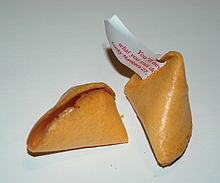
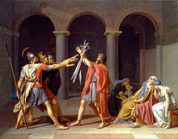
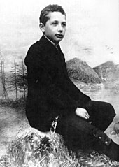
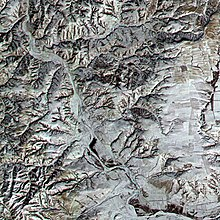
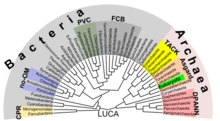
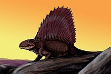
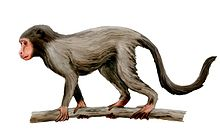
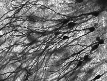

List of common misconceptions
Jump to navigation
Jump to search

_im_Tübinger_Schloss.JPG)


),_OWID.svg.png)


This is a list of common misconceptions. Each entry is worded as a correction; the misconceptions themselves are implied rather than stated. These entries are concise summaries of the main subject articles, which can be consulted for more detail.
A common misconception is a viewpoint or factoid which is often accepted as true in current times. They often arise from conventional wisdom (such as old wives' tales), stereotypes, a misunderstanding of science, or popularisation of pseudoscience. Some common misconceptions are also considered to be urban legends, and they are often involved in moral panics.
Arts and culture[edit]
Food and cooking[edit]
- Searing does not seal moisture in meat; in fact, it causes it to lose some moisture. Meat is seared to brown it, improving its color and flavor.[1]
- Twinkies (a brand of American snack cakes) have a shelf life of approximately 45 days[2]—far shorter than the common (and somewhat jocular) myth that Twinkies are edible for decades or longer.[3] They generally remain on a store shelf for only 7 to 10 days.[4]
- There are no known cases of children having been killed or seriously injured by poisoned candy or fruit given to them by strangers at Halloween or any other time, though there are cases where people have poisoned their own children.[5]
- Most food in the US is edible after its expiration date, with the exception of some perishables.[6]
- Seeds are not the spicy part of chili peppers. In fact, seeds contain a low amount of capsaicin, the component which induces the hot sensation in mammals. The highest concentration of capsaicin is located in the placental tissue (the pith) to which the seeds are attached.[7]
- Turkey meat is not particularly high in tryptophan, and does not cause more drowsiness than other foods.[8]
- Rice does not cause birds to die by inflating their stomachs until they burst. Birds do eat wild rice, though some species avoid it. This common misconception has often led to weddings using millet, confetti, or other materials to shower the newlyweds as they leave the ceremony, instead of traditionally throwing rice.[9][10]
- Spinach does not have a particularly high iron content. The alleged origin of the misconception, that it was caused by a decimal point error, is also false, and the creator of Popeye, Elzie Crisler Segar, never claimed that the source of Popeye's strength was the iron in the spinach but its vitamin A.[11]
Food history[edit]

Fortune cookies are associated with Chinese cuisine, but were actually invented in Japan,[12] and are almost never eaten in China, where they are seen as American.[13]
- Fortune cookies are not found in Chinese cuisine, despite their ubiquity in Chinese restaurants in the United States and other Western countries. They were invented in Japan and introduced to the US by the Japanese.[12] In China, they are considered American, and are rare.[13]
- Spices were not used to mask the flavor of rotting meat before refrigeration. Spices were an expensive luxury item; those who could afford them could afford good meat, and there are no contemporaneous documents calling for spices to disguise the taste of bad meat.[14]
- Steak tartare was not invented by Mongol warriors who tenderized meat under their saddles.[15]
- Whipped cream was not invented by François Vatel at the Château de Chantilly in 1671; the recipe is attested at least a century earlier in Italy, but the name crème chantilly only in the 19th century.[16]
- Catherine de' Medici and her entourage did not introduce Italian foods to the French royal court and thus create French haute cuisine.[17]
Microwave ovens[edit]
- Microwave ovens do not heat food by operating at a special resonance of water molecules in the food but by dielectric heating. Dielectric heating causes sympathetic movement in polar molecules, like water.[18]
- Microwave ovens do not cook food from the inside out. 2.45 GHz microwaves can only penetrate approximately 1 centimeter (3⁄8 inch) into most foods. The inside portions of thicker foods are mainly heated by heat conducted from the outer portions.[19]
- Microwave ovens do not cause cancer, as microwave radiation is non-ionizing, and therefore does not have the cancer risks associated with ionizing radiation such as X-rays. No studies have found that microwave radiation causes cancer, even with exposure levels far greater than normal radiation leakage.[20]
- Looking into a microwave oven does not damage the eyes.[21] Any heat or radiation that could harm the eyes is contained within the oven.[22]
- Microwaving food does not reduce its nutritive value, and may in fact help to preserve it due to shorter cooking times.[23]
Film and television[edit]
- Actor Ronald Reagan was never seriously considered for the role of Rick Blaine in the 1942 film classic Casablanca, eventually played by Humphrey Bogart. This belief came from an early studio press release announcing the film's production that used his name to generate interest in the film. But by the time it had come out, Warner Bros. knew that Reagan was unavailable for any roles in the foreseeable future since he was no longer able to defer his entry into military service.[24] Studio records show that producer Hal B. Wallis had always wanted Bogart for the part.[25]
- Jane Russell never wore a special bra designed by director Howard Hughes during filming of The Outlaw. She said the "ridiculous" contraption hurt so much "I never wore it in The Outlaw, and he never knew. He wasn't going to take my clothes off to check if I had it on. I just told him I did."[26]
- The drag queen Divine was not transgender, did not identify as female and did not wear women's clothing in day to day life.[27]
Language[edit]
- The pronunciation of coronal fricatives in Spanish did not arise through imitation of a lisping king. Only one Spanish king, Peter of Castile, is documented as having a lisp, and the current pronunciation originated two centuries after his death.[28]
- The Chevrolet Nova sold very well in Latin American markets; General Motors did not need to rename the car. While no va does mean 'it doesn't go' in Spanish, nova was easily understood to mean "new".[29]
- Sign languages are not the same worldwide. Aside from the pidgin International Sign, each country generally has its own native sign language, and some have more than one.[30]
- Eskimo tribes, such as the Inuit and Aleut, do not have a disproportionate number of words representing snow in their languages. The myth comes from a misconstruction of Franz Boas's original statement noting that Eskimos had a variety of words for various snow-related concepts; Boas noted that the same was true of English.[31] However, the notion that Eskimo languages have many more root words for "snow" than the English language is supported by a 2010 study.[32][33]
- The Hopi people do in fact have a concept of time, and the Hopi language does have ways of expressing temporal concepts, though they are organized differently from those in Western languages.[34]
- The Chinese word for "crisis" (危机) is not composed of the symbols for "danger" and "opportunity;" the first does represent danger, but the second instead means "inflection point" (the original meaning of the word "crisis").[35] The myth was perpetuated mainly by a campaign speech from John F. Kennedy.[36]
English language[edit]
- Nonstandard, slang, or colloquial terms used by English speakers are sometimes alleged not to be real words, despite appearing in numerous dictionaries. All words in English became accepted by being commonly used for a certain period of time; thus, there are many vernacular words currently not accepted as part of the standard language, or regarded as inappropriate in formal speech or writing, but the idea that they are somehow not words is a misconception.[37] Examples of words that are sometimes alleged not to be words include "irregardless",[38] and "funnest",[39] both of which appear in numerous dictionaries as English words.[40]
- African American Vernacular English speakers do not simply replace "is" with "be" across all tenses, with no added meaning. In fact, AAVE speakers use "be" to mark a habitual grammatical aspect not explicitly distinguished in Standard English.[41]
- The word "crap" did not originate as a back-formation of British plumber Thomas Crapper's surname, nor does his name originate from the word "crap", although the surname may have helped popularize the word.[42] The surname "Crapper" is a variant of "Cropper", which originally referred to someone who harvested crops.[43] The word "crap" ultimately comes from Medieval Latin crappa, meaning "chaff".[44]
- "420" did not originate from the Los Angeles police or penal code for marijuana use.[45] California Penal Code section 420 prohibits the obstruction of access to public land.[45][46] The use of "420" started in 1971 at San Rafael High School, where it indicated the time, 4:20 pm, when a group of students would go to smoke.[45]
- The word "fuck" did not originate in Christianized Anglo-Saxon England (7th century CE) as an acronym for "fornication under consent of king"; nor did it originate as an acronym for "for unlawful carnal knowledge", either as a sign posted above adulterers in the stocks, or as a criminal charge against members of the British Armed Forces; nor did it originate during the 15th-century Battle of Agincourt as a corruption of "pluck yew" (an idiom falsely attributed to the English for drawing a longbow).[47] Modern English was not spoken until the 16th century, and words such as "fornication" and "consent" did not exist in any form in English until the influence of Anglo-Norman in the late 12th century. The earliest certain recorded use of "fuck" in English comes from c. 1475, in the poem "Flen flyys", where it is spelled fuccant (conjugated as if a Latin verb meaning "they fuck"). It is of Proto-Germanic origin, and is related to either Dutch fokken, German ficken, and Norwegian fukka.[48]
- The word "gringo" as a term for someone foreign to Latin America did not originate during the Mexican–American War (1846–48), the Venezuelan War of Independence (1811–23), the Mexican Revolution (1910–20), or from the American Old West (c. 1865–99) as a corruption of the English lyrics "green grow" in either "Green Grow the Lilacs" (Irish folk song) or "Green Grow the Rushes, O" (English folk song), as sung by US soldiers or cowboys;[49] nor did it originate during any of these times as a corruption of "Green, go home!", falsely said to have been shouted at green-clad American troops.[citation needed] The word originally simply meant 'foreigner', and is probably a corruption of the Spanish word griego for 'Greek' (along the lines of the idiom "It's Greek to me").[50]
- The expression "rule of thumb" did not originate from an English law allowing a man to beat his wife with a stick no thicker than his thumb, and there is no evidence that such a law ever existed.[51] The false etymology has been broadly reported in media including The Washington Post (1989), CNN (1993), and Time magazine (1983).[52] The expression originates from the seventeenth century from various trades where quantities were measured by comparison to the width or length of a thumb.
- The word "the" was never pronounced or spelled "ye" in Old or Middle English.[53] The confusion, seen in the common stock phrase "ye olde," derives from the use of the character thorn (þ), which in Middle English represented the sound now represented in Modern English by "th." In blackletter, þ and y were difficult to distinguish, meaning that "þe" () very closely resembled "ye."[54]
- The anti-Italian slur wop did not originate from an acronym for "without papers" or "without passport", as is widely believed;[55] it is actually derived from the term guappo (roughly meaning thug or "dandy"), from Spanish guapo.[56]

- "Xmas" did not originate as a secular plan to "take the Christ out of Christmas".[57] X stands for the Greek letter chi, the starting letter of Χριστός (Christós), "Christ" in Greek.[58] The use of the word "Xmas" in English can be traced to the year 1021, when monks in Great Britain used the X in place of "Christ" for abbreviation, while transcribing classical manuscripts into Old English.[57] The Oxford English Dictionary's "first recorded use of 'Xmas' for 'Christmas' dates to 1551."[59]
Law, crime, and military[edit]
- It is rarely necessary to wait 24 hours before filing a missing person report. When there is evidence of violence or of an unusual absence, it is important to start an investigation promptly.[60] The UK government advises "You do not have to wait 24 hours before contacting the police."[61]
- Twinkies were not claimed to be the cause of San Francisco mayor George Moscone's and supervisor Harvey Milk's murders. In the trial of Dan White, the defense successfully argued White's diminished capacity as a result of severe depression. While eating Twinkies was cited as evidence of this depression, it was never claimed to be the cause of the murders.[62]
- The US Armed Forces have generally forbidden military enlistment as a form of deferred adjudication (that is, an option for convicts to avoid jail time) since the 1980s. US Navy protocols discourage the practice, while the other four branches have specific regulations against it.[63]
- Legal tender laws in the United States do not state that a private business, a person, or an organization must accept cash for payment, though it must be regarded as valid payment for debts tendered to a creditor.[64]
- The United States does not require police officers to identify themselves as police in the case of a sting or other undercover work, and police officers may lie when engaged in such work.[65] Claiming entrapment as a defense instead focuses on whether the defendant was induced by undue pressure (such as threats) or deception from law enforcement to commit crimes they would not have otherwise committed.[66]
- Crime in the United States decreased between 1993 and 2017. The violent crime rate fell 49% in that period,[67] and the number of gun homicides has decreased.[68]
- The First Amendment to the United States Constitution generally only prevents government restrictions on the freedoms of religion, speech, press, assembly, or petition,[69] not restrictions imposed by private individuals or businesses[70] unless they are acting on behalf of the government.[71] Other laws may restrict the ability of private businesses and individuals to restrict the speech of others.[72]
- Neither the Mafia nor other criminal organizations regularly use cemented shoes to drown their victims.[73] However, there are at least two cases of the tactic being used: one in 2016 and the other in 1964.[74]
- In the United States, a defendant may not have their case dismissed simply because they were not read their Miranda rights at the time of their arrest. Miranda warnings cover the rights of a person when they are taken into custody and then interrogated by law enforcement.[75][76] If a person is not given a Miranda warning before the interrogation is conducted, statements made by them during the interrogation may not be admissible in a trial. The prosecution may still present other forms of evidence, or statements made during interrogations where the defendant was read their Miranda rights, to get a conviction.[77]
Literature[edit]
- Many quotations are incorrect or attributed to people who never uttered them, and quotations from obscure or unknown authors are often attributed to more famous figures. Commonly misquoted individuals include Mark Twain, Albert Einstein, Adolf Hitler, Winston Churchill, Abraham Lincoln, William Shakespeare, and the Buddha.[78]
- Mary Shelley's 1818 novel Frankenstein is named after the scientist, Victor Frankenstein, who created the sapient creature in the novel, not the creature itself, which is never named and is called Frankenstein's monster. However, as later adaptations started to refer to the monster itself as Frankenstein, this usage became well-established and some do not consider it erroneous any more.[79][80]
Music[edit]
- Absolute or "perfect" pitch is not extremely rare. Its prevalence has been estimated at as high as 1 in 25 people among music students.[81]
Classical music[edit]
- The melody of "Twinkle, Twinkle, Little Star", the "Alphabet Song", and "Baa, Baa, Black Sheep" was not composed by Mozart.[82]
- Mozart did not die from poisoning, and was not poisoned by his colleague Antonio Salieri or anyone else.[83] The false rumor originated soon after Salieri's death, and was dramatized in Alexander Pushkin's play Mozart and Salieri.[84] The 1984 film Amadeus also suggested Salieri's involvement in Mozart's death, but he was not shown to use poison.[85]
- The minuet in G major by Christian Petzold is commonly attributed to Johann Sebastian Bach, although the piece was identified in the 1970s as a movement from a harpsichord suite by Petzold. The misconception stems from Notebook for Anna Magdalena Bach, a book of sheet music by various composers (mostly Bach) in which the minuet is found.[86] Compositions that are doubtful as works of Bach are catalogued as "BWV Anh.", short for "Bach-Werke-Verzeichnis Anhang" ("Bach works catalogue annex"); the minuet is assigned to BWV Anh. 114.
- The "Minute Waltz" takes, on average, two minutes to play as originally written.[87] Its name comes from the adjective minute, meaning 'small', and not the noun spelled the same.[88]
Popular music[edit]
- "Edelweiss" is not the national anthem of Austria, but an original composition created for the musical The Sound of Music.[89] The Austrian national anthem is "Land der Berge, Land am Strome" ("Land of the Mountains, Land on the River").[90] The edelweiss is also Austria's state flower.
- The British Invasion was not single-handedly to blame for the destruction of American popular music upon the first wave of Beatlemania in 1964. Only one act, The Kingston Trio, had no other factors in its decline; most others either continued or increased their popularity (The Beach Boys, The Four Seasons, and artists signed to Motown Records), were already seeing diminishing returns in 1963 even before the Invasion began (surf rock bands other than the Beach Boys, folk revival acts), or had other complicating factors in their decline (acts signed to Cameo-Parkway Records were affected by the loss of American Bandstand, while Elvis Presley had moved on to a movie career).[91]
- The Beatles' 1965 appearance at Shea Stadium was not the first time that a rock concert was played at a large, outdoor sports stadium in the U.S. Such venues were employed by Elvis Presley in the 1950s and the Beatles themselves in 1964.[92]
- The Beatles were not the first to experiment with sounds processed through a Leslie speaker.[93]
- The Rolling Stones were not performing "Sympathy for the Devil" at the 1969 Altamont Free Concert when Meredith Hunter was stabbed to death by a member of the local Hells Angels chapter that was serving as security. While the incident that culminated in Hunter's death began while the band was performing the song, prompting a brief interruption before the Stones finished it, it concluded several songs later as the band was performing "Under My Thumb".[94] The misconception arose from mistaken reporting in Rolling Stone.[95]
- Phil Collins did not sing his 1981 hit "In the Air Tonight" about witnessing someone drowning and then confronting the person in the audience who let it happen. According to Collins himself, it was about his emotions when divorcing from his first wife.[96]
- "Don't Worry, Be Happy", written and sung by Bobby McFerrin, is commonly believed to be sung by the reggae musician Bob Marley, but the song was written seven years after Marley died.[97] "Three Little Birds," which Marley did write, includes a similar line: "don't worry about a thing, every little thing's gonna be all right."[98]
Religion[edit]
- The historical Buddha is not known to have been fat. The chubby monk known as the "fat Buddha" or "laughing Buddha" in the West is a 10th-century Chinese Buddhist folk hero by the name of Budai.[99]
- Not all religions teach that there is a god or gods in the Western sense. For example, Buddhism and Jainism do not have a creator god and Unitarian Universalism has no creed at all.[100]
Christianity[edit]
- Jesus was most likely not born on any date corresponding to December 25, the date on which his birth is traditionally celebrated as Christmas. It is more likely that his birth was in either the season of spring or perhaps summer, while December 25 in the Northern Hemisphere is at the beginning of winter. Also, although the Common Era ostensibly counts the years since his birth,[101] it is unlikely that he was born in either AD 1 or 1 BC, as such a numbering system would imply. Modern historians estimate a date closer to between 6 BC and 4 BC.[102]
- The Bible does not say that exactly three magi came to visit the baby Jesus, nor that they were kings, or rode on camels, or that their names were Casper, Melchior, and Balthazar, nor what color their skin was. Three magi are inferred because three gifts are described, but the Bible says only that there was more than one;[103] still, artistic depictions of the nativity have almost always depicted three magi since the 3rd century.[104] The Bible only specifies an upper limit of 2 years for the interval between the birth and the visit (Matthew 2:16), and artistic depictions and the closeness of the traditional dates of December 25 and January 6 encourage the popular assumption that the visit took place in the same season as the birth, but later traditions varied, with the visit taken as occurring up to two years later.[105] The association of magi with kings—a connection vehemently opposed by John Calvin as a "ridiculous contrivance"[106]—comes from attempts to tie Old Testament prophecies such as Psalm 72 and chapter 60 of the Book of Isaiah, to the magi; most accounts describe the magi as being astrologers or magicians.[107][108]
- The idea that Mary Magdalene was a prostitute before she met Jesus is not found in the Bible or in any of the other earliest Christian writings. The misconception likely arose due to a conflation between Mary Magdalene, Mary of Bethany (who anoints Jesus's feet in John 11:1–12), and the unnamed "sinful woman" who anoints Jesus's feet in Luke 7:36–50.[109]
- Paul the Apostle did not change his name from Saul. He was born a Jew, with Roman citizenship inherited from his father, and thus carried both a Hebrew and a Greco-Roman name from birth. Luke indicates the coexistence of the names in Acts 13:9: "...Saul, who also is called Paul...".[110]
- The Roman Catholic dogma of the Immaculate Conception does not state that Jesus or his mother Mary was born to a virgin. Rather, it states that Mary was not in a state of original sin from the moment of her own conception.[111]
- Roman Catholic dogma does not say that the pope is either sinless or always infallible.[112] Catholic dogma since 1870 does state that a dogmatic teaching contained in divine revelation that is promulgated by the pope (deliberately, and under certain very specific circumstances; generally called ex cathedra) is free from error, although official invocation of papal infallibility is rare. While most theologians state that canonizations meet the requisites,[113] aside from that, most recent popes have finished their reign without a single invocation of infallibility. Otherwise, even when speaking in his official capacity, dogma does not hold that he is free from error.
- St. Peter's Basilica is not the mother church of Roman Catholicism, nor is it the official seat of the Pope.[114] These equivalent distinctions belong to the Archbasilica of Saint John Lateran, which is located in Rome outside of Vatican City but over which the Vatican has extraterritorial jurisdiction.[114] This also means that St. Peter's is not a cathedral in the literal sense of that word.[114] St. Peter's is, however, used as the principal church for many papal functions.[114]
- Members of The Church of Jesus Christ of Latter-day Saints (LDS Church) no longer practice polygamy.[115] Currently, the LDS Church excommunicates any members who practice polygamy within the organization.[116] However, some Mormon fundamentalist sects still practice polygamy within their groups.[117] For more details on this subject, see Mormonism and polygamy.
- Saint Augustine did not say "God created hell for inquisitive people".[118] He actually said: "I do not give the answer that someone is said to have given (evading by a joke the force of the objection), 'He was preparing hell for those who pry into such deep subjects.' … I do not answer in this way. I would rather respond, 'I do not know,' concerning what I do not know than say something for which a man inquiring about such profound matters is laughed at, while the one giving a false answer is praised."[119] So Augustine is saying that he would not say this and that he does not know the answer to the question.
Islam[edit]
- Most Muslim women do not wear a burqa (also transliterated as burka or burkha), which covers the body, head, and face, with a mesh grille to see through. Many Muslim women cover their hair and face (excluding the eyes) with a niqāb, or just their hair with a hijab.[120] However, there are also Muslim women who wear neither face nor head coverings of any kind.[121]
- A fatwa is a non-binding legal opinion issued by an Islamic scholar under Islamic law; it is therefore commonplace for fatwā from different authors to disagree. The popular misconception[122] that the word means a death sentence probably stems from the fatwā issued by Ayatollah Ruhollah Khomeini of Iran in 1989 regarding the author Salman Rushdie, who he stated had earned a death sentence for blasphemy. This event led to fatwā gaining widespread media attention in the West.[123]
- The word "jihad" does not always mean "holy war"; literally, the word in Arabic means "struggle". While there is such a thing as "jihad bil saif", or jihad "by the sword",[124] many modern Islamic scholars usually say that it implies an effort or struggle of a spiritual kind.[125] Scholar Louay Safi asserts that "misconceptions and misunderstandings regarding the nature of war and peace in Islam are widespread in both the Muslim societies and the West", as much following 9/11 as before.[126]
- The Quran does not promise martyrs 72 virgins in heaven. It does mention virgin female companions,[127][128] houri, to all people—martyr or not—in heaven, but no number is specified. The source for the 72 virgins is a hadith in Sunan al-Tirmidhi by Imam Tirmidhi.[129][130] Hadiths are sayings and acts of the prophet Muhammad as reported by others, and as such they are not part of the Quran itself. Muslims are not meant to necessarily believe all hadiths, and that applies particularly to those hadiths that are weakly sourced, such as this one.[131] Furthermore, the correct translation of this particular hadith is a matter of debate.[129]
Judaism[edit]

- The forbidden fruit mentioned in the Book of Genesis is never identified as an apple,[132] a misconception widely depicted in Western art. The original Hebrew texts mention only tree and fruit. Early Latin translations use the word mali, which can mean either "evil" or "apple". In early Germanic languages the word apple and its cognates usually simply meant "fruit". German and French artists commonly depict the fruit as an apple from the 12th century onwards, and John Milton's Areopagitica from 1644 explicitly mentions the fruit as an apple.[133] Jewish scholars have suggested that the fruit could have been a grape, a fig, an apricot, or an etrog.[134]
- While they are forbidden by the Book of Leviticus, having tattoos does not mean someone cannot be buried in a Jewish cemetery as is commonly believed, just as violating any other prohibition does not prevent a Jew from ultimately being buried in a Jewish cemetery.[135]
Sports[edit]
- Abner Doubleday did not invent baseball, nor did it originate in Cooperstown, New York. It is believed to have evolved from other bat-and-ball games such as cricket and rounders and first took its modern form in New York City.[136]
- The black belt in martial arts does not necessarily indicate expert level or mastery. It was introduced for judo in the 1880s to indicate competency at all of the basic techniques of the sport. Promotion beyond 1st dan (the first black belt rank) varies among different martial arts. In judo and derived martial arts such as Brazilian jiu-jitsu, holders of higher master ranks are awarded alternating red and white panels, and the highest grandmasters wear solid red belts.[137] Some other arts such as taekwondo use black belts with a number of gold bars to indicate the holder's dan rank.
- The use of triangular corner flags in English football is not a privilege reserved for those teams that have won an FA Cup in the past, despite a wide belief to the contrary[138] that inspired a scene in the film Twin Town. The Football Association's rules are silent on the subject, and often the decision over what shape flag to use has been up to the individual club's groundskeepers.[139]
- India did not withdraw from the 1950 FIFA World Cup because their squad played barefoot, which was against FIFA regulations.[140] In reality, India withdrew because the country's managing body, the All India Football Federation (AIFF), was insufficiently prepared for the team's participation and gave various reasons for withdrawing, including a lack of funding and prioritizing the Olympics.[141] However, the myth frequently resurfaces in both India and abroad as fact (especially come World Cup time).[142] The AIFF itself may have been the source of this myth.[143]
History[edit]
Ancient[edit]
_im_T%C3%BCbinger_Schloss.JPG)
Ancient Greek sculptures were originally painted bright colors.[144]
- Ancient Greek and Roman sculptures were originally painted with bright colors; they only appear white today because the original pigments have deteriorated. Some well-preserved statues still bear traces of their original coloration.[144][145]
- Tutankhamun's tomb is not inscribed with a curse on those who disturb it. This was a media invention of 20th-century tabloid journalists.[146]
- The ancient Greeks did not use the word "idiot" (Ancient Greek: ἰδιώτης, romanized: ídiṓtēs) to disparage people who did not take part in civic life or who did not vote. An ἰδιώτης was simply a private citizen as opposed to a government official. Later, the word came to mean any sort of non-expert or layman, then someone uneducated or ignorant, and much later to mean stupid or mentally deficient.[147]

There is no evidence of using Roman salute by ancient Romans as depicted in the painting The Oath of the Horatii (1784).
- There is no evidence that the Roman salute, in which the arm is fully extended forwards or diagonally with fingers touching, was actually used in ancient Rome for greeting or any other purpose.[148] The idea that the salute was popular in ancient times originated in the 1784 painting Oath of the Horatii by the French artist Jacques-Louis David, which inspired later salutes, most notably the Nazi salute.
- Vomiting was not a regular part of Roman dining customs.[149] In ancient Rome, the architectural feature called a vomitorium was the entranceway through which crowds entered and exited a stadium, not a special room used for purging food during meals.[150]
- Julius Caesar was not born via caesarean section.[151] Such a procedure would have been fatal to the mother at the time,[152] and historical evidence indicates Caesar's mother being alive during his own lifetime. The caesarean section was not named after Caesar, but rather probably comes from the Latin verb caedere 'to cut'.
- The death of the Greek philosopher Hypatia of Alexandria at the hands of a mob of Christian monks in 415 was mainly a result of her involvement in a bitter political feud between her close friend and student Orestes, the Roman prefect of Alexandria, and the bishop Cyril, not her religious views.[153] Her death also had nothing to do with the destruction of the Library of Alexandria,[154] which had likely already ceased to exist centuries before Hypatia was born.[154]
- Scipio Aemilianus did not plow over the city of Carthage and sow it with salt after defeating it in the Third Punic War.[155]
Middle Ages[edit]
- The Middle Ages were not "a time of ignorance, barbarism and superstition"; the Church did not place religious authority over personal experience and rational activity; and the term "Dark Ages" is rejected by modern historians.[156]
- While modern life expectancies are much higher than those in the Middle Ages and earlier,[157] adults in the Middle Ages did not die in their 30s or 40s on average. That was the life expectancy at birth, which was skewed by high infant and adolescent mortality. The life expectancy among adults was much higher;[158] a 21-year-old man in medieval England, for example, could expect to live to the age of 64.[159][158]
- There is no evidence that Vikings wore horns on their helmets; this would have been highly impractical in battle.[160] In fact, the image of Vikings wearing horned helmets stems from the scenography of an 1876 production of the Der Ring des Nibelungen opera cycle by Richard Wagner.[161]
- Vikings did not drink out of the skulls of vanquished enemies. This was based on a mistranslation of the skaldic poetic use of ór bjúgviðum hausa (branches of skulls) to refer to drinking horns.[162]
- Vikings did not name Iceland "Iceland" as a ploy to discourage others from settling it. Naddodd and Hrafna-Flóki Vilgerðarson both saw snow and ice on the island when they traveled there, giving the island its name.[163] Greenland, on the other hand, was named in the hope that it would help attract settlers.[164]
- King Canute did not command the tide to reverse in a fit of delusional arrogance.[165] His intent that day, if indeed the incident did occur, was most likely to prove a point to members of his privy council that no man is all-powerful, and we all must bend to forces beyond our control, such as the tides.
- There is no evidence that iron maidens were used for torture, or even yet invented, in the Middle Ages. Instead they were pieced together in the 18th century from several artifacts found in museums to create spectacular objects intended for (commercial) exhibition.[166]
An anti-clockwise spiral staircase at Hohenzollern Castle in Germany. The choice of anticlockwise or clockwise spirals in castles had more to do with convenience than with hindering right-handed attackers.
- Spiral staircases in castles were not designed in a clockwise direction to hinder right-handed attackers.[167][168] While clockwise spiral staircases are more common in castles than anti-clockwise, they were even more common in medieval structures without a military role such as religious buildings.[169][167]
- The plate armor of European soldiers did not stop soldiers from moving around or necessitate a crane to get them into a saddle. They would routinely fight on foot and could mount and dismount without help. In fact, soldiers equipped with plate armor were more mobile than those with mail armor (chain armor), as mail was heavier and required stiff padding beneath due to its pliable nature.[170] It is true that armor used in tournaments in the late Middle Ages was significantly heavier than that used in warfare,[171] which may have contributed to this misconception.
- Whether chastity belts, devices designed to prevent women from having sexual intercourse, were invented in medieval times is disputed by modern historians. Most existing chastity belts are now thought to be deliberate fakes or anti-masturbatory devices from the 19th and early 20th centuries.[172]

Medieval depiction of a spherical Earth.
- Medieval Europeans did not believe Earth was flat. Scholars have known the Earth is spherical since at least 500 BC.[173] This myth was created in the 17th century by Protestants to argue against Catholic teachings.[174]
- Christopher Columbus' efforts to obtain support for his voyages were hampered not by belief in a flat Earth, but by valid worries that the East Indies were farther than he realized.[175] In fact, Columbus grossly underestimated the Earth's circumference because of two calculation errors.[176] The myth that Columbus proved the Earth was round was propagated by authors like Washington Irving in A History of the Life and Voyages of Christopher Columbus.[173][177]
- Christopher Columbus was not the first European to visit the Americas:[178] Leif Erikson, and possibly other Vikings before him, explored Vinland, which is presumably both Newfoundland and the Gulf of Saint Lawrence as far as northeastern New Brunswick. Ruins at L'Anse aux Meadows prove that at least one Norse settlement was built in Newfoundland, confirming a narrative in the Saga of Erik the Red. Columbus also never reached any land that now forms part of the contiguous United States; most of the landings Columbus made on his four voyages, including the initial October 12, 1492 landing (the anniversary of which forms the basis of Columbus Day), were on Caribbean islands that are now independent countries. However, Columbus did land on the mainland of South America during his third voyage to the Americas (1498–1500) and on the island of Puerto Rico (now a U.S. territory) during his first voyage.
Early modern[edit]
- The Mexica people of the Aztec Empire did not mistake Hernán Cortés and his landing party for gods during Cortés' conquest of the empire. This myth came from Francisco López de Gómara, who never went to Mexico and conjured the myth while working for the retired Cortés in Spain years after the conquest.[179]
- Marco Polo did not import pasta from China,[180] a misconception that originated with the Macaroni Journal, published by an association of food industries to promote the use of pasta in the United States.[181] Marco Polo describes a food similar to "lasagna" in his Travels, but he uses a term with which he was already familiar.
- Contrary to the popular image of the Pilgrim Fathers, the early settlers of the Plymouth Colony in North America usually did not wear all black, and their capotains (hats) were shorter and rounder than the widely depicted tall hat with a buckle on it. Instead, their fashion was based on that of the late Elizabethan era: doublets, jerkins and ruffs. Both men and women wore the same style of shoes, stockings, capes, coats and hats in a range of colors including reds, yellows, purples, and greens.[182] The traditional image was formed in the 19th century when buckles were a kind of emblem of quaintness.[183] (The Puritans, who also settled in Massachusetts near the same time, did frequently wear all black.)[184]
- There is little evidence to support that the Italian mathematician, physicist, and philosopher Galileo Galilei uttered "e pur si muove" or "eppur si muove" (and yet it moves) in 1633 after being forced by the Catholic Church to abandon his heliocentric theory in favor of the geocentric theory as adopted by the Church.[185]
- The familiar story that Isaac Newton was inspired to research the nature of gravity by an apple hitting his head is almost certainly apocryphal. All Newton himself ever said was that the idea came to him as he sat "in a contemplative mood" and "was occasioned by the fall of an apple".[186]
- The accused at the Salem witch trials in North America were not burned at the stake; about 15 died in prison, 19 were hanged and one was pressed to death.[187]
- Marie Antoinette did not say "let them eat cake (brioche)" when she heard that the French peasantry were starving due to a shortage of bread. The phrase was first published in Rousseau's Confessions when Marie was only nine years old and not attributed to her, just to "a great princess". The phrase was used as anti-monarchist propaganda.[188]
- George Washington did not have wooden teeth. His dentures were made of gold, hippopotamus ivory, lead, animal teeth (including horse and donkey teeth),[189] and probably human teeth purchased from slaves.[190]
- The signing of the United States Declaration of Independence did not occur on July 4, 1776. After the Second Continental Congress voted to declare independence on July 2, the final language of the document was approved on July 4, and it was printed and distributed on July 4–5.[191] However, the actual signing occurred on August 2, 1776.[192]
- Benjamin Franklin did not propose that the wild turkey be used as the symbol for the United States instead of the bald eagle. While he did serve on a commission that tried to design a seal after the Declaration of Independence, his proposal was an image of Moses. His objections to the eagle as a national symbol and preference for the turkey were stated in a 1784 letter to his daughter in response to the Society of the Cincinnati's use of the former; he never expressed that sentiment publicly.[193]
- Benjamin Banneker did not recall from memory or reproduce Pierre (Peter) Charles L'Enfant's plan for the city of Washington, D.C., did not assist in the planning or surveying of that city, did not write one of the first almanacs in the United States, did not invent a clock, and was not one of the first people to record observations of the periodical cicada (see Mythology of Benjamin Banneker for further information and references).
- There was never a bill to make German the official language of the United States that was defeated by one vote in the House of Representatives, nor has one been proposed at the state level. In 1794, a petition from a group of German immigrants was put aside on a procedural vote of 42 to 41, that would have had the government publish some laws in German. This was the basis of the Muhlenberg legend, named after the Speaker of the House at the time, Frederick Muhlenberg, a speaker of German descent who abstained from this vote.[194]
Modern[edit]
Napoleon on the Bellerophon by Charles Lock Eastlake. Napoleon was taller than his nickname, le Petit Caporal, suggests.
- Napoleon Bonaparte was not short. He was actually slightly taller than the average Frenchman of his time.[195] After his death in 1821, the French emperor's height was recorded as 5 feet 2 inches in French feet, which in English measurements is 5 feet 7 inches (1.70 m).[196] He was actually nicknamed le Petit Caporal (The Little Corporal) as a term of endearment.[citation needed] Napoleon was often accompanied by his imperial guard, who were selected for their height[197]—this may have contributed to a perception that he was comparatively short.
- Cinco de Mayo is not Mexico's Independence Day, but the celebration of the Mexican Army's victory over the French in the Battle of Puebla on May 5, 1862. Mexico's Declaration of Independence from Spain in 1810 is celebrated on September 16.[198]
- Victorian-era doctors did not invent the vibrator to cure female "hysteria" by triggering orgasm.[199]
- The common image of Santa Claus (Father Christmas) as a jolly old man in red robes was not created by The Coca-Cola Company as an advertising gimmick. Despite being historically represented with different characteristics in different colors of robes, Santa Claus had already taken his modern form in popular culture and seen extensive use in other companies' advertisements and other mass media at the time Coca-Cola began using his image in the 1930s.[200]
- The Italian dictator Benito Mussolini did not "make the trains run on time". Much of the repair work had been performed before he and the Fascist Party came to power in 1922. Moreover, the Italian railways' supposed adherence to timetables was more propaganda than reality.[201]
- There is no evidence of Polish cavalry mounting a brave but futile charge against German tanks using lances and sabers during the German invasion of Poland in 1939. This story may have originated from German propaganda efforts following the charge at Krojanty, in which a Polish cavalry brigade surprised German infantry in the open, and successfully charged and dispersed them, until driven off by armored cars. While Polish cavalry still carried the saber for such opportunities, they were trained to fight as highly mobile, dismounted cavalry (dragoons) and issued with light anti-tank weapons.[202]
- During the occupation of Denmark by the Nazis during World War II, King Christian X of Denmark did not thwart Nazi attempts to identify Jews by wearing a yellow star himself. Jews in Denmark were never forced to wear the Star of David. The Danish resistance did help most Jews flee the country before the end of the war.[203]

Albert Einstein, photographed at 14, did not fail mathematics at school.
- Albert Einstein did not fail mathematics classes in school. Einstein remarked, "I never failed in mathematics.... Before I was fifteen I had mastered differential and integral calculus."[204] Einstein did, however, fail his first entrance exam into the Swiss Federal Polytechnic School (ETH) in 1895, when he was two years younger than his fellow students, but scored exceedingly well in the mathematics and science sections, then passed on his second attempt.[205]
- US President John F. Kennedy's words "Ich bin ein Berliner" are standard German for "I am a Berliner (citizen of Berlin)."[206] It is not true that by not leaving out the indefinite article "ein," he changed the meaning of the sentence from the intended "I am a citizen of Berlin" to "I am a Berliner", a Berliner being a type of German pastry, similar to a jelly donut, amusing Germans.[207] Furthermore, the pastry which is known by many names in Germany was not then nor is it now commonly called "Berliner" in the Berlin area.[208]
- Although popularly known as the "red telephone", the Moscow–Washington hotline was never a telephone line, nor were red phones used. The first implementation of the hotline used teletype equipment, which was replaced by facsimile (fax) machines in 1988. Since 2008, the hotline has been a secure computer link over which the two countries exchange emails.[209] Moreover, the hotline links the Kremlin to the Pentagon, not the White House.[210]
- Russia does not explicitly have an independence day, nor is there a date that officially commemorates such an occasion. There have been many states that predate the current Russian Federation, and the public holiday of Russia Day only celebrates the establishment of present-day Russia, which occurred on June 12, 1990. Both Russians and foreigners commonly refer to Russia Day as "Russia's Independence Day" since it reflects the break from the Soviet Union that held dominion over Russia from 1922 to 1991.[211]
United States[edit]
- The Alaska Purchase was generally popular in the United States, both among the public and the press. The opponents of the purchase who characterized it as "Seward's Folly", alluding to William H. Seward, the Secretary of State who negotiated it, represented a minority opinion at the time.[212]
- Cowboy hats were not initially popular in the Western American frontier, with derby or bowler hats being the typical headgear of choice.[213] Heavy marketing of the Stetson "Boss of the Plains" model in the years following the American Civil War was the primary driving force behind the cowboy hat's popularity, with its characteristic dented top not becoming standard until near the end of the 19th century.[214]
- The Great Chicago Fire of 1871 was not caused by Mrs. O'Leary's cow kicking over a lantern. A newspaper reporter later admitted to having invented the story to make colorful copy.[215]
- There is no evidence that Frederic Remington, on assignment to Cuba in 1897, telegraphed William Randolph Hearst, "There will be no war. I wish to return," and that Hearst responded, "Please remain. You furnish the pictures, and I'll furnish the war". The anecdote was originally included in a book by James Creelman, and probably never happened.[216]
- Immigrants' last names were not Americanized (voluntarily, mistakenly, or otherwise) upon arrival at Ellis Island. Officials there kept no records other than checking ship manifests created at the point of origin, and there was simply no paperwork that would have let them recast surnames, let alone any law. At the time in New York, anyone could change the spelling of their name simply by using that new spelling.[217] These names are often referred to as an "Ellis Island Special".
- The paralytic illness of Franklin D. Roosevelt is now thought unlikely to be polio, which was the diagnosis at the time in 1921, but rather more consistent with Guillain–Barré syndrome.[218]
- Distraught stockbrokers did not jump to their deaths after the Wall Street Crash of 1929. The source of this myth seems to be Winston Churchill's account of a man jumping off the Savoy-Plaza Hotel, just one floor below where Churchill was staying. In fact that was a German tourist, and his fall was reported as accidental.[219]
- There was no widespread outbreak of panic across the United States in response to Orson Welles's 1938 radio adaptation of H.G. Wells's The War of the Worlds. Only a very small share of the radio audience was even listening to it, and isolated reports of scattered incidents and increased call volume to emergency services were played up the next day by newspapers, eager to discredit radio as a competitor for advertising. Both Welles and CBS, which had initially reacted apologetically, later came to realize that the myth benefited them and actively embraced it in later years.[220]
- U.S. Senator George Smathers never gave a speech to a rural audience describing his opponent, Claude Pepper, as an "extrovert" whose sister was a "thespian", in the apparent hope they would confuse them with similar-sounding words like "pervert" and "lesbian". Smathers offered US$10,000 to anyone who could prove he had made the speech; it was never claimed.[221]
- Rosa Parks was not sitting in the front ("white") section of the bus during the event that made her famous and incited the Montgomery bus boycott. Rather, she was sitting in the front of the back ("colored") section of the bus, where African Americans were expected to sit, but refused to give up her seat to a white man who asked for it (which was also the expected action of African Americans at the time).
- African-American intellectual and activist W.E.B. Du Bois did not renounce his U.S. citizenship while living in Ghana shortly before his death,[222] as is often claimed.[223] In early 1963, his membership in the Communist Party and support for the Soviet Union incited the U.S. State Department not to renew his passport while he was already in Ghana overseeing the creation of the Encyclopedia Africana. After leaving the embassy, he stated his intention to renounce his citizenship in protest. But while he took Ghanaian citizenship, he never went through the process of renouncing his American citizenship,[224] and may not even have intended to.[222]
- When the bartender Kitty Genovese was murdered outside her Queens apartment in 1964, there were not 37 neighbors standing idly by and watching who failed to call the police until after she was dead, as The New York Times initially reported[225] to widespread public outrage that persisted for years. Later reporting established that the police report the Times had initially relied on was inaccurate, that Genovese had been attacked twice in different locations, and that, while some of the many witnesses heard the attack, they only heard brief portions and did not realize what was occurring, with only six or seven actually reporting seeing anything. Some called police; one said "I didn't want to get involved",[226] an attitude later attributed to all the residents who saw or heard part of the attack.[227]
- While it was praised by one architectural magazine before it was built as "the best high apartment of the year", the Pruitt–Igoe housing project in St. Louis, Missouri, considered to epitomize the failures of urban renewal in American cities after it was demolished in the early 1970s, never won any awards for its design.[228] The architectural firm that designed the buildings did win an award for an earlier St. Louis project, which may have been confused with Pruitt–Igoe.[229]
- There is little contemporary documentary evidence for the notion that US Vietnam veterans were spat upon by anti-war protesters upon return to the United States. This belief was detailed in some biographical accounts and was later popularized by films such as Rambo.[230][231][232]
Science, technology, and mathematics[edit]
Astronomy and spaceflight[edit]

A satellite image of a section of the Great Wall of China, running diagonally from lower left to upper right (not to be confused with the much more prominent river running from upper left to lower right). The region pictured is 12 by 12 kilometers (7.5 mi × 7.5 mi).
- The Great Wall of China is not, as is claimed, the only human-made object visible from space or from the Moon. None of the Apollo astronauts reported seeing any specific human-made object from the Moon, and even Earth-orbiting astronauts can see it only with magnification. City lights, however, are easily visible on the night side of Earth from orbit.[233]
- Black holes have the same gravitational effects as any other equal mass in their place. They will draw objects nearby towards them, just as any other planetary body does, except at very close distances to the black hole—comparable to its Schwarzschild radius.[234] If, for example, the Sun were replaced by a black hole of equal mass, the orbits of the planets would be essentially unaffected. A black hole can act like a "cosmic vacuum cleaner" and pull a substantial inflow of surrounding matter, but only if the star from which it formed was already doing so.[235]
- Seasons are not caused by the entire Earth being closer to the Sun in the summer than in the winter, but by the effects of Earth's 23.4-degree axial tilt. Each hemisphere is tilted towards the Sun in its respective summer (July in the Northern Hemisphere and January in the Southern Hemisphere), resulting in longer days and more direct sunlight, with the opposite being true in the winter.[236][237]
- When a meteor or spacecraft enters the atmosphere, the heat of entry is not (primarily) caused by friction, but by adiabatic compression of air in front of the object.[238][239][240]
- Egg balancing is possible on every day of the year, not just the vernal equinox,[241] and there is no relationship between any astronomical phenomenon and the ability to balance an egg.[242]
- The Fisher Space Pen was not commissioned by NASA at a cost of millions of dollars, while the Soviets used pencils. It was independently developed by Paul C. Fisher, founder of the Fisher Pen Company, with $1 million of his own funds.[243] NASA tested and approved the pen for space use, then purchased 400 pens at $6 per pen.[244] The Soviet Union subsequently also purchased the space pen for its Soyuz spaceflights.
- Tang, Velcro, and Teflon were not spun off from technology originally developed by NASA for spaceflight, though many other products (such as memory foam and space blankets) were.[245]
- The Sun is actually white rather than yellow.[246] It is atmospheric scattering that causes the sun to look yellow, orange, or red at sunrise and sunset.[246]
Biology[edit]

Phylogenetic tree of the Prokaryota showing some of the high order divisions of life.
- Biologists currently recognize more than twenty kingdoms of life.[247][248] Although it has traditionally been taught that there are three,[249] four,[250] five,[251] six,[252][253] or eight[254] kingdoms of life, modern molecular evidence shows that there are a large number of high level divisions in the tree of life, and that kingdoms like plants and animals are not among the highest biological ranks.[248] Some taxonomists have moved away from using kingdoms altogether, since some traditional kingdoms are no longer seen as natural groups.[255]
Vertebrates[edit]
- Old elephants near death do not leave their herd to go to an "elephants' graveyard" to die.[256]
- Bulls are not enraged by the color red, used in capes by professional matadors. Cattle are dichromats, so red does not stand out as a bright color. It is not the color of the cape, but the perceived threat by the matador that incites it to charge.[257]
- Dogs do not sweat by salivating.[258] Dogs actually do have sweat glands and not only on their tongues; they sweat mainly through their footpads. However, dogs do primarily regulate their body temperature through panting.[259] (See also: Dog anatomy).
- Dogs do not consistently age seven times as quickly as humans. Aging in dogs varies widely depending on the breed; certain breeds, such as giant dog breeds and English bulldogs, have much shorter lifespans than average. Most dogs age consistently across all breeds in the first year of life, reaching adolescence by one year old; smaller and medium-sized breeds begin to age more slowly in adulthood.[260]
- Lemmings do not engage in mass suicidal dives off cliffs when migrating. The scenes of lemming suicides in the Disney documentary film White Wilderness, which popularized this idea, were completely fabricated.[261] The misconception itself is much older, dating back to at least the late 19th century, though its exact origins are uncertain.[262]
- Bats are not blind. While about 70 percent of bat species, mainly in the microbat family, use echolocation to navigate, all bat species have eyes and are capable of sight. In addition, almost all bats in the megabat or fruit bat family cannot echolocate and have excellent night vision.[263]
- Ostriches do not stick their heads in the sand to hide from enemies or to sleep.[264] This misconception's origins are uncertain but it was probably popularized by Pliny the Elder (23–79 CE), who wrote that ostriches "imagine, when they have thrust their head and neck into a bush, that the whole of their body is concealed."[265]
- A duck's quack actually does echo,[266] although the echo may be difficult to hear for humans under some circumstances.[267]
- Contrary to the apologue about the boiling frog, frogs die immediately when cast into boiling water, rather than leaping out; furthermore, frogs will attempt to escape cold water that is slowly heated past their critical thermal maximum.[268]
- The memory span of goldfish is much longer than just a few seconds. It is up to a few months long.[269][270]
- Sharks can have cancer. The misconception that sharks do not get cancer was spread by the 1992 book Sharks Don't Get Cancer, which was used to sell extracts of shark cartilage as cancer prevention treatments. Reports of carcinomas in sharks exist, and current data do not support any conclusions about the incidence of tumors in sharks.[271]
- Great white sharks do not mistake human divers for pinnipeds. When attacking pinnipeds, the shark surfaces quickly and attacks violently. In contrast, attacks on humans are slower and less violent: the shark charges at a normal pace, bites, and swims off. Great white sharks have efficient eyesight and color vision; the bite is not predatory, but rather for identification of an unfamiliar object.[272]
- There is no such thing as an "alpha" in a wolf pack. An early study that coined the term "alpha wolf" had only observed unrelated adult wolves living in captivity. In the wild, wolf packs operate more like human families: there is no defined sense of rank, parents are in charge until the young grow up and start their own families, younger wolves do not overthrow an "alpha" to become the new leader, and social dominance fights are situational.[273][274]
- Snake jaws cannot unhinge. The posterior end of the lower jaw bones contains a quadrate bone, allowing jaw extension. The anterior tips of the lower jaw bones are joined by a flexible ligament allowing them to bow outwards, increasing the mouth gape.
- Tomato juice is ineffective at neutralizing the odor of a skunk; it only appears to work due to olfactory fatigue.[275] For dogs that get sprayed, The Humane Society of the United States recommends using a mixture of dilute hydrogen peroxide (3%), baking soda, and dishwashing liquid.[276]
- Porcupines do not shoot their quills. They can detach, but do not project.[277][278]
- Mice do not have a special appetite for cheese, and will eat it only for lack of better options; they actually favor sweet, sugary foods. It is unclear where the myth came from.[279]
- There is no credible evidence that the Candiru, a South American parasitic catfish, can swim up a human urethra if one urinates in the water in which it lives. The sole documented case of such an incident, written in 1997, has been heavily criticized upon peer review and this phenomenon is now largely considered a myth.[280]
- The bold, powerful cry commonly associated with the bald eagle in popular culture is actually that of a red-tailed hawk. Bald eagle vocalizations are much softer and chirpy, and bear far more resemblance to the calls of gulls.[281][282]
- Piranhas do not only eat meat but are omnivorous, and they only swim in schools to defend themselves from predators and not to attack. They very rarely attack humans, only when under stress and feeling threatened, and even then bites typically only occur on hands and feet.[283]
Invertebrates[edit]
Bombus pratorum over an Echinacea purpurea inflorescence; a widespread misconception holds that bumblebees should be incapable of flight.
- Earthworms do not become two worms when cut in half. Only a limited number of earthworm species[284] are capable of anterior regeneration. When such earthworms are bisected, only the front half of the worm (where the mouth is located) can feed and survive, while the other half dies.[285] Some species of planarian flatworms, however, actually do become two new planarians when bisected or split down the middle.[286]
- Houseflies have an average lifespan of 20 to 30 days, not 24 hours.[287] The misconception may arise from confusion with mayflies, which, in some species, have an adult lifespan of as little as 5 minutes.[288]
- The daddy longlegs spider (Pholcidae) is not the most venomous spider in the world; though they can indeed pierce human skin, the tiny amount of venom they carry causes only a mild burning sensation for a few seconds.[289] In addition, there is confusion regarding the use of the name daddy longlegs, because harvestmen (order Opiliones, which are arachnids but not spiders, and have no venom), crane flies (which are insects), and male mosquitoes (also insects) are also sometimes called daddy longlegs in regional dialects, and may occasionally share the misconception of being venomous.[290][291]
- Horseshoe crabs are not crabs. Their popular name is a misnomer as they are not even crustaceans as crabs are, but are chelicerates, most closely related to arachnids such as spiders and scorpions.[292][293]
- People do not swallow large numbers of spiders during sleep. A sleeping person makes noise which warn spiders of danger.[294][295]
- The flight mechanism and aerodynamics of the bumblebee (as well as other insects) are quite well understood, despite the urban legend that calculations show that they should not be able to fly. In the 1930s, the French entomologist Antoine Magnan indeed postulated that bumblebees theoretically should not be able to fly in his book Le Vol des Insectes (The Flight of Insects).[296] Magnan later realized his error and retracted the suggestion. However, the hypothesis became generalized to the false notion that "scientists think that bumblebees should not be able to fly".
- Earwigs are not known to purposely climb into external ear canals, though there have been anecdotal reports of earwigs being found in the ear.[297] Entomologists suggest that the origin of the name is actually a reference to the appearance of the hindwings, which are unique and distinctive among insects, and resemble a human ear when unfolded.[298][299]
- European honey bees are not essential to human food production, despite claims that without their pollination, humanity would starve or die out "within four years".[300] In fact, many important crops need no insect pollination at all. The ten most important crops,[301] comprising 60% of all human food energy,[302] all fall into this category.
- Female praying mantises rarely eat the males during reproduction, especially in their natural environment. In a study in a laboratory at the University of Central Arkansas, it was observed that 1 out of 45 times the female ate the male before mating and the male ate the female with that same frequency.[303]
- Ticks do not fall from trees onto people. Instead, they lie in wait in high grass.[304]
- Though they are often called "white ants,"[305] termites are not ants, nor are they closely related to ants. Termites are actually highly derived eusocial cockroaches.[306][307][308]
Plants[edit]
- Carnivorous plants do survive without food. Catching insects, however, supports their growth.[309]
- Poinsettias are not highly toxic to humans or cats. While it is true that they are mildly irritating to the skin or stomach,[310] and may sometimes cause diarrhea and vomiting if eaten, they rarely cause serious medical problems.[311]
Sunflowers with the sun clearly visible behind them.
- Sunflowers do not always point to the sun. Flowering sunflowers face a fixed direction (often east) all day long, but do not necessarily face the sun.[312] However, in an earlier developmental stage, before the appearance of flower heads, the immature buds do track the sun (a phenomenon called heliotropism) and the fixed alignment of the mature flowers toward a certain direction is often the result.[313]
Evolution and paleontology[edit]
- The word theory in "the theory of evolution" does not imply scientific doubt regarding its validity; the concepts of theory and hypothesis have specific meanings in a scientific context. While theory in colloquial usage may denote a hunch or conjecture, a scientific theory is a set of principles that explains an observable phenomenon in natural terms.[314][315] "Scientific fact and theory are not categorically separable",[316] and evolution is a theory in the same sense as germ theory or the theory of gravitation.[317]
- The theory of evolution does not attempt to explain the origin of life[318] or the origin and development of the universe. The theory of evolution deals primarily with changes in successive generations over time after life has already originated.[319] The scientific model concerned with the origin of the first organisms from organic or inorganic molecules is known as abiogenesis, and the prevailing theory for explaining the early development of our universe is the Big Bang model.
- Evolution is not a progression from inferior to superior organisms, and it also does not necessarily result in an increase in complexity. Evolution through natural selection only causes organisms to become more fit for their environment.[320] A population can evolve to become simpler or to have a smaller genome,[321] and atavistic ancestral genetic traits can reappear after having been lost through evolutionary change in previous generations.[322] Biological devolution is a misnomer.[323]
- Evolution does not "plan" to improve an organism's fitness to survive.[324][325] The misconception is encouraged as it is common shorthand for biologists to speak of a purpose as a concise form of expression (sometimes called the "metaphor of purpose");[326] it is less cumbersome to say "Dinosaurs may have evolved feathers for courtship" than "Feathers may have been selected for when they arose as they gave dinosaurs a selective advantage during courtship over their non-feathered rivals".[327]
- Dinosaurs are not extinct. Not all dinosaurs became extinct during the Cretaceous–Paleogene extinction event. Birds evolved from small feathered theropods in the Jurassic, and while most dinosaur lineages were cut short at the end of the Cretaceous, some birds survived. Consequently, theropod dinosaurs are part of the modern fauna.[328]

Dimetrodon, the iconic sail-backed synapsid, was not a dinosaur, nor did it live at the same time as the dinosaurs.
- Dimetrodon is often mistakenly called a dinosaur or considered to be a contemporary of dinosaurs in popular culture, but it became extinct some 40 million years before the first appearance of dinosaurs. Being a synapsid, Dimetrodon is actually more closely related to mammals than to dinosaurs, birds, lizards, or other diapsids.[329][330][331][332]
- Pterosaurs (sometimes referred to using the informal term 'pterodactyls') are often called "flying dinosaurs" by popular media and the general public, but while pterosaurs were closely related to dinosaurs, dinosaurs are defined as the descendants of the last common ancestor of the Saurischia and the Ornithischia, which excludes the pterosaurs.[330][333]

Tyrannosaurus rex. Non-avian dinosaurs died out in the Cretaceous–Paleogene extinction event at the end of the Cretaceous period.
- Humans and non-avian dinosaurs did not coexist.[334] The last of the non-avian dinosaurs died 66 million years ago in the course of the Cretaceous–Paleogene extinction event, whereas the earliest members of genus Homo (humans) evolved between 2.3 and 2.4 million years ago. This places a 63-million-year expanse of time between the last non-avian dinosaurs and the earliest humans. Humans did coexist with woolly mammoths and saber-toothed cats—mammals often erroneously depicted alongside dinosaurs.[335] Humans and dinosaurs, specifically birds, did (and do) coexist.
- Petroleum does not originate from dinosaurs but rather bacteria and algae.[336]
- Mammals did not evolve from any modern group of reptiles; rather, mammals and reptiles evolved from a Reptiliomorph (reptile-like) common ancestor. Soon after the first amniotic tetrapods appeared, they split into two branches, the sauropsids and the synapsids.[337] The line leading to mammals (the synapsids) diverged from the line leading to modern reptilian lines (the sauropsids) about 320 million years ago, in the mid-Carboniferous period. Only later (in the late Carboniferous or Early Permian) did the modern reptilian groups (lepidosaurs, turtles and crocodiles) diverge. The mammals themselves are the only survivors of the synapsid line.[338]

A reconstruction of Aegyptopithecus, a primate predating the split between the human and Old World monkey lineages in human evolution
- Humans did not evolve from either of the living species of chimpanzees (common chimpanzees and bonobos).[339] Humans and chimpanzees did, however, evolve from a common ancestor.[340][341] The most recent common ancestor of humans and the living chimpanzees lived between 5 and 8 million years ago.[342]
Chemistry and materials science[edit]
- Glass does not flow at room temperature as a high-viscosity liquid.[343] Although glass shares some molecular properties found in liquids, glass at room temperature is an amorphous solid that only begins to flow above the glass transition temperature,[344] though the exact nature of the glass transition is not considered settled among scientists.[345] Panes of stained glass windows are often thicker at the bottom than at the top, and this has been cited as an example of the slow flow of glass over centuries. However, this unevenness is due to the window manufacturing processes used at the time.[344][345] No such distortion is observed in other glass objects, such as sculptures or optical instruments, that are of similar or even greater age.[344][345][346]
- Most diamonds are not formed from highly compressed coal. More than 99 percent of diamonds ever mined have formed in the conditions of extreme heat and pressure about 140 kilometers (87 mi) below the earth's surface. Coal is formed from prehistoric plants buried much closer to the surface, and is unlikely to migrate below 3.2 kilometers (2.0 mi) through common geological processes. Most diamonds that have been dated are older than the first land plants, and are therefore older than coal. It is possible that diamonds can form from coal in subduction zones and in meteoroid impacts, but diamonds formed in this way are rare and the carbon source is more likely carbonate rocks and organic carbon in sediments, rather than coal.[347]
- Diamonds are not infinitely hard, and are subject to wear and scratching: although they are the hardest known material on Mohs Scale, they can be scratched by other diamonds[348] and worn down even by much softer materials, such as vinyl records.[349]
- Neither tin foil nor tin cans still use tin as a primary material. Aluminum foil has replaced tin foil in almost all uses since the 20th century; tin cans now primarily use steel or aluminum as their main metal.[350]
Computing and the Internet[edit]
- Computers running macOS or Linux are not immune to malware such as trojan horses or computer viruses.[351] Specialized malware designed to attack macOS and Linux systems does exist. However, the vast majority of viruses are developed for Microsoft Windows.[352]
- The deep web is not primarily full of pornography, illegal drug trade websites, and stolen bank details. This information is primarily found in a small portion of the deep web known as the "dark web." Much of the deep web consists of academic libraries, databases, and anything that is not indexed by normal search engines.[353][354]
- Private browsing, such as incognito mode, does not protect users from being tracked by websites or their internet service provider (ISP). Such entities can still use information such as IP addresses and user accounts to uniquely identify users.[355][356]
- Quantum computers cannot solve difficult search problems by simply trying all the possibilities. Quantum computers do use quantum superposition to simultaneously examine huge numbers of possible solutions at once, effectively a form of parallel computation, but the computer cannot "pick" the right one.[357][358][359][360]
Economics[edit]
),_OWID.svg)
Total population living in extreme poverty, by world region 1987 to 2015[361]
- The total number of people living in extreme absolute poverty globally, by the widely used metric of $1.00/day (in 1990 U.S. dollars) has decreased over the last several decades, but most people surveyed in several countries incorrectly think it has increased or stayed the same.[362]
- Human population growth is decreasing and the world population is expected to peak and then begin falling during the 21st century. Improvements in agricultural productivity and technology are expected to be able to meet anticipated increased demand for resources, making a global human overpopulation scenario unlikely.[363][364][365]
- Monopolists do not try to sell items for the highest possible price, nor do they try to maximize profit per unit, but rather they try to maximize total profit.[366]
- For any given production set, there is not a set amount of labor input (a "lump of labor") to produce that output. This fallacy is commonly seen in Luddite and later, related movements as an argument either that automation causes permanent, structural unemployment, or that labor-limiting regulation can decrease unemployment. But, in fact, changes in capital allocation, efficiency, and economies of learning can change the amount of labor input for a given set of production.[367]
- Income is not a direct factor in determining credit score in the United States. Rather, credit score is impacted by the amount of unused available credit, which is in turn affected by income.[368] Income is also considered when evaluating creditworthiness more generally.
- The US public vastly overestimates the amount spent on foreign aid.[369]
- An increase in gross income will never reduce one's post-tax earnings (net income) due to putting one in a higher tax bracket. In every country with tax brackets, they only indicate the marginal tax rate, as opposed to the total income tax rate; only the additional income earned in the higher tax bracket is taxed at the elevated rate.[370] An increase in gross income can reduce one's net income in a welfare cliff, however, when benefits are suddenly withdrawn when passing a certain income threshold.[371]
Environmental science[edit]
- Global warming is not caused by the hole in the ozone layer. Ozone depletion is a separate problem caused by chlorofluorocarbons (CFCs)[372] which have been released into the atmosphere.[373] However, CFCs are strong greenhouse gases.[374][375]
- The idea that lightning never strikes the same place twice is one of the oldest and best-known superstitions about lightning, but has no basis in evidence. Lightning in a thunderstorm is more likely to strike objects and spots the more prominent or conductive they are. For instance, lightning strikes the Empire State Building in New York City about 100 times per year.[376][377]
- Heat lightning does not exist as a distinct phenomenon. What is mistaken for "heat lightning" is usually ordinary lightning from storms too distant to hear the associated thunder.[378]
- The Yellowstone Caldera is not overdue for a supervolcano eruption.[379]
- The Amazon rainforest does not provide 20% of Earth's oxygen. This is a misinterpretation of a 2010 study which found that approximately 34% of photosynthesis by terrestrial plants occurs in tropical rainforests (so the Amazon rainforest would account for approximately half of this). Due to respiration by the resident organisms, all ecosystems (including the Amazon rainforest) have a net output of oxygen of approximately zero. The oxygen currently present in the atmosphere was accumulated over billions of years.[380]
Human body and health[edit]

{kind=link}
{kind=link}
{kind=link}
{kind=link}
{kind=link}
{kind=link}
{kind=link}
{kind=link}
{kind=link}
{kind=link}
{kind=link}
{kind=link}
{kind=link}
{kind=link}
{kind=link}
{kind=link}
{kind=link}
{kind=link}
{kind=link}
{kind=link}
{kind=link}
{kind=link}
- Sleeping in a closed room with an electric fan running does not result in "fan death," as is widely believed in South Korea.[381]
- Waking up a sleepwalker does not harm them. Sleepwalkers may be confused or disoriented for a short time after awakening, but the health risks associated with sleepwalking are from injury or insomnia, not from being awakened.[382]
- Drowning is often inconspicuous to onlookers.[383] In most cases, the instinctive drowning response prevents the victim from waving or yelling (known as "aquatic distress"),[383] which are therefore not dependable signs of trouble; indeed, most drowning victims undergoing the response do not show prior evidence of distress.[384]
- Human blood in veins is not actually blue. Blood is red due to the presence of hemoglobin; deoxygenated blood (in veins) has a deep red color, and oxygenated blood (in arteries) has a light cherry-red color. Veins below the skin can appear blue or green due to subsurface scattering of light through the skin, and aspects of human color perception. Many medical diagrams also use blue to show veins, and red to show arteries, which contributes to this misconception.[385]
- Exposure to a vacuum, or experiencing all but the most extreme uncontrolled decompression, does not cause the body to explode, or internal fluids to boil. (However, fluids in the mouth or lungs will boil at altitudes above the Armstrong limit.) Instead, it will lead to a loss of consciousness once the body has depleted the supply of oxygen in the blood, followed by death from hypoxia within minutes.[386]
- Stretching before or after exercise does not reduce delayed onset muscle soreness.[387]
- Exercise-induced delayed onset muscle soreness is not caused by lactic acid build-up. Muscular lactic acid levels return to normal levels within an hour after exercise; delayed onset muscle soreness is thought to be due to microtrauma from unaccustomed or strenuous exercise.[388]
- Swallowing gasoline does not generally require special emergency treatment, as long as it goes into the stomach and not the lungs, and inducing vomiting can make it worse.[389]
- Urine is not sterile, not even in the bladder.[390]
- Sudden immersion into freezing water does not typically cause death by hypothermia, but rather from the cold shock response, which can cause cardiac arrest, heart attack, or hyperventilation leading to drowning.[391]
- Cremated remains are not ashes in the usual sense. After the incineration is completed, the dry bone fragments are swept out of the retort and pulverized by a machine called a Cremulator—essentially a high-capacity, high-speed blender—to process them into "ashes" or "cremated remains".[392]
- The lung's alveoli are not tiny balloons that expand and contract under positive pressure following the Young–Laplace equation, as is taught in some physiology and medical textbooks. The tissue structure is more like a sponge with polygonal spaces that unfold and fold under negative pressure from the chest wall.[393]
Disease and preventive healthcare[edit]
- The common cold is caused by viruses, not cold temperature, although cold temperature may somewhat weaken the immune system.[394] Similarly, antibiotics will not cure a cold, as they are ineffectual against viruses.[395][396] There may, however, be cases in which an opportunistic infection by bacterial pathogens needs to be treated by antibiotics.[397]
- In those with the common cold, the color of the sputum or nasal secretion may vary from clear to yellow to green and does not indicate the class of agent causing the infection.[398]
- Vitamin C does not prevent the common cold, although it may have a protective effect during intense cold-weather exercise. If taken daily, it may slightly reduce the duration and severity of colds, but it has no effect if taken after the cold starts.[399]
.jpg){kind=link}
The bumps on a toad are not warts, and therefore cannot cause warts on humans.
- Humans cannot catch warts from toads or other animals; the bumps on a toad are not warts.[400] Warts on human skin are caused by human papillomavirus, which is unique to humans.
- Neither cracking one's knuckles nor exercising while in good health causes osteoarthritis.[401]
- Stress does not play a major role in hypertension, although it is widely believed to do so by lay people.[402] Specific relaxation therapies are not supported by the evidence.[403] Acute stress has been shown to temporarily increase blood-pressure levels.[402] Chronic stress may cause a sustained rise in high blood-pressure.[402]
- In people with eczema, bathing does not dry the skin and may in fact be beneficial.[404]
- There have never been any programs in the US that provide access to dialysis machines in exchange for pull tabs on beverage cans.[405] This rumor has existed since at least the 1970s, and usually cites the National Kidney Foundation as the organization offering the program. The Foundation itself has denied the rumor, noting that dialysis machines are primarily funded by Medicare.[406]
- Rhinoceros horn in powdered form is not used as an aphrodisiac in traditional Chinese medicine as Cornu Rhinoceri Asiatici (犀角, xījiǎo, "rhinoceros horn"). It is prescribed for fevers and convulsions,[407] a treatment not supported by evidence-based medicine.
- Leprosy is not auto-degenerative as commonly supposed, meaning that it will not (on its own) cause body parts to be damaged or fall off.[408] Leprosy causes rashes to form and may degrade cartilage and, if untreated, inflame tissue. In addition, leprosy is only mildly contagious, partly because 95% of those infected with the mycobacteria that causes leprosy do not develop the disease.[409][408] Tzaraath, a Biblical disease that disfigures the skin is often identified as leprosy, and may be the source of many myths about the disease.[410]
- Rust does not cause tetanus infection. The Clostridium tetani bacterium is generally found in dirty environments. Since the same conditions that harbor tetanus bacteria also promote rusting of metal, many people associate rust with tetanus. C. tetani requires anoxic conditions to reproduce and these are found in the permeable layers of rust that form on oxygen-absorbing, unprotected ironwork.[411]
- Quarantine has never been a standard procedure for those with severe combined immunodeficiency, despite the condition's popular nickname ("bubble boy syndrome") and its portrayal in films. A bone marrow transplant in the earliest months of life is the standard course of treatment. The exceptional case of David Vetter, who indeed lived much of his life encased in a sterile environment because he would not receive a transplant until age 12 (the transplant, because of failure to detect mononucleosis, instead killed Vetter), was one of the primary inspirations for the "bubble boy" trope.[412]
- Gunnison, Colorado, did not avoid the 1918 flu pandemic by using protective sequestration. The implementation of protective sequestration did prevent the virus from spreading outside a single household after a single carrier came into the town while it was in effect, but it was not sustainable and had to be lifted in February 1919. A month later, the flu killed five residents and infected dozens of others.[413]
- Antibiotics are ineffective in treating many diseases, and their overuse is not innocuous; the misconception that they are effective against many common viral infections leads to their overuse. In fact, antibiotics are used to treat bacterial diseases, not viral diseases.[414][415]
- The frequency of side effects in medication package inserts describes how often the effect occurs after taking a drug, not because of the drug.[416]
- A dog's mouth is not cleaner than a human's mouth, and letting a dog lick a wound does not promote healing. A dog's mouth contains almost as much bacteria as a human mouth.[417][418]
Human sexuality[edit]
- There is no physical test for virginity, and the condition of the hymen says nothing about a person's sexual experience.[419][420] Bleeding is not directly associated with first vaginal sexual intercourse, and indicates nothing about sexual experience.[419] Physical virginity tests have no scientific merit.[421]
- Neither race[422] nor hand size[423] correlate with human penis size, but finger length ratio may.[424]
- While pregnancies from sex between first cousins do carry a slightly elevated risk of birth defects, this risk is often exaggerated.[425] The risk is 5–6% (similar to that of a woman in her early 40s giving birth),[425][426] compared with a baseline risk of 3–4%.[426] The effects of inbreeding depression, while still relatively small compared to other factors (and thus difficult to control for in a scientific experiment), become more noticeable if isolated and maintained for several generations.[427]
- There is no physiological basis for the belief that having sex in the days leading up to a sporting event or contest is detrimental to performance.[428] In fact it has been suggested that sex prior to sports activity can elevate male testosterone level, which could potentially enhance performance.[429]
- There is no definitive proof of the existence of the vaginal G-spot, and the general consensus is that no such spot exists on the female body.[430]
- Closeted or latent homosexuality is not correlated with internalized homophobia. A 1996 study claiming a connection in men[431] has not been verified by subsequent studies, including a 2013 study that found no correlation.[432]
- Not all pedophiles commit child sexual abuse, and not all child sexual abuse is committed by pedophiles. Pedophilia is the condition of an adult being exclusively or predominantly attracted to pre-pubescent children, while child sexual abuse is the act of an adult, pedophile or not, having sexual relations with pre-pubescent children.[433]
Nutrition, food, and drink[edit]
- Diet has little influence on the body's detoxification, and there is no evidence that detoxification diets rids the body of toxins,[434] despite a commonly held belief to the contrary.[435] Toxins are removed from the body naturally by the liver and kidneys.[434]
- Drinking milk or consuming other dairy products does not increase mucus production.[436] As a result, they do not need to be avoided by those with the flu or cold congestion.
- Drinking eight glasses (2–3 liters) of water a day is not needed to maintain health.[437] The amount of water needed varies by person (weight), diet, activity level, clothing, and environment (heat and humidity). Water does not actually need to be drunk in pure form, but can be derived from liquids such as juices, tea, milk, soups, etc., and from foods including fruits and vegetables.[437]
- Drinking coffee and other caffeinated beverages does not cause dehydration for regular drinkers, although it can for occasional drinkers.[438]
- Sugar does not cause hyperactivity in children.[439] Double-blind trials have shown no difference in behavior between children given sugar-full or sugar-free diets, even in studies specifically looking at children with attention deficit hyperactivity disorder or those considered sensitive to sugar.[440] A 2019 meta-analysis found no positive effect of sugar consumption on mood but did find an association with lower alertness and increased fatigue within an hour of consumption, known as a sugar crash.[441]
- Eating nuts, popcorn, or seeds does not increase the risk of diverticulitis.[442] These foods may actually have a protective effect.[443]
- Eating less than an hour before swimming does not increase the risk of experiencing muscle cramps or drowning. One study shows a correlation between alcohol consumption and drowning, but there is no evidence cited regarding the consumption of food or stomach cramps.[444]
- A vegetarian or vegan diet can provide enough protein for adequate nutrition.[445] In fact, typical protein intakes of ovo-lacto vegetarians and vegans meet or exceed requirements.[446] However, a vegan diet does require supplementation of vitamin B12.[445]
- Swallowed chewing gum does not take seven years to digest. In fact, chewing gum is mostly indigestible, and passes through the digestive system at the same rate as other matter.[447]
- Monosodium glutamate (MSG) does not trigger migraine headaches or other symptoms of so-called Chinese restaurant syndrome, nor is there evidence that some individuals are especially sensitive to MSG.[448]
- Spicy food or coffee does not have a significant effect on the development of peptic ulcers.[449]
- The beta carotene in carrots does not enhance night vision beyond normal levels for people receiving an adequate amount, only in those suffering from a deficiency of vitamin A.[450] The belief that it does may have originated from World War II British disinformation meant to explain the Royal Air Force's improved success in night battles, which was actually due to radar and the use of red lights on instrument panels.[451]
- Most cases of obesity are not related to slower resting metabolism. Resting metabolic rate does not vary much between people. Overweight people tend to underestimate the amount of food they eat, and underweight people tend to overestimate. In fact, overweight people tend to have faster metabolic rates due to the increased energy required by the larger body.[452]
- Eating normal amounts of soy does not cause hormonal imbalance.[453]
Alcoholic beverages[edit]
- Alcoholic beverages do not make the entire body warmer.[454] Alcoholic drinks create the sensation of warmth because they cause blood vessels to dilate and stimulate nerve endings near the surface of the skin with an influx of warm blood. This can actually result in making the core body temperature lower, as it allows for easier heat exchange with a cold external environment.[455]
- Alcohol does not necessarily kill brain cells.[456] Alcohol can, however, lead indirectly to the death of brain cells in two ways. First, in chronic, heavy alcohol users whose brains have adapted to the effects of alcohol, abrupt ceasing following heavy use can cause excitotoxicity leading to cellular death in multiple areas of the brain.[457] Second, in alcoholics who get most of their daily calories from alcohol, a deficiency of thiamine can produce Korsakoff's syndrome, which is associated with serious brain damage.[458]
- The order in which different types of alcoholic beverages are consumed ("Grape or grain but never the twain" and "Beer before liquor never sicker; liquor before beer in the clear") does not affect intoxication or create adverse side effects.[459]
- Absinthe does not have any psychoactive or hallucinogenic properties, and is no more dangerous than any other alcoholic beverage of equivalent proof.[460] This misconception stems from late 19th and early 20th century distillers who produced cheap knockoff versions of absinthe, which used copper salts to recreate the distinct green color of true absinthe, and some also reportedly adulterated cheap absinthe with poisonous antimony trichloride, reputed to enhance the louching effect.[461]
Skin and hair[edit]
- Water-induced wrinkles are not caused by the skin absorbing water and swelling.[462] They are caused by the autonomic nervous system, which triggers localized vasoconstriction in response to wet skin, yielding a wrinkled appearance.[463]
- A person's hair and fingernails do not continue to grow after death. Rather, the skin dries and shrinks away from the bases of hairs and nails, giving the appearance of growth.[464]
- Shaving does not cause terminal hair to grow back thicker or darker. This belief is thought to be due to the fact that hair that has never been cut has a tapered end, so after cutting, the base of the hair is blunt and appears thicker and feels coarser. That short hairs are less flexible than longer hairs also contributes to this effect.[465]
- Hair care products cannot actually "repair" split ends and damaged hair. They can prevent damage from occurring in the first place, and they can also smooth down the cuticle in a glue-like fashion so that it appears repaired, and generally make hair appear in better condition.[466]
- Pulling or cutting a grey hair will not cause two grey hairs to grow in its place. It will only cause the one hair to grow back because only one hair can grow from each follicle.[467]
- MC1R, the gene mostly responsible for red hair, is not becoming extinct, nor will the gene for blond hair do so, although both are recessive alleles. Redheads and blonds may become rarer but will not die out unless everyone who carries those alleles dies or fails to reproduce.[468]
- Acne is mostly caused by genetics, and is not caused by a lack of hygiene or eating fatty foods, though certain medication or a carbohydrate-rich diet may worsen it.[469]
Inventions[edit]
- George Washington Carver did not invent peanut butter. He did compile hundreds of uses for and products that could be made from peanuts (some of which, like peanut butter, were variants of products that already existed) and hundreds more for soybeans, pecans, and sweet potatoes to promote his system of crop rotation.[470]
- James Watt did not invent the steam engine,[471] nor were his ideas on steam engine power inspired by a kettle lid pressured open by steam.[472] Watt improved upon the already commercially successful Newcomen atmospheric engine (invented in 1712) in the 1760s and 1770s, making certain improvements critical to its future usage, particularly the external condenser, increasing its efficiency, and later the mechanism for transforming reciprocating motion into rotary motion; his new steam engine later gained huge fame as a result.[473]
- Although the guillotine was named after the French physician Joseph-Ignace Guillotin, he neither invented nor was executed with this device. He died peacefully on his own bed in 1814.[474]
- Thomas Crapper did not invent the flush toilet.[475] A forerunner of the modern toilet was invented by the Elizabethan courtier Sir John Harington in the 16th century,[476] and in 1775 the Scottish mechanic Alexander Cumming developed and patented a design for a toilet with an S-trap and flushing mechanism.[477] Crapper, however, did much to increase the popularity of the flush toilet and introduced several innovations in the late 19th century, holding nine patents, including one for the floating ballcock.[478] The word crap is also not derived from his name (see the Words, phrases and languages section above).[479]
- Thomas Edison did not invent the light bulb.[480] He did, however, develop the first practical light bulb in 1880 (employing a carbonized bamboo filament), shortly prior to Joseph Swan, who invented an even more efficient bulb in 1881 (which used a cellulose filament).
- Henry Ford did not invent either the automobile or the assembly line. He did improve the assembly line process substantially, sometimes through his own engineering but more often through sponsoring the work of his employees.[481] Karl Benz (co-founder of Mercedes-Benz) is credited with the invention of the first modern automobile,[482] and the assembly line has existed throughout history.
- Al Gore never said that he had "invented" the Internet. What Gore actually said was, "During my service in the United States Congress, I took the initiative in creating the Internet", in reference to his political work towards developing the Internet for widespread public use.[483] Gore was the original drafter of the High Performance Computing and Communication Act of 1991, which provided significant funding for supercomputing centers,[484] and this in turn led to upgrades of a major part of the already-existing early 1990s Internet backbone, the NSFNet,[485] and development of NCSA Mosaic, the browser that popularized the World Wide Web.[484] (See also Al Gore and information technology.)
Mathematics[edit]

Bust of Pythagoras in the Capitoline Museums, Rome.[486] Classical historians dispute whether he ever made any mathematical discoveries.[487][488]
- Although the Greek philosopher Pythagoras is most famous today for his supposed mathematical discoveries,[489][490] classical historians dispute whether he himself ever actually made any significant contributions to the field.[487][488] He was not the first to discover the famous theorem, because it was known and used by the Babylonians and Indians centuries before him,[491][492][493][494] but he may have been the first to introduce it to the Greeks.[495][493] It has also been argued that the Pythagorean theorem is an example of independent discovery.[496]
- In mathematics, the repeating decimal commonly written as 0.999... represents exactly the same quantity as the number one. Despite having the appearance of representing a smaller number, 0.999... is a symbol for the number 1 in exactly the same way that .333... is an equivalent notation for the number represented by the fraction 1⁄3.[497]
- There is no evidence that the ancient Greeks deliberately designed the Parthenon to match the golden ratio.[498] The Parthenon was completed in 438 BCE, more than a century before the first recorded mention of the ratio by Euclid. Similarly, Leonardo da Vinci's Vitruvian Man makes no mention of the golden ratio in its text, although it describes many other proportions.[499]
- The p-value is not the probability that the null hypothesis is true, or the probability that the alternative hypothesis is false; it is the probability of obtaining results at least as extreme as the results actually observed under the assumption that the null hypothesis was correct, which can indicate the incompatibility of results with the specific statistical model assumed in the null hypothesis.[500] This misconception, and similar ones like it, contributes to the common misuse of p-values in education and research.[500][501]
Physics[edit]
{kind=link}
- The lift force is not generated by the air taking the same time to travel above and below an aircraft's wing.[502] This misconception, sometimes called the equal transit-time fallacy, is widespread among textbooks and non-technical reference books, and even appears in pilot training materials. In fact, the air moving over the top of an aerofoil generating lift is always moving much faster than the equal transit theory would imply,[502] as described in the incorrect and correct explanations of lift force.
- Blowing over a curved piece of paper does not demonstrate Bernoulli's principle. Although a common classroom experiment is often explained this way,[503] it is false to make a connection between the flow on the two sides of the paper using Bernoulli's equation since the air above and below are different flow fields and Bernoulli's principle only applies within a flow field.[504] The paper rises because the air follows the curve of the paper and a curved streamline will develop pressure differences perpendicular to the airflow.[505] Bernoulli's principle predicts that the decrease in pressure is associated with an increase in speed, that is, that as the air passes over the paper it speeds up and moves faster than it was moving when it left the demonstrator's mouth, but this is not apparent from the demonstration.[506]
- The Coriolis effect does not cause water to consistently drain from basins in a clockwise/counter-clockwise direction depending on the hemisphere. The common myth often refers to the draining action of flush toilets and bathtubs. Rotation is determined by whatever minor rotation is initially present at the time the water starts to drain. The Coriolis force can impact the direction of the flow of water but only in rare circumstances. The water has to be so still that the effective rotation rate of the Earth is faster than that of the water relative to its container and the externally applied torques (such as might be caused by flow over an uneven bottom surface) have to be very small.
- Neither gyroscopic forces nor geometric trail are required for a rider to balance a bicycle or for it to demonstrate self-stability.[507][508] Although gyroscopic forces and trail can be contributing factors, it has been demonstrated that those factors are neither required nor sufficient by themselves.[507]
- A penny dropped from the Empire State Building would not kill a person or crack the sidewalk, though it could cause injury.[509][510]
- Using a programmable thermostat's setback feature to limit heating or cooling in a temporarily unoccupied building does not waste as much energy as leaving the temperature constant. Using setback saves energy (five to fifteen percent) because heat transfer across the surface of the building is roughly proportional to the temperature difference between its inside and the outside.[511][512]
- It is not possible for a person to completely drown in quicksand, as commonly depicted in fiction,[513] although sand entrapment in the nearshore of a body of water can be a drowning hazard as the tide rises.[514]
- Quantum nonlocality caused by quantum entanglement does not allow faster-than-light communication or imply instant action at a distance, despite its common characterization as "spooky action at a distance". Rather, it means that certain experiments cannot be explained by local realism.[515][516]
Psychology and neuroscience[edit]
- A small number of young children have eidetic memory, where they can recall an object with high precision for a few minutes after it is no longer present.[517] True photographic memory (the ability to remember endless images, particularly pages or numbers, with such a high precision that the image mimics a photo) has never been demonstrated to exist in any individual.[518] Many people have claimed to have a photographic memory, but those people have been shown to have high precision memories as a result of mnemonic devices rather than a natural capacity for detailed memory encoding.[519] There are rare cases of individuals with exceptional memory, but none of them has a memory that mimics that of a camera.
- All humans learn in fundamentally similar ways.[520] In particular, there is no evidence that people have different learning styles,[520] or that catering teaching styles to purported learning styles improves information retention.[521]
- While most people believe they have more friends than others in their social group,[522] it is actually the case that most people have fewer friends than their friends do, on average.[523] Known as the Friendship paradox, it is a mathematical form of sampling bias, in which people with more friends than the study participants are also likelier than average to be observed among the participants' own friends.
- There is no evidence that violent video games cause people to become violent. Studies have consistently found no link between aggression and violent video games,[524] and the popularity of gaming has coincided with a decrease in youth violence.[525][526] The moral panic surrounding video games in the 1980s through to the 2000s, alongside isolated incidents of violence and legislation in many countries, likely contributed to proliferating this idea.[527]
Mental disorders[edit]
- Vaccines do not cause autism. There have been no successful attempts to reproduce the fraudulent research by British ex-doctor Andrew Wakefield. Wakefield's research was ultimately shown to have been manipulated.[528]
- Dyslexia is a neurodevelopmental disorder of people who have at least average intelligence and who have difficulty in reading and writing which is not otherwise explained by low intelligence. Although some dyslexic people also have problems with letter or word reversal and mirror writing, letter reversal is common in children learning to read and write. It is not a defining symptom and does not form the basis of a diagnosis of dyslexia.[529][530]
- People who engage in self-harm are typically very self-conscious of their wounds and scars and feel guilty about their behavior, leading them to go to great lengths to conceal it from others.[531] They may offer alternative explanations for their injuries, or conceal their scars with clothing.[532][533] Self-harm is not generally an attention-seeking behavior.
- Schizophrenia is characterized by continuous or relapsing episodes of psychosis. Major symptoms include hallucinations (typically hearing voices), delusions, paranoia, and disorganized thinking. Other symptoms include social withdrawal, decreased emotional expression, and apathy.[534] The term was coined from the Greek roots schizein and phrēn, "to split" and "mind", in reference to a "splitting of mental functions" seen in schizophrenia, not a splitting of the personality.[535] It does not involve split or multiple personalities—a split or multiple personality is dissociative identity disorder.[536]
Brain[edit]
- Phineas Gage's brain injuries, caused by a several-foot-long tamping rod driven completely through his skull, caused him to become temporarily disabled. Gage eventually moved to Chile and found success in the physically and mentally demanding job of stagecoach driver. Fanciful descriptions of his "immoral behavior" in later life are without factual basis.[537]
- Many abilities, such as motor control, memory, and general reasoning, are served equally by the left and right cerebral hemispheres. If one hemisphere is damaged or removed at an early age, these functions can often be recovered in part, or even in full, by the other hemisphere (see neuroplasticity). Some mental functions, particularly speech and language (such as Broca's area and Wernicke's area), tend to activate one hemisphere of the brain more than the other in some kinds of tasks.[538] Mental abilities are not separated into the left and right cerebral hemispheres of the brain.

{kind=link}
Golgi-stained neurons in human hippocampal tissue. It is commonly believed that humans will not grow new brain cells, but research has shown that some neurons can reform in humans.
- It is now understood that new neurons can be created after infancy in some parts of the brain, into late adulthood. The belief held by medical experts until 1998 – that by the age of two years, humans have generated all of the brain cells they will ever have – has been disproven.[539]
- While it is true that a small minority of neurons in the brain are actively firing at any one time, the inactive neurons are important as well. People do not use only 10% of their brains.[540][541] This misconception was attributed to William James, who apparently used the expression only metaphorically.[542]
Senses[edit]
{kind=link}
- Infants can and do feel pain.[543][544]
- All different tastes can be detected on all parts of the tongue by taste buds,[545] with slightly increased sensitivities in different locations depending on the person, contrary to the popular belief that specific tastes only correspond to specific mapped sites on the tongue.[546]
- There are not four primary tastes, but five: in addition to bitter, sour, salty, and sweet, humans have taste receptors for umami, which is a "savory" or "meaty" taste.[547][548][549] Fat does interact with specific receptors in taste bud cells, but whether it is a sixth primary taste remains inconclusive.[550]
- Humans have more than the commonly cited five senses. The number of senses in various categorizations ranges from five to more than 20. In addition to sight, smell, taste, touch, and hearing, which were the senses identified by Aristotle, humans can sense balance and acceleration (equilibrioception), pain (nociception), body and limb position (proprioception or kinesthetic sense), and relative temperature (thermoception).[551] Other senses sometimes identified are the sense of time, echolocation, itching, pressure, hunger, thirst, fullness of the stomach, need to urinate, need to defecate, and blood carbon dioxide (CO2) levels.[552][553]
Transportation[edit]
- The Bermuda Triangle does not have any more shipwrecks or mysterious disappearances than most other waterways.[554]
- Toilet waste is never intentionally jettisoned from an aircraft. All waste is collected in tanks and emptied into toilet waste vehicles.[555] Blue ice is caused by accidental leakage from the waste tank. Passenger trains, on the other hand, have indeed historically flushed onto the tracks; modern trains usually have retention tanks on board and therefore do not dispose of waste in such a manner.
- Automotive batteries stored on a concrete floor do not discharge any faster than they would on other surfaces,[556] in spite of worry among Americans that concrete harms batteries.[557] Early batteries with porous, leaky cases may have been susceptible to moisture from floors, but for many years lead–acid car batteries have had impermeable polypropylene cases.[558] While most modern automotive batteries are sealed, and do not leak battery acid when properly stored and maintained,[559] the sulfuric acid in them can leak out and stain, etch, or corrode concrete floors if their cases crack or tip over or their vent-holes are breached by floods.[560]
See also[edit]
References[edit]
- ^
a. "Does searing meat really seal in moisture?". Cookthink.com. Archived from the original on December 14, 2013. Retrieved August 29, 2009.
b. McGee, Harold (2004). On Food and Cooking (Revised ed.). Scribner. p. 161. ISBN 978-0684800011. "The Searing Question". - ^ Choi, Candace (July 15, 2013). "New Twinkies weigh less, have fewer calories". USA Today. Retrieved July 15, 2013.
- ^ Sagon, Candy (April 13, 2005). "Twinkies, 75 Years and Counting". The Washington Post. Retrieved August 30, 2011.
- ^
a. Kelley, Tina (March 23, 2000). "Twinkie Strike Afflicts Fans With Snack Famine". New York Times. Retrieved February 10, 2012.
b. Greenfield-Boyce, Neil (October 15, 2020). "A disturbing Twinkie that has so far defied science". All Things Considered. Retrieved October 23, 2020. - ^ Brunvand, Jan Harold (2012). Encyclopedia of Urban Legends. ABC-CLIO. p. 288. ISBN 978-1598847208.
- ^
a. See "Expiration dates". Consumer Affairs. Retrieved November 11, 2011.
b. "Food Product Dating". Retrieved April 24, 2015. - ^ "New Mexico State University – College of Agriculture and Home Economics (2005)". Archived from the original on May 4, 2007.
- ^ Rachel C. Vreeman, Aaron E. Carroll, "Medical Myths", The British Medical Journal (now called The BMJ) 335:1288 (20 December 2007), doi:10.1136/bmj.39420.420370.25
- ^ "Against the Grain". Snopes.com. Retrieved April 17, 2021.
- ^ "Does Wedding Rice Make Birds Explode?". LiveScience. June 4, 2010. Retrieved April 17, 2021.
- ^ "Iron in Spinach". mcgill.ca. Retrieved December 5, 2021.
- ^ Jump up to: a b Lee, Jennifer (January 16, 2008). "Solving a Riddle Wrapped in a Mystery Inside a Cookie". The New York Times. Retrieved May 10, 2012.
- ^
a. Paul Freedman, "Food Histories of the Middle Ages", in Kyri W. Claflin, Peter Scholliers, Writing Food History: A Global Perspective, ISBN 1847888097, p. 24
b. Dalby, Andrew (2000). Dangerous Tastes: The Story of Spices. p. 156. ISBN 0520236742.
c. Jotischky, Andrew (2011). A Hermit's Cookbook: Monks, Food and Fasting in the Middle Ages. p. 170. ISBN 978-1441159915.
d. Krondl, Michael (2007). The Taste of Conquest: The Rise and Fall of the Three Great Cities of Spice. p. 6. ISBN 978-0345480835. - ^ Smith, Craig S. (April 6, 2005). "The Raw Truth: Don't Blame the Mongols (or Their Horses)". The New York Times. p. F2.
- ^
a. Maryann Tebben, Sauces: A Global History, 2014, ISBN 1780234139, chapter 5
b. "Histoire de la Crème Chantilly". Domaine de Chantilly. Archived from the original on April 16, 2013. - ^
a. Barbara Ketcham Wheaton (2011). Savoring the Past: The French Kitchen and Table from 1300 to 1789. Simon and Schuster. pp. 43–51. ISBN 978-1439143735.
b. Mennell, Stephen (1996). All Manners of Food: Eating and Taste in England and France from the Middle Ages to the Present (2nd ed.). University of Illinois Press. pp. 65–66, 69–71. ISBN 978-0252064906.
c. Campanini, Antonella (December 18, 2018). The New Gastronome: The Illusive Story Of Catherine de' Medici: A Gastronomic Myth. Summarizing Campanini, Antonella; Bienassis, Loïc (2018). Quellier, Florent; Briost, Pascal (eds.). La Table de la Renaissance: Le mythe italien. La reine à la fourchette et autres histoires. Ce que la table française emprunta à l'Italie: analyse critique d'un mythe. ISBN 978-2753574069. - ^ Bloomfield, Louis. "Question 1456". How Everything Works. Retrieved July 31, 2021.
- ^
a. "Microwave Technology Penetration Depths". pueschner.com. Püschner GMBH + CO KG MicrowavePowerSystems. Retrieved June 1, 2018.
b. Health, Center for Devices and Radiological (December 12, 2017). "Resources for You (Radiation-Emitting Products) – Microwave Oven Radiation". fda.gov. U.S. Food and Drug Administration. Retrieved June 1, 2018. - ^
a. Frei, MR; Jauchem, JR; Dusch, SJ; Merritt, JH; Berger, RE; Stedham, MA (1998). "Chronic, low-level (1.0 W/kg) exposure of mice prone to mammary cancer to 2450 MHz microwaves". Radiation Research. 150 (5): 568–76. Bibcode:1998RadR..150..568F. doi:10.2307/3579874. JSTOR 3579874. PMID 9806599.
b. Frei, MR; Berger, RE; Dusch, SJ; Guel, V; Jauchem, JR; Merritt, JH; Stedham, MA (1998). "Chronic exposure of cancer-prone mice to low-level 2450 MHz radiofrequency radiation". Bioelectromagnetics. 19 (1): 20–31. doi:10.1002/(SICI)1521-186X(1998)19:1<20::AID-BEM2>3.0.CO;2-6. PMID 9453703. - ^ Schupak, Amanda (January 19, 2016). "How Bad Is It To Look Into The Microwave While It's On?". SELF. Retrieved May 19, 2021.
- ^ Health, Center for Devices and Radiological (February 9, 2019). "Microwave Oven Radiation". FDA.
- ^ "Ask the doctor: Microwave's impact on food". harvard.edu. Retrieved December 5, 2021.
- ^ Harmetz, Aljean (1992). Round Up the Usual Suspects: The Making of Casablanca – Bogart, Bergman, and World War II. Hyperion. p. 72. ISBN 978-1562827618.
- ^
a. Sklar, Robert (1992). City Boys: Cagney, Bogart, Garfield. New Jersey: Princeton University Press. p. 135. ISBN 978-0691047959.
b. Mikkelson, Barbara and David P. (August 17, 2007). "The Blaine Truth". Snopes.com. Retrieved March 25, 2012. - ^ Tiffin, George (2015). A Star is Born: The Moment an Actress becomes an Icon. Head of Zeus. ISBN 978-1781859360.
- ^ John Waters dvd commentary for Female Trouble
- ^ "QI: Quite interesting facts about Spain". Telegraph. May 5, 2011. Retrieved March 29, 2017.
- ^ Mikkelson, Barbara and David (March 19, 2011). "Don't Go Here". Snopes.com. Retrieved October 3, 2015.
- ^
a. Lewis, M. Paul; Simons, Gary F.; Fennig, Charles D., eds. (2013). "Deaf sign language". Ethnologue: Languages of the World (17th ed.). SIL International. Archived from the original on November 26, 2013. Retrieved December 3, 2013.
b. Supalla, Ted; Webb, Rebecca (2013). "The grammar of international sign: A new look at pidgin languages.". In Reilly, Judy Snitzer; Emmorey, Karen (eds.). Language, Gesture, and Space. Psychology Press. pp. 333–52. ISBN 978-1134779666.
c. Omar, Hasuria Che (2009). The Sustainability of the Translation Field. ITBM. p. 293. ISBN 978-9834217969. - ^
a. Geoffrey K. Pullum's explanation in Language Log: The list of snow-referring roots to stick [suffixes] on isn't that long [in the Eskimoan language group]: qani- for a snowflake, apu- for snow considered as stuff lying on the ground and covering things up, a root meaning "slush", a root meaning "blizzard", a root meaning "drift", and a few others—very roughly the same number of roots as in English. Nonetheless, the number of distinct words you can derive from them is not 50, or 150, or 1500, or a million, but simply unbounded. Only stamina sets a limit.
b. The seven most common English words for snow are snow, hail, sleet, ice, icicle, slush, and snowflake. English also has the related word glacier and the four common skiing terms pack, powder, crud, and crust, so one can say that at least 12 distinct words for snow exist in English. - ^ Krupnik, Igor et al. (2010) "Franz Boas and Inuktitut terminology for ice and snow: from the emergence of the field to the 'Great Eskimo Vocabulary Hoax'". in Krupnik et al. (2010). SIKU: Knowing our Ice: Documenting Inuit Sea-Ice knowledge and Use. New York, NY: Springer. pp.385–410.
- ^ David Robson, New Scientist 2896, December 18 2012, Are there really 50 Eskimo words for snow?, "Yet Igor Krupnik, an anthropologist at the Smithsonian Arctic Studies Center in Washington DC believes that Boas was careful to include only words representing meaningful distinctions. Taking the same care with their own work, Krupnik and others have now charted the vocabulary of about 10 Inuit and Yupik dialects and conclude that there are indeed many more words for snow than in English (SIKU: Knowing Our Ice, 2010). Central Siberian Yupik has 40 such terms, whereas the Inuit dialect spoken in Nunavik, Quebec, has at least 53, including matsaaruti, wet snow that can be used to ice a sleigh's runners, and pukak, for the crystalline powder snow that looks like salt. For many of these dialects, the vocabulary associated with sea ice is even richer."
- ^ Malotki, Ekkehart (1983). Hopi Time: A Linguistic Analysis of the Temporal Concepts in the Hopi Language. Trends in Linguistics. Studies and Monographs. 20. Berlin, New York, Amsterdam: Mouton Publishers. ISBN 9027933499.
- ^
a. Zimmer, Benjamin (March 27, 2007). "Crisis = danger + opportunity: The plot thickens". Language Log. Retrieved January 19, 2009.
b. "The Straight Dope: Is the Chinese word for "crisis" a combination of "danger" and "opportunity"?"
c. Mair, Victor H. (2005). "danger + opportunity ≠ crisis: How a misunderstanding about Chinese characters has led many astray". PinyinInfo.com. Retrieved January 15, 2009. - ^ Zimmer, Benjamin (March 27, 2007). "Crisis = danger + opportunity: The plot thickens". Language Log. Retrieved January 19, 2009.
- ^ a. ""... "irregardless" is indeed a word. Anne Curzan, a professor of English at the University of Michigan, confirms its legitimacy..." Michigan Radio That's What They Say". October 13, 2012. Archived from the original on April 27, 2014.
- ^ "Irregardless originated in dialectal American speech in the early 20th century... The most frequently repeated remark about it is that "there is no such word." There is such a word, however." Merriam Webster Dictionary "Definition of IRREGARDLESS". Archived from the original on May 8, 2014. Retrieved October 27, 2011.
- ^ Fogarty, Mignon (September 12, 2008). "Is "Funnest" a Word". Retrieved September 25, 2012.
- ^ funnest: [1]; [2]; [3]; [4]; [5]
- ^
a. Jackson, Janice Eurana (1998). Linguistic aspect in African-American English-speaking children: An investigation of aspectual "be". Amherst, Massachusetts: University of Massachusetts Amherst. ISBN 978-0591960327. ProQuest 304446674.
b. "Do You Speak American. For Educators. Curriculum. High School. AAE". PBS. Retrieved May 23, 2012.
c. "Synergy – African-American English". Umass.edu. Retrieved May 23, 2012. - ^ "Thomas Crapper". Snopes.com. May 31, 2011. Retrieved June 17, 2011.
- ^
a. Harper, Douglas (2010). "Crap". Online Etymology Dictionary. Archived from the original on April 27, 2014. Retrieved June 17, 2011.
b. "Cropper". Dictionary of American Family Names. Oxford University Press. 2003. Archived from the original on November 2, 2011. Retrieved June 17, 2011. - ^ "Crap". American Heritage Dictionary of the English Language. Houghton Mifflin. 2001. Archived from the original on January 21, 2013. Retrieved June 17, 2011.
- ^ Jump up to: a b c Mikkelson, Barbara (June 13, 2008). "420". Snopes.com. Archived from the original on December 16, 2008. Retrieved June 17, 2011.
- ^ "California Penal Code Section 420". January 15, 2011. Archived from the original on April 27, 2014. Retrieved June 17, 2011.
- ^
a. Mikkelson, Barbara (July 8, 2007). "What the Fuck?". Snopes.com. Archived from the original on April 25, 2012. Retrieved June 17, 2011.
b. Mikkelson, Barbara (July 9, 2007). "Pluck Yew". Snopes.com. Archived from the original on April 25, 2012. Retrieved June 17, 2011. - ^
a. Harper, Douglas (2010). "Fuck". Online Etymology Dictionary. Archived from the original on September 29, 2013. Retrieved June 17, 2011.
b. Fuck. Merriam–Webster. Merriam–Webster, Inc. 2011. Archived from the original on September 29, 2013. Retrieved June 17, 2011. - ^ Mikkelson, Barbara & David P. (April 13, 2011). "Gringo". Snopes.com. Retrieved June 17, 2011.
- ^ "Gringo". American Heritage Dictionary of the English Language. 2001. Archived from the original on May 14, 2013. Retrieved June 17, 2011.
- ^ Henry Ansgar Kelly (September 1994). "Rule of Thumb and the Folklaw of the Husband's Stick". Journal of Legal Education. 44 (3): 341–65.
- ^ Sommers, Christina Hoff (1995). Who Stole Feminism? How Women Have Betrayed Women. Simon and Schuster. pp. 203–07, 296–97. ISBN 978-0684801568.
- ^ Brians, Paul (2011). "Common Errors in English Usage – Ye". Common Errors in English Usage. Washington State University. Archived from the original on May 31, 2013. Retrieved June 24, 2011.
- ^ Harper, Douglas (2001–2010). "Etymology Online". Online Etymology Dictionary. Online Etymology Dictionary. Archived from the original on April 27, 2014. Retrieved June 24, 2011.
- ^
a. "Ingenious Trifling". Etymoline. Retrieved October 1, 2015.
b. O'Conner, Patricia T. (2009). Origins of the Specious: Myths and Misconceptions of the English Language. New York: Random House. p. 145. ISBN 978-0812978100. - ^ "wop". The American Heritage Dictionary of the English Language (5th ed.). Boston: Houghton Mifflin Harcourt.
- ^ Jump up to: a b "The usual suggestion is that 'Xmas' is ... an attempt by the ungodly to x-out Jesus and banish religion from the holiday."O'Conner, Patricia T.; Kellerman, Stewart (2009). Origins of the Specious: Myths and Misconceptions of the English Language. New York: Random House. p. 77. ISBN 978-1400066605.
- ^ Bratcher, Dennis (December 3, 2007). "The Origin of "Xmas"". CRI / Voice, Institute. Archived from the original on May 30, 2013. Retrieved June 10, 2011.
- ^ O'Conner, Patricia T.; Kellerman, Stewart (2009). Origins of the Specious: Myths and Misconceptions of the English Language. New York: Random House. p. 78. ISBN 978-1400066605.
- ^
a. Sparks, Preston; Cox, Timothy (November 17, 2008). "Missing persons usually found". Augusta Chronicle. Archived from the original on December 14, 2013. Retrieved May 21, 2011.
b. "FAQs: Question: Do you need to wait 24 hours before reporting a person missing?". National Missing Persons Coordination Center, Australian Federal Police. Archived from the original on September 23, 2008. Retrieved May 22, 2011. - ^ "UK government Web site: Report or find a missing person". Gov.uk. June 3, 2013. Archived from the original on January 22, 2014. Retrieved August 18, 2013.
- ^ Pogash, Carol (November 23, 2003). "Myth of the 'Twinkie defense'". San Francisco Chronicle. p. D-1. Retrieved March 20, 2007.
- ^
a. "Can a Judge Order Someone to Join the Military or Go to Jail?". The Balance. Retrieved December 30, 2017.
"Judge said Army or jail, but military doesn't want him". Stars And Stripes. Retrieved December 30, 2017. - ^
a. "Legal Tender Status". Resource Center. U.S. Department of the Treasury. 4 January 2011. Archived from the original on 24 January 2017. Retrieved 27 January 2017.
b. "Is it legal for a business in the United States to refuse cash as a form of payment?". Board of Governors of the Federal Reserve System. Federal Reserve System. June 17, 2011. Archived from the original on January 21, 2017. Retrieved January 27, 2017.
c. "What is A "Legal Tender Law"? And, is It a Problem?". Forbes. Archived from the original on June 3, 2018. - ^ "Snopes on Entrapment". Snopes.com. Retrieved August 29, 2009.
- ^ Sloane (1990) 49 A Crim R 270. See also agent provocateur
- ^ Gramlich, John. "What the data says (and doesn't say) about crime in the United States".
- ^ "Gun homicides steady after decline in '90s; suicide rate edges up".
- ^ Willingham, AJ (September 6, 2018). "The First Amendment doesn't guarantee you the rights you think it does". CNN. Retrieved March 1, 2019.
- ^ McGregor, Jena (August 8, 2017). "The Google memo is a reminder that we generally don't have free speech at work". The Washington Post. Retrieved March 1, 2019.
- ^ Dunn, Christopher (April 28, 2009). "Column: Applying the Constitution to Private Actors (New York Law Journal)". New York Civil Liberties Union. Retrieved January 27, 2017.
- ^ Berman-Gorvine, Martin (May 19, 2014). "Employer Ability to Silence Employee Speech Narrowing in Private Sector, Attorneys Say". Bloomberg BNA. Archived from the original on March 31, 2019. Retrieved March 1, 2019.
- ^ Colleen Long (May 5, 2016). "Cops seek killer of man who washed ashore in 'cement shoes'". CBS 3 Philadelphia. AP. Retrieved August 11, 2018.
- ^ "'Cement shoes' found on NYC corpse". BBC. May 5, 2016. Retrieved August 5, 2021.
- ^ Miranda v. Arizona, 384 U.S. 436 (1966)
- ^ Imwinkelried and Blinka, Criminal Evidentiary Foundations, 2d ed. (Lexis 2007) ISBN 1422417417 at 620.
- ^ "Can a case be dismissed if a person is not read his/her Miranda rights?". Patrick Barone. September 10, 2021. Retrieved September 10, 2021.
- ^ See A Book of Misquotations, edited by Elizabeth Knowles, Oxford University Press, 2006.
- ^ Evans, Bergen (1962). Comfortable Words. New York City: Random House.
- ^ Garner, Bryan A. (1998). A dictionary of modern American usage. New York: Oxford University Press. ISBN 978-0195078534.
- ^ Carden, Jill; Cline, Tony (July 9, 2019). "Absolute pitch: Myths, evidence and relevance to music education and performance". Psychology of Music. 47 (6): 890–901. doi:10.1177/0305735619856098. ISSN 0305-7356. S2CID 199149622.
- ^ "Mozart nursery rhymes". Archived from the original on April 12, 2014.
- ^ Solomon 1995, p. 587
- ^ "Was Mozart actually poisoned by Salieri?". Classic fm. Retrieved April 12, 2021.
- ^ "Amadeus Movie Reviews, Pictures". Rotten Tomatoes. Retrieved October 18, 2019.
- ^
a. Wolff, Christoph (2001). "Bach. III. 7. Johann Sebastian Bach. Works". In Sadie, Stanley; Tyrrell, John (eds.). The New Grove Dictionary of Music and Musicians (2nd ed.). London: Macmillan.
b. Williams, Peter F. (2007). J.S. Bach: A Life in Music. Cambridge University Press. p. 158.
c. Schulenberg, David (2006). The Keyboard Music of J.S. Bach. p. 448.
d. Schulze, Hans-Joachim (1979). "Ein 'Dresdner Menuett' im zweiten Klavierbüchlein der Anna Magdalena Bach. Nebst Hinweisen zur Überlieferung einiger Kammermusikwerke Bachs". Bach-Jahrbuch. 65: 45–64, 54–58, 64. doi:10.13141/bjb.v19791376. - ^ Frédéric Chopin; Joseph Banowetz (2000). Piano works. Alfred Music Publishing. p. 6. ISBN 978-0769298542. Retrieved October 2, 2010.
- ^ Maurice Hinson (2004). The Pianist's Dictionary. Indiana University Press. p. 114. ISBN 978-0253216823. Retrieved October 2, 2010.
This piece bears an erroneous nickname since the story long associated with this nickname presumes the pianist is supposed to play the piece in one minute. The word "minute" means small or little waltz.
- ^ November 7, 2006. "How Do You Solve a Problem Like Maria?". Archived from the original on April 27, 2014. BBC.
- ^ Vilain, Robert (2010). Words and Music. MHRA. pp. 24, 28. ISBN 978-1907322082.
- ^ Barnes, Ken (February 9, 2021). "Did the Beatles kill America's radio stars?". Radio Insight. Retrieved February 20, 2021.
- ^ Krell, David (2020). The New York Mets in Popular Culture: Critical Essays. ISBN 978-1476680101.
- ^ Everett, Walter (2009). The Foundations of Rock: From "Blue Suede Shoes" to "Suite: Judy Blue Eyes". US: Oxford University Press. p. 52. ISBN 978-0195310238.
- ^
a. Cruickshank, Douglas (January 14, 2002). "Sympathy for the Devil". Salon.com. Archived from the original on March 3, 2016. Retrieved June 25, 2006.
b. Zentgraf, Nico. "The Complete Works of the Rolling Stones 1962–2008". Archived from the original on March 27, 2012. Retrieved February 23, 2008. - ^ Burks, John (February 7, 1970). "Rock & Roll's Worst Day". Rolling Stone. Archived from the original on April 22, 2009. Retrieved September 13, 2008.
- ^ "Fact Check: In the Air Tonight". Snopes.com.
- ^
a. Shoup, Brad (September 26, 2018). ""Don't Worry Be Happy" Revisited: A Little Song Bobby McFerrin Wrote Topped The Charts 30 Years Ago This Week". Stereogum.
b. Petrarca, Emilia (June 19, 2017). "Skip Marley, Bob Marley's 21-Year-Old Grandson, Is Ready to Start a Peaceful Movement Of His Own". W (magazine).
c. Rodriguez, Roy (December 5, 2017). "Did Bob Marley sing "Don't Worry, Be Happy"?". Alternate Memories.
d. Duke, Alan (August 24, 2019). "Fake News: Bob Marley NOT Singing 'Don't Worry Be Happy' | Lead Stories". Lead Stories. - ^ "Bob Marley – Three Little Birds Lyrics". MetroLyrics.
- ^ Peterson, Christopher. "When Did the Buddha Become Fat?". Psychology Today. Retrieved November 1, 2018.
- ^ M. A., Princeton University; B. A., University of Pennsylvania. "Are there Any Atheistic Religions?". Learn Religions.
- ^ Bromiley, Geoffrey W. (1995). The International Standard Bible Encyclopedia. Wm. B. Eerdmans Publishing. ISBN 978-0802837813. Retrieved May 18, 2011.
- ^ Dunn, James DG (2003). Jesus Remembered. Eerdmans Publishing. p. 324.
- ^ "Matthew 2:1–2". Bible Gateway. Retrieved June 2, 2021.
- ^ Schiller, G. (1971). Iconography of Christian Art (English translation from German). I. p. 96. ISBN 978-0853312703.
- ^ Schiller, Gertud, Iconography of Christian Art, Vol. I, p. 96, 1971 (English trans from German), Lund Humphries, London, ISBN 0853312702
- ^ Calvin, John. Calvin's Commentaries, Vol. 31: Matthew, Mark and Luke, Part I, tr. by John King. Retrieved May 15, 2010. Quote from Commentary on Matthew 2:1–6
- ^ Longenecker, Dwight (2014). "We Three Kings" Who were the Magi? Catholic Education Resource Center. Retrieved November 16, 2021.
- ^ Ashby, Chad. "Magi, Wise Men, or Kings? It's Complicated." Christianity Today, December 16, 2016.
- ^ Jump up to: a b Ehrman, Bart D. (2006). Peter, Paul, and Mary Magdalene: The Followers of Jesus in History and Legend. Oxford, England: Oxford University Press. pp. 189–90. ISBN 978-0195300130.
- ^
a. Marrow, Stanley B. (1986). Paul: His Letters and His Theology : an Introduction to Paul's Epistles. Paulist Press. pp. 5, 7. ISBN 978-0809127443.
b. "Why did God change Saul's name to Paul?". Catholic Answers. Archived from the original on October 30, 2012. Retrieved August 31, 2014. - ^ "Religion & Ethics – Beliefs: The Immaculate Conception". BBC. 2009. Archived from the original on January 24, 2012. Retrieved January 5, 2011.
- ^
a. Rafe, Simon. "Infallibility versus Impeccability". Saint Michael's Basic Training: Apologetics. Archived from the original on April 27, 2014. Retrieved June 17, 2011.
b. MacDonald, David; Bonocore, Mark. "Is the Pope Sinless?". The Pope, Bishop of Rome Catholic and Orthodox relations. CatholicBridge.com. Archived from the original on June 15, 2011. Retrieved June 17, 2011. - ^ "CATHOLIC ENCYCLOPEDIA: Beatification and Canonization". www.newadvent.org.
- ^ Jump up to: a b c d Noreen (November 19, 2012). "St. Peter's Basilica in Vatican Is Not The Official Church Of The Pope". Today I Found Out. Retrieved February 14, 2019.
- ^
a. "Utah Local News – Salt Lake City News, Sports, Archive". The Salt Lake Tribune. Retrieved October 1, 2014.
b. "Religions – Mormon: Polygamy". BBC. Retrieved October 1, 2014.
c. "Mormon church explains polygamy in early days". The Big Story. Archived from the original on October 6, 2014. Retrieved October 1, 2014.
d. "Mormon Polygamy Misconceptions about Mormon Polygamy". Mormon Polygamy. Archived from the original on January 13, 2013. Retrieved October 1, 2014. - ^ The Church of Jesus Christ of Latter-Day Saints. "Do Mormons practice polygamy?". mormon.org. Archived from the original on October 6, 2014. Retrieved October 1, 2014.
- ^
a. "Current practice of polygamy in the Mormon movement". Retrieved October 1, 2014.
b. "Modern Polygamy: Arizona Mormon Fundamentalists Seek to Shed Stereotypes". ABC News. March 14, 2014. Retrieved October 1, 2014. - ^ Poe, Harry Lee; Stanley Mattson, J. (2005). What God Knows: Time, Eternity, and Divine Knowledge. ISBN 978-1932792126.
- ^ "St Augustine and the Beginning of Time". Society of Catholic Scientists.
- ^
Vyver, James (August 17, 2017). "Explainer: Why do Muslim women wear a burka, niqab or hijab?". Australian Broadcasting Corporation. Retrieved February 1, 2020.
Some Muslim women wear niqabs, which are often confused with the burka.
- ^ Quotah, Eman. "I'm Muslim but don't wear a headscarf. Stop using hijabs as a tool for 'solidarity.'". USA Today. Retrieved December 3, 2021.
- ^
a. Isbister, William H. (November 23, 2002). "A "good" fatwa". British Medical Journal. 325 (7374): 1227. doi:10.1136/bmj.325.7374.1227. PMC 1124693.
b. Vultee, Fred (October 2006). "Fatwa on the Bunny". Journal of Communication Inquiry. 30 (4): 319–36. doi:10.1177/0196859906290919. S2CID 143612009. - ^ "In Depth: Islam, Fatwa FAQ". CBC News Online. June 15, 2006. Archived from the original on July 14, 2011. Retrieved April 8, 2009.
- ^ Khadduri, Majid (1955). War and Peace in the Law of Islam. Johns Hopkins Press. pp. 74–80. ISBN 978-1584776956.
- ^
a. Buckles, Luke (2004). The Complete Idiot's Guide to World Religions (3rd ed.). Alpha. p. 157. ISBN 978-1592572229.
b. "Western definition of "jihad" must be corrected – Italian expert". Kuwait News Agency (KUNA). March 29, 2007. Archived from the original on October 15, 2011. - ^ Safi, Louay M. (2003). Peace and the Limits of War: Transcending the Classical Conception of Jihad. International Institute of Islamic Thought. p. preface. ISBN 978-1565644021.
- ^ al-Jalalayn. "Tafsir Ar-Rahman". Tafsir al-Jalalayn. Retrieved April 30, 2020.
- ^ al-Jalalayn. "Tafsir Ar-Rahman". Tafsir al-Jalalayn. Retrieved April 30, 2020.
- ^ Jump up to: a b Warraq, Ibn (January 12, 2002). "Virgins? What virgins?". The Guardian. London. Archived from the original on June 22, 2013.
- ^ Anjali Nirmal (2009). Urban Terrorism: Myths and Realities. Pointer Publishers. p. 33. ISBN 978-8171325986.
- ^ Salahuddin Yusuf, Riyadhus Salihin, commentary on Nawawi, Chapter 372, Dar-us-Salam Publications (1999), ISBN 978-1591440536
- ^ Jump up to: a b Szpek, Heidi (2002). Voices from the University: The Legacy of the Hebrew Bible. p. 92. ISBN 978-0595256198.
- ^ Adams, Cecil (November 24, 2006). "The Straight Dope: Was the forbidden fruit in the Garden of Eden an apple?". Archived from the original on April 1, 2014. Retrieved January 15, 2010.
- ^
a. Babylonian Talmud, Berakhot, 40a
b. Adams, Cecil (November 24, 2006). "Was the forbidden fruit in the Garden of Eden an apple?". The Straight Dope. Archived from the original on April 1, 2014. Retrieved February 9, 2012. - ^ Levine, Rabbi Menachem. "Judaism and Tattoos". aish.com. Retrieved December 12, 2018.
- ^
a. Cole, Diane (October 4, 1990). "Contrary to myth, baseball may have had no single inventor". US News and World Report. Archived from the original on December 14, 2013. Retrieved August 6, 2009.
b. Fox, Butterfield (October 4, 1990). "Cooperstown? Hoboken? Try New York City". The New York Times. Retrieved April 3, 2009. - ^ 柔道帯の最高位は、何と紅!? "紅帯"所持者に投げられてきた! (in Japanese). R25.jp. May 15, 2008. Archived from the original on May 19, 2008. Retrieved November 11, 2008.
- ^ Corrigan, James (January 5, 2006). "FA Cup countdown: 1927 and all that". The Independent. Retrieved April 8, 2018.
- ^ Williams, Jack (February 17, 2017). "You Can Tell an F.A. Cup Champion by Its Corner Flags. Or Not". The New York Times. Retrieved April 8, 2018.
- ^ Adhikari, Somak (June 6, 2018). "No, India Did Not Withdraw From The 1950 FIFA World Cup Because They Did Not Want To Wear Shoes". The Times of India. The Times Group. Retrieved December 2, 2019.
- ^ a. Kapadia, Novy (July 2, 2013). "The 1950 FIFA World Cup: A missed opportunity for India". SportsKeeda. Archived from the original on March 22, 2017. Retrieved March 17, 2017.
- ^
a. Lisi (2007), p. 49
b. "1950 FIFA World Cup Brazil – Overview". FIFA. Archived from the original on March 18, 2012. - ^ Kapadia, Novy (July 2, 2013). "The 1950 FIFA World Cup: A missed opportunity for India". SportsKeeda. Archived from the original on March 22, 2017. Retrieved March 17, 2017.
- ^ Jump up to: a b a. Brinkmann, Vinzenz (2008). "The Polychromy of Ancient Greek Sculpture". In Panzanelli, Roberta; Schmidt, Eike D.; Lapatin, Kenneth (eds.). The Color of Life: Polychromy in Sculpture from Antiquity to the Present. Los Angeles: The J. Paul Getty Museum and the Getty Research Institute. pp. 18–39. ISBN 978-0892369188.
b. Gurewitsch, Matthew (July 2008). "True Colors: Archaeologist Vinzenz Brinkmann insists his eye-popping reproductions of ancient Greek sculptures are right on target". Smithsonian.com. Smithsonian Institution. Retrieved May 15, 2018.
c. Prisco, Jacopo (November 30, 2017). "'Gods in Color' returns antiquities to their original, colorful grandeur". CNN style. CNN. Cable News Network. Retrieved May 15, 2018. - ^ Talbot, Margaret. "The Myth of Whiteness in Classical Sculpture". The New Yorker. Retrieved May 12, 2020.
- ^
a. James Hamilton-Paterson, Carol Andrews, Mummies: Death and Life in Ancient Egypt, p. 190, Collins for British Museum Publications, 1978, ISBN 0001955322
b. Charlotte Booth, The Boy Behind the Mask, p. xvi, Oneword, 2007, ISBN 978-1851685448
c. Richard Cavendish, "Tutankhamun's Curse?", History Today 64:3 (3 March 2014) - ^ Sparkes A.W. (1988). "Idiots, Ancient and Modern". Australian Journal of Political Science. 23: 101–02. doi:10.1080/00323268808402051.
- ^ Winkler, Martin M. (2009). The Roman Salute: Cinema, History, Ideology. Columbus: Ohio State University Press. ISBN 978-0814208649.
- ^ Fass, Patrick (1994). Around the Roman Table. University of Chicago Press. pp. 66–67. ISBN 978-0226233475.
- ^ McKeown, J.C. (2010). A Cabinet of Roman Curiosities: Strange Tales and Surprising Facts from the World's Greatest Empire. Oxford University Press. pp. 153–54. ISBN 978-0195393750.
- ^ "Bad Medicine: Misconceptions and Misuses Revealed," by Christopher Wanjek, p. 5 (John Wiley & Sons, 2003)
- ^ "...could not survive the trauma of a Caesarean" Oxford Classical Dictionary, Third Edition, "Childbirth"
- ^
a. Wessel, Susan (2004). Cyril of Alexandria and the Nestorian Controversy: The Making of a Saint and of a Heretic. Oxford, England: Oxford University Press. pp. 36–38. ISBN 978-0199268467.
b. Watts, Edward J. (2008). City and School in Late Antique Athens and Alexandria. Berkeley and Los Angeles, California: University of California Press. pp. 195–200. ISBN 978-0520258167. - ^ Jump up to: a b Theodore, Jonathan (2016). The Modern Cultural Myth of the Decline and Fall of the Roman Empire. Manchester, England: Palgrave, Macmillan. ISBN 978-1137569974.
- ^
a. Ridley, R.T. (1986). "To Be Taken with a Pinch of Salt: The Destruction of Carthage". Classical Philology. 81 (2): 140–46. doi:10.1086/366973. JSTOR 269786. S2CID 161696751.: "a tradition in Roman history well known to most students"
b. Stevens, Susan T. (1988). "A Legend of the Destruction of Carthage". Classical Philology. 83 (1): 39–41. doi:10.1086/367078. JSTOR 269635. S2CID 161764925.
c. Visona, Paolo (1988). "Passing the Salt: On the Destruction of Carthage Again". Classical Philology. 83 (1): 41–42. doi:10.1086/367079. JSTOR 269636. S2CID 162289604.: "this story... had already gained widespread currency"
d. Warmington, B.H. (1988). "The Destruction of Carthage: A Retractatio". Classical Philology. 83 (4): 308–10. doi:10.1086/367123. JSTOR 269510. S2CID 162850949.: "the frequently repeated story" - ^
a. Lindberg, David C. (2003). Lindberg, David C.; Numbers, Ronald L. (eds.). The Medieval Church Encounters the Classical Tradition: Saint Augustine, Roger Bacon, and the Handmaiden Metaphor. When Science & Christianity Meet. Chicago: University of Chicago Press. p. 8.
b. Grant, Edward (2001). God and Reason in the Middle Ages. Cambridge. p. 9.
c. Peters, Ted (2005). "Science and Religion". In Jones, Lindsay (ed.). Encyclopedia of Religion (2nd ed.). Thomson Gale. p. 8182.
d. Snyder, Christopher A. (1998). An Age of Tyrants: Britain and the Britons A.D. 400–600. University Park: Pennsylvania State University Press. pp. xiii–xiv. ISBN 0271017805. - ^ Hawks, John (2009). Human lifespans have not been constant for the last 2000 years.
- ^ Jump up to: a b Wanjek, Christopher (2002). Bad Medicine: Misconceptions and Misuses Revealed, from Distance Healing to Vitamin O. Wiley. pp. 70–71. ISBN 047143499X.
- ^ ""Expectations of Life" by H.O. Lancaster as per". Archived from the original on September 4, 2012.
- ^ Kahn, Charles (2005). World History: Societies of the Past. Portage & Main Press. p. 9. ISBN 978-1553790457.
- ^ Frank, F. (2000). The Invention of the Viking Horned Helmet. International Scandinavian and Medieval Studies in Memory of Gerd Wolfgang Weber. Archived from the original on April 13, 2014.
- ^ E. W. Gordon, Introduction to Old Norse (2nd edition, Oxford 1962) pp. lxix–lxx.
- ^ Evans, Andrew (June 2016). "Is Iceland Really Green and Greenland Really Icy?". National Geographic.
- ^ a. Eirik the Red's Saga. Gutenberg.org. March 8, 2006. Archived from the original on May 11, 2011. Retrieved September 6, 2010.
b. "How Greenland Got Its Name". The Ancient Standard. December 17, 2010. Archived from the original on March 19, 2012. Retrieved January 24, 2020..
c. Grove, Jonathan (2009). "The place of Greenland in medieval Icelandic saga narrative". Journal of the North Atlantic. 2: 30–51. doi:10.3721/037.002.s206. S2CID 163032041. Archived from the original on April 11, 2012. - ^ "Is King Canute misunderstood?". BBC. May 26, 2011. Archived from the original on April 20, 2014.
- ^ Schild, Wolfgang (2000). Die eiserne Jungfrau. Dichtung und Wahrheit (Schriftenreihe des Mittelalterlichen Kriminalmuseums Rothenburg o. d. Tauber Nr. 3). Rothenburg ob der Tauber.
- ^ Jump up to: a b Guy, Neil (2011–2012). "The Rise of the Anticlockwise Newel Stair" (PDF). The Castle Studies Group Journal. 25: 114, 163.

- ^ Wright, James (October 9, 2019). Guest Post: Busting Mediaeval Building Myths: Part One. History... the interesting bits!. Retrieved February 24, 2020.
- ^ Ryder, Charles (2011). The spiral stair or vice: its origins, role and meaning in medieval stone castles (PhD). University of Liverpool. pp. 293–94.
- ^ Breiding, Dirk. "Department of Arms and Armor, The Metropolitan Museum of Art". metmuseum.org. Archived from the original on April 26, 2014. Retrieved February 23, 2012.
- ^ "Cranes hoisting armored knights". Archived from the original on October 29, 2013. Retrieved October 23, 2013.
- ^ Keyser, Linda Migl (2008). "The Medieval Chastity Belt Unbuckled". In Harris, Stephen J.; Grigsby, Bryon L. (eds.). Misconceptions About the Middle Ages. Routledge.
- ^ Jump up to: a b "Busting a myth about Columbus and a flat Earth". Washington Post. Retrieved September 29, 2018.
- ^ "Science Versus Christianity?". www.patheos.com. Retrieved September 29, 2018.
- ^ Louise M. Bishop (2010). "The Myth of the Flat Earth". In Stephen Harris; Bryon L. Grigsby (eds.). Misconceptions about the Middle Ages. Routledge. ISBN 978-1135986667. Retrieved January 26, 2014.
- ^ "Columbus's Geographical Miscalculations". IEEE Spectrum: Technology, Engineering, and Science News. October 9, 2012. Archived from the original on October 3, 2018. Retrieved October 3, 2018..
- ^ "Washington Irving's Columbus and the Flat Earth – Darin Hayton". dhayton.haverford.edu. Retrieved September 29, 2018.
- ^
a. Eviatar Zerubavel (2003). Terra cognita: the mental discovery of America. Transaction Publishers. pp. 90–91. ISBN 978-0765809872.
b. Sale, Kirkpatrick (1991). The Conquest of Paradise: Christopher Columbus and the Columbian Legacy. pp. 204–09. ISBN 978-1845111540 – via Google Books. - ^ Wills, Matthew (January 17, 2020). The Mexica Didn't Believe the Conquistadors Were Gods. JSTOR. Retrieved January 19, 2020.
- ^ "National Pasta Association". Archived from the original on March 20, 2012. article FAQs section "Who "invented" pasta?"; "The story that it was Marco Polo who imported noodles to Italy and thereby gave birth to the country's pasta culture is the most pervasive myth in the history of Italian food." (Dickie 2008, p. 48).
- ^ S. Serventi, F. Sabban La pasta. Storia e cultura di un cibo universale, VII. Economica Laterza 2004
- ^ "Plymouth Colony Clothing". Web.ccsd.k12.wy.us. Archived from the original on October 22, 2013. Retrieved February 9, 2012.
- ^
a. Schenone, Laura (2004). A Thousand Years Over A Hot Stove: A History Of American Women Told Through Food, Recipes, And Remembrances. New York: W. W. Norton & Company. p. 118. ISBN 978-0393326277.
b. Wilson, Susan (2000). Literary Trail of Greater Boston. Boston: Houghton Mifflin Company. p. 23. ISBN 978-0618050130 – via Google Books. - ^ Brooks, Rebecca Beatrice (July 22, 2018). "What Did the Pilgrims Wear?". History of Massachusetts Blog. Rebecca Beatrice Brooks. Retrieved November 10, 2019.
- ^ "Did Galileo Really Say: "And Yet It Moves"?". History Rundown. March 7, 2020.
- ^ "Newton's apple: The real story". New Scientist. January 18, 2010. Archived from the original on January 21, 2010. Retrieved May 10, 2010.
- ^
a. Rosenthal, Bernard (1995). Salem Story: Reading the Witch Trials of 1692. Cambridge University Press. p. 209. ISBN 978-0521558204.
b. Adams, Gretchen (2010). The Specter of Salem: Remembering the Witch Trials in Nineteenth-Century America. ReadHowYouWant.com. p. xxii. ISBN 978-1459605824 – via Google Books. - ^ Keener, Candace (September 2, 2008). "HowStuffWorks "Let Them Eat Cake"". History.howstuffworks.com. Archived from the original on September 4, 2012. Retrieved June 23, 2010.
- ^ "Washington's False Teeth Not Wooden". NBC News. January 27, 2005. Retrieved August 29, 2009.
- ^ Thompson, Mary V. "The Private Life of George Washington's Slaves". PBS. Retrieved June 16, 2014.
- ^ "Declaration of Independence – A History". archives.gov. U.S. National Archives and Records Administration. Archived from the original on January 17, 2010. Retrieved April 4, 2011.
- ^
Crabtree, Steve (July 6, 1999). "New Poll Gauges Americans' General Knowledge Levels". Gallup News Service. Archived from the original on March 27, 2014. Retrieved January 13, 2011.
Fifty-five percent say it commemorates the signing of the Declaration of Independence (this is a common misconception, and close to being accurate; July 4th is actually the date in 1776 when the Continental Congress approved the Declaration, which was officially signed on August 2nd.) Another 32 percent give a more general answer, saying that July 4th celebrates Independence Day.
- ^
a. Lund, Nicholas (November 21, 2013). "Did Benjamin Franklin Really Say the National Symbol Should Be the Turkey?". Slate. Archived from the original on April 27, 2014. Retrieved November 22, 2013.
b. McMillan, Joseph (May 18, 2007). "The Arms of the United States: Benjamin Franklin and the Turkey". American Heraldry Society. Archived from the original on April 27, 2014. Retrieved November 24, 2013. - ^
a. Sick, Bastian (2004). Der Dativ ist dem Genetiv sein Tod. Kieperheuer & Witsch. ISBN 978-3-462-03448-6.
b. "Willi Paul Adams: The German Americans. Chapter 7: German or English". Archived from the original on June 24, 2010.
c. "The German Vote". Snopes.com. July 9, 2007. - ^
a. Evans, Rod L. (2010). Sorry, Wrong Answer: Trivia Questions That Even Know-It-Alls Get Wrong. Penguin Books. ISBN 978-0399535864. Retrieved December 31, 2011.
b. "Forget Napoleon – Height Rules". CBS News. February 11, 2009. Archived from the original on July 2, 2013. Retrieved December 31, 2011. - ^
a. "Fondation Napoléon". Napoleon.org. Archived from the original on April 17, 2014. Retrieved August 29, 2009.
b. "La taille de Napoléon" (in French). Archived from the original on September 12, 2009. Retrieved July 22, 2010. - ^ "Napoleon's Imperial Guard". Archived from the original on April 27, 2014.
- ^
a. Lovgren, Stefan (May 5, 2006). "Cinco de Mayo, From Mexican Fiesta to Popular U.S. Holiday". National Geographic News. Archived from the original on July 9, 2007.
b. Lauren Effron (May 5, 2010). "Cinco de Mayo: NOT Mexico's Independence Day". Discovery Channel. Archived from the original on March 21, 2012. Retrieved May 5, 2011. - ^
a. "Hysteria". Welcome Collection. Retrieved September 25, 2018.
b. King, Helen (2011). "Galen and the widow. Towards a history of therapeutic masturbation in ancient gynaecology". Eugesta, Journal of Gender Studies in Antiquity: 227–31.
c. "Victorian-Era Orgasms and the Crisis of Peer Review". The Atlantic. September 6, 2018. Retrieved September 25, 2018.
d. "Why the Movie "Hysteria" Gets Its Vibrator History Wrong". Dildographer. May 4, 2012. Archived from the original on April 15, 2019. Retrieved September 25, 2018.
e. King, Helen (2011). "Galen and the widow. Towards a history of therapeutic masturbation in ancient gynaecology". Eugesta, Journal of Gender Studies in Antiquity: 206–08.
f. "Buzzkill: Vibrators and the Victorians (NSFW)". The Whores of Yore. Retrieved September 25, 2018.
g. Riddell, Fern (November 10, 2014). "No, no, no! Victorians didn't invent the vibrator". The Guardian. Retrieved September 25, 2018. - ^
a. "The Claus That Refreshes". Snopes.com. Archived from the original on December 22, 2009. Retrieved January 7, 2008.
b. "Did White Rock or The Coca-Cola Company create the modern Santa Claus Advertisement?". The White Rock Collectors Association. whiterocking.org. 2001. Archived from the original on December 22, 2009. Retrieved January 19, 2007.
c. "Coca-Cola's Santa Claus: Not The Real Thing!". White Rock Beverages. BevNET.com. December 18, 2006. Archived from the original on December 22, 2009. Retrieved January 19, 2007.
d. Santa Claus on the 1902 cover of Puck magazine
e. Santa Claus on the 1904 cover of Puck magazine
f. Santa Claus on the 1905 cover of Puck magazine
g. Hoffman, Robert C. (2001). Postcards from Santa Claus: Sights and Sentiments from the Last Century. Square One Publishers, Inc. ISBN 978-0757001055. - ^ Cathcart, Brian (April 3, 1994). "Rear Window: Making Italy work: Did Mussolini really get the trains running on time". The Independent. London. Archived from the original on January 24, 2012. Retrieved September 3, 2010.
- ^
a. Ankerstjerne, Christian. "The myth of Polish cavalry charges". Panzerworld. Archived from the original on August 4, 2012. Retrieved April 5, 2011.
b. "The Mythical Polish Cavalry Charge". Polish American Journal. Polamjournal.com. July 2008. Archived from the original on September 24, 2012. Retrieved February 9, 2012. - ^ a. Vilhjálmur Örn Vilhjálmsson. "The King and the Star – Myths created during the Occupation of Denmark" (PDF). Danish institute for international studies. Archived from the original (PDF) on July 16, 2011. Retrieved April 5, 2011.
b. "Some Essential Definitions & Myths Associated with the Holocaust". Center for Holocaust and Genocide Studies – University of Minnesota. Archived from the original on May 15, 2011. Retrieved April 5, 2011.
c. "King Christian and the Star of David". The National Museum of Denmark. Archived from the original on September 28, 2011. Retrieved February 21, 2017. - ^
a. Isaacson, Walter (April 5, 2007). "Making the Grade". Time. Archived from the original on March 29, 2014. Retrieved December 31, 2013.
b. Jones, Andrew Zimmerman. "Physics Myth Month – Einstein Failed Mathematics?". Archived from the original on April 12, 2014. Retrieved May 4, 2011. - ^ Kruszelnicki, Karl (June 22, 2004). "Einstein Failed School". Archived from the original on April 27, 2014. Retrieved July 12, 2012.
- ^
a. Daum, Andreas W. (2007). Kennedy in Berlin. Cambridge University Press. pp. 148–49. ISBN 978-3506719911.
b. "Gebrauch des unbestimmten Artikels (German, "Use of the indefinite article")". Canoo Engineering AG. Archived from the original on March 28, 2014. Retrieved July 5, 2010. - ^ a. Ryan, Halford Ross (1995). U.S. presidents as orators: a bio-critical sourcebook. Greenwood. pp. 219–20. ISBN 978-0313290596.
b. "Ich bin ein Pfannkuchen. Oder ein Berliner?" [I am a jelly doughnut. Or a Berliner?] (in German). Stadtkind. Archived from the original on June 19, 2008. Retrieved June 26, 2013. - ^ "Essen und Sprechen Geben Sie mir ein Semmelbrötchen!". March 5, 2019.
- ^ Paul E. Richardson, "The hot line (is a Hollywood myth)", in: Russian Life, September/October issue 2009, pp. 50–59.
- ^ Clavin, Tom (June 18, 2013). "There Never Was Such a Thing as a Red Phone in the White House". Smithsonian. Retrieved September 21, 2014.
- ^
a. День России [Russia Day] (in Russian). June 9, 2012. Retrieved November 4, 2014.
b. "Russia's 'Independence Day': How June 12 became a national holiday". TASS. June 11, 2019. Retrieved December 17, 2020. - ^
a. Haycox, Stephen (1990). "Haycox, Stephen. "Truth and Expectation: Myth in Alaska History". Northern Review. 6. Retrieved August 31, 2015.
b. Welch, Richard E., Jr. (1958). "American Public Opinion and the Purchase of Russian America". American Slavic and East European Review. 17 (4): 481–94. doi:10.2307/3001132. JSTOR 3001132.
c. Howard I. Kushner, "'Seward's Folly'?: American Commerce in Russian America and the Alaska Purchase". California Historical Quarterly (1975): 4–26. JSTOR 25157541.
d. "Biographer calls Seward's Folly a myth". The Seward Phoenix LOG. April 3, 2014. Archived from the original on June 22, 2017. Retrieved August 31, 2015.
e. Professor Preston Jones (Featured Speaker) (July 9, 2015). Founding of Anchorage, Alaska (Adobe Flash). CSPAN. Retrieved December 22, 2017. - ^ "The Hat That Won the West". Retrieved February 10, 2010.
- ^ Snyder, Jeffrey B. (1997) Stetson Hats and the John B. Stetson Company 1865–1970. p. 50 ISBN 0764302116
- ^ "The O'Leary Legend". Chicago History Museum. Archived from the original on January 10, 2011. Retrieved March 18, 2007.
- ^
a. Campbell, W. Joseph (2010). Getting it Wrong: Ten of the Greatest Misreported Stories in American Journalism. Berkeley: University of California Press. pp. 9–25. ISBN 978-0520262096 – via Internet Archive.
b. Campbell, W. Joseph (2003). Yellow Journalism: Puncturing the Myths, Defining the Legacies. Praeger. p. 72. ISBN 978-0275981136. - ^ "Why Your Family Name Was Not Changed at Ellis Island (and One That Was)". Archived from the original on November 28, 2015.
- ^
a. Goldman, Armond; Goldman, Daniel (2017). Prisoners of Time: The Misdiagnosis of FDR's 1921 Illness. EHDP Press. pp. 108–47. ISBN 978-1939824035.
b. Goldman, Armond S; Schmalstieg, Elisabeth J; Freeman, Daniel H; Goldman, Daniel A; Schmalstieg, Frank C (2003). "What was the Cause of Franklin Delano Roosevelt's Paralytic Illness?". Journal of Medical Biography. 11 (4): 232–40. doi:10.1177/096777200301100412. ISSN 0967-7720. PMID 14562158. S2CID 39957366. - ^ Klein, Christopher. "1929 Stock Market Crash: Did Panicked Investors Really Jump From Windows?". HISTORY. A&E Television Networks, LLC. Retrieved November 7, 2021.
- ^
a. Pooley, Jefferson; Socolow, Michael (October 28, 2013). "The Myth of the War of the Worlds Panic". Slate. Archived from the original on May 9, 2014. Retrieved November 24, 2013.
b. Campbell, W. Joseph (2010). Getting it wrong : ten of the greatest misreported stories in American Journalism. Berkeley: University of California Press. pp. 26–44. ISBN 978-0520262096 – via Google Books. - ^
a. "Florida: Anything Goes". Time. April 17, 1950. Archived from the original on June 24, 2013. Retrieved May 3, 2010.
b. Nohlgren, Stephen (November 29, 2003). "A born winner, if not a native Floridian". St. Petersburg Times. Archived from the original on October 5, 2012. Retrieved October 8, 2011. - ^ Jump up to: a b Bass, Amy (2009). Those about Him Remained Silent: The Battle Over W.E.B. Du Bois. University of Minnesota Press. p. 155. ISBN 978-0816644957.
- ^
a. "Renouncing citizenship is usually all about the Benjamins, say experts". Fox News. May 11, 2012. Retrieved May 18, 2015.
b. "Celebrities Who Renounced Their Citizenship". Huffington Post. February 1, 2012. Retrieved May 18, 2015.
c. Aberjhani, Sandra L. West (2003). Encyclopedia of the Harlem Renaissance. Infobase Publishing. p. 89. ISBN 978-1438130170. - ^ Lewis, David (2009). W.E.B. Du Bois: A Biography. MacMillan. p. 841. ISBN 978-0805088052.
- ^ Gansberg, Martin (March 27, 1964). "37 Who Saw Murder Didn't Call the Police" (PDF). New York Times. Archived from the original (PDF) on August 7, 2015.
- ^ Bregman, Rutger (2020). "9". Humankind: A Hopeful History. Bloomsbury Publishing. ISBN 978-1408898963.
- ^ Rasenberger, Jim (October 2006). "Nightmare on Austin Street". American Heritage. Retrieved May 18, 2015.
- ^ Cendón, Sara Fernández (February 3, 2012). "Pruitt-Igoe 40 Years Later". American Institute of Architects. Archived from the original on March 14, 2014. Retrieved December 31, 2014.
For example, Pruitt-Igoe is often cited as an AIA-award recipient, but the project never won any architectural awards.
- ^ Bristol, Katharine (May 1991). "The Pruitt–Igoe Myth" (PDF). Journal of Architectural Education. 44 (3): 168. doi:10.1111/j.1531-314X.2010.01093.x. ISSN 1531-314X. S2CID 219542179. Archived from the original (PDF) on September 24, 2015. Retrieved December 31, 2014.
Though it is commonly accorded the epithet 'award-winning,"' Pruitt-Igoe never won any kind of architectural prize. An earlier St. Louis housing project by the same team of architects, the John Cochran Garden Apartments, did win two architectural awards. At some point this prize seems to have been incorrectly attributed to Pruitt-Igoe
- ^ Jerry Lembcke, The Spitting Image: Myth, Memory and the Legacy of Vietnam, 1998, ISBN 978-0814751473
- ^ Greene, Bob (1989). Homecoming: When the Soldier Returned from Vietnam. G. P. Putnam's Sons. ISBN 978-0399133862.
- ^ Vlieg, Heather (September 2019). "Were They Spat On? Understanding The Homecoming Experience of Vietnam Veterans". The Grand Valley Journal of History. 7 (1).
- ^ "Space Station Astrophotography". NASA. March 24, 2003. Archived from the original on April 4, 2014. Retrieved January 13, 2011.
- ^ Wolfson, Richard (2002). Simply Einstein: relativity demystified. W.W. Norton & Co. p. 261. ISBN 978-0393051544.
- ^ "Frontiers And Controversies In Astrophysics Lecture 9". Yale University. Retrieved April 26, 2011.
- ^ "Sun-Earth Connection". Adler Planetarium. Archived from the original on December 16, 2007. Retrieved May 8, 2009.
- ^ "Ten Things You Thought You Knew about Sun-Earth Science". NASA. Archived from the original on February 21, 2013. Retrieved May 8, 2009.
- ^ "NASA – Spacecraft Design". Archived from the original on July 9, 2009. Retrieved January 7, 2013.
- ^ "More booming fireballs". March 30, 2009. Archived from the original on December 15, 2013. Retrieved January 7, 2013.
- ^ Phil Plait (December 14, 2008). "Meteor propter hoc". Bad Astronomy. Discover. Archived from the original on February 3, 2014. Retrieved January 19, 2014.
- ^ "Infernal Egguinox". Snopes.com. March 6, 2012. Retrieved January 29, 2014.
- ^ Schmid, Randolph (September 20, 1987). "Equinox Returns and Eggs Keep Balancing". Associated Press. Archived from the original on April 27, 2014. Retrieved January 29, 2014.
- ^ "Fisher Space Pen – Our story" Retrieved on February 4, 2019
- ^ "NASA – The Fisher Space Pen" Retrieved on February 4, 2019
- ^ "Spinoff Frequently Asked Questions". NASA.gov. Retrieved February 28, 2021.
- ^ Jump up to: a b Scherrer, Deborah; et al. "What Color do YOU think the Sun is?". Stanford SOLAR Center. Retrieved June 1, 2021.
- ^ Woese CR, Fox GE (November 1977). "Phylogenetic structure of the prokaryotic domain: the primary kingdoms". Proceedings of the National Academy of Sciences of the United States of America. 74 (11): 5088–90. Bibcode:1977PNAS...74.5088W. doi:10.1073/pnas.74.11.5088. PMC 432104. PMID 270744.
- ^ Jump up to: a b Woese CR, Kandler O, Wheelis ML (June 1990). "Towards a natural system of organisms: proposal for the domains Archaea, Bacteria, and Eucarya". Proceedings of the National Academy of Sciences of the United States of America. 87 (12): 4576–9. Bibcode:1990PNAS...87.4576W. doi:10.1073/pnas.87.12.4576. PMC 54159. PMID 2112744.
- ^ Scamardella, Joseph M. (1999). "Not plants or animals: a brief history of the origin of Kingdoms Protozoa, Protista and Protoctista". International Microbiology. 2 (4): 207–16. PMID 10943416.
- ^ Sapp, J. (2005). "The Prokaryote-Eukaryote Dichotomy: Meanings and Mythology". Microbiology and Molecular Biology Reviews. 69 (2): 292–305. doi:10.1128/MMBR.69.2.292-305.2005. PMC 1197417. PMID 15944457.
- ^ Case, Emily (October 1, 2008). "Teaching Taxonomy: How Many Kingdoms?". American Biology Teacher. 70 (8): 472–477. doi:10.2307/30163328. JSTOR 30163328. Retrieved July 28, 2020.
- ^ Balch, W.E.; Magrum, L.J.; Fox, G.E.; Wolfe, C.R. & Woese, C.R. (August 1977). "An ancient divergence among the bacteria". J. Mol. Evol. 9 (4): 305–11. Bibcode:1977JMolE...9..305B. doi:10.1007/BF01796092. PMID 408502. S2CID 27788891.
- ^ Cavalier-Smith, T. (1998). "A revised six-kingdom system of life". Biological Reviews. 73 (3): 203–66. doi:10.1111/j.1469-185X.1998.tb00030.x. PMID 9809012. S2CID 6557779.
- ^ Cavalier-Smith, Thomas (March 26, 1987). "Eucaryotes with no mitochondria". Nature. 326 (6111): 332–333. Bibcode:1987Natur.326..332C. doi:10.1038/326332a0. PMID 3561476.
- ^ Simpson, Alastair G.B.; Roger, Andrew J. (2004). "The real 'kingdoms' of eukaryotes". Current Biology. 14 (17): R693–R696. doi:10.1016/j.cub.2004.08.038. PMID 15341755. S2CID 207051421.
- ^ Spanney, Laura (January 28, 1995). "Not Many People Know That". New Scientist. Archived from the original on April 27, 2014. Retrieved November 11, 2011.
- ^
a. Smith II, Larry (2007). "Longhorn_Information – handling". International Texas Longhorn Association. Archived from the original on May 11, 2010. Retrieved June 23, 2010.
b. Dario, A. (September 12, 2003). "Cattle – Basic Care" (PDF). IACUC, University of Tennessee. Archived from the original (PDF) on June 25, 2008. Retrieved June 23, 2010.
c. Grandin, Temple (2007). "Behavioral Principles of Handling Cattle and Other Grazing Animals under Extensive Conditions". In Moberg, Gary; Mench, Joy A. (eds.). The Biology of Animal Stress. CABI. p. 45. ISBN 978-1845932190. - ^
a. "Cool Pet Facts – North Shore Animal League America.htm". Archived from the original on July 25, 2011. Retrieved May 22, 2011.
b. "Dog noses – myths and facts about your dog's nose – weekly pet tips by Pets.ca". Retrieved May 22, 2011.
c. Varasdi, J. Allen (1989). Myth Information. Ballantine Books. p. 267. ISBN 978-0345359858.Dogs do not sweat with their tongues as most people believe. They do have some sweat glands, but the ones of most importance are on the pads, or soles, of their feet.
d. Segaloff, Nat (2001). The Everything tall tales, legends & outrageous lies book. Adams Media Corp. p. 265. ISBN 978-1580625142.Of course, dogs sweat. You would, too, if you had to wear a fur coat in hot weather. Dogs excrete moisture through the pads on their paws.
e. Olien, Michael D. (1978). The human myth : an introduction to anthropology. New York: Harper & Row. p. 568. ISBN 978-0060449186.It is another folk tale that dogs do not sweat except through the tongue. This is an incorrect belief as dogs possess sweat glands all over the body.
f. Aoki, T.; Wada, M. (August 2, 1951). "Functional Activity of the Sweat Glands in the Hairy Skin of the Dog". Science. 114 (2953): 123–24. Bibcode:1951Sci...114..123A. doi:10.1126/science.114.2953.123. PMID 14854926.
g. Creighton, C (1882). "Three cases of Tumour arising from Skin-glands in the Dog, showing the connection between disorder of the glandular structure and function, and cancerous invasion of the connective tissue". Medico-Chirurgical Transactions. 65: 53–70.3. doi:10.1177/095952878206500108. PMC 2121351. PMID 20896600.
h. "British Medical Journal 1899 April 15". British Medical Journal. 1 (1998): 921–28. 1899. doi:10.1136/bmj.1.1998.921. PMC 2462491.SOME time ago we received from a correspondent an inquiry as to whether the very prevalent belief that a dog perspires through the tongue was a vulgar error or well founded. ...whether the dog exudes fluid from the tongue of the some kind as that exuded from the human skin. To this question the answer is, No. The skin of the dog is abundantly furnished with glands, having the characteristic disposition and structure of those which in man produce sweat, ... in other words, the dog does not sweat by the tongue.
- ^ "How Do Dogs Sweat". Petplace.com. p. 1. Archived from the original on December 14, 2013. Retrieved February 9, 2012.
- ^
a. Spadafori, Gina (1996). Dogs for Dummies. IDG Books. ISBN 1568848617
b. Siegal, Mordecai (Ed.; 1995). UC Davis School of Veterinary Medicine Book of the Dogs; Chapter 5, "Geriatrics", by Aldrich, Janet. Harper Collins. ISBN 0062701363.
c. Wang, Tina; Ma, Jianzhu; Hogan, Andrew N.; Fong, Samson; Licon, Katherine; Tsui, Brian; Kreisberg, Jason F.; Adams, Peter D.; Carvunis, Anne-Ruxandra; Bannasch, Danika L.; Ostrander, Elaine A. (July 2, 2020). "Quantitative Translation of Dog-to-Human Aging by Conserved Remodeling of the DNA Methylome". Cell Systems. 11 (2): 176–185.e6. doi:10.1016/j.cels.2020.06.006. ISSN 2405-4712. PMC 7484147. PMID 32619550. - ^ Mikkelson, Barbara and David P. (August 19, 2007). "White Wilderness Lemmings Suicide". Snopes. Retrieved August 29, 2009.
- ^ Scott, W. (November 1891). "The Monthly chronicle of North-country lore and legend: v. 1–5; Mar. 1887–Dec. 1891". The Monthly Chronicle of North-country Lore and Legend. 5: 523.
- ^ a. Di Silvestro, Roger (February 1, 2003). "The Truth About Animal Clichés". National Wildlife Federation. Retrieved October 31, 2011.
b. "Blind as a Bat?". Geneva, New York: Hobart and William Smith Colleges. June 12, 2003. Archived from the original (Press release) on June 7, 2008. Retrieved April 7, 2009. - ^ Kruszelnicki, Karl S. (November 2, 2006). "Ostrich head in sand". Australian Broadcasting Corporation. Archived from the original on April 27, 2014. Retrieved October 7, 2011.
- ^ Smith, Rex (May 8, 2011). "Maybe ostriches are smarter". Albany Times-Union. Archived from the original on April 27, 2014. Retrieved October 7, 2011.
- ^ "Alcatraz Escape: Does a Duck's Quack Echo?". Archived from the original on October 3, 2012. (Season 1, Episode 8). MythBusters. Discovery Channel. December 12, 2003.
- ^ "A Duck's Quack Doesn't Echo, and no-one knows the reason why?". Acoustics.salford.ac.uk. University of Salford Acoustics. Archived from the original on October 11, 2013. Retrieved January 13, 2010.
- ^ "Next Time, What Say We Boil a Consultant". Fast Company Issue 01. October 1995. Retrieved February 29, 2016.
- ^ Hipsley, Anna (February 19, 2008). "Goldfish three-second memory myth busted – ABC News (Australian Broadcasting Corporation)". Australia: ABC. Archived from the original on June 25, 2011. Retrieved August 29, 2009.
- ^ "Sinking Titanic: Goldfish Memory". Archived from the original on March 11, 2011.. 2004 season, Episode 12. MythBusters. Discovery.com. February 22, 2004.
- ^ Ostrander, G. K.; Cheng, KC; Wolf, JC; Wolfe, MJ (2004). "Shark Cartilage, Cancer and the Growing Threat of Pseudoscience". Cancer Research. 64 (23): 8485–91. doi:10.1158/0008-5472.CAN-04-2260. PMID 15574750.
- ^ Jennifer Hile (January 23, 2004). "Great White Shark Attacks: Defanging the Myths". nationalgeographic.com.
- ^ "Dominance and Dog Training". Archived from the original on February 2, 2017. Retrieved January 30, 2017.
- ^ Davis, Lauren. "Why everything you know about wolf packs is wrong". io9. Retrieved October 13, 2017.
- ^ Is it true that tomato sauce will get rid of the smell of a skunk?. Scienceline. Retrieved on April 5, 2012.
- ^ "De-skunking your dog". The Humane Society of the United States.
- ^ Encyclopædia Britannica: Or, A Dictionary of Arts, Sciences, and Miscellaneous Literature, Enlarged and Improved. Archibald Constable. 1823. pp. 501–.
- ^ Shepard, Thomas Goodwin (1865). The natural history of secession. Derby & Miller. pp. 78–.
- ^ "Do mice really love cheese?". HowStuffWorks. April 15, 2015. Retrieved February 27, 2020.
- ^ Seladi-Schulman, Jill (May 23, 2019). "Is There Really a 'Penis Fish' That Swims up the Urethra?". Healthline.com. Retrieved May 27, 2020.
- ^ Jessica Robinson, "Bald Eagle: A Mighty Symbol, With A Not-So-Mighty Voice"; NPR, July 2, 2012; accessed 2019.08.23.
- ^ Ferguson-Lees, J.; Christie, D. (2001). Raptors of the World. London: Christopher Helm. pp. 717–19. ISBN 978-0713680263.
- ^ "Killer Piranhas: Myth or Fact?". Explorersweb. April 7, 2020. Retrieved June 26, 2021.
- ^ Moment, Gairdner B. (1942). "Simultaneous anterior and posterior regeneration and other growth phenomena in Maldanid polychaetes". Journal of Experimental Zoology. 117: 1–13. doi:10.1002/jez.1401170102.
- ^ "Gardening with children – Worms". BBC. Archived from the original on April 28, 2014. Retrieved August 29, 2009.
- ^ Reddien, Peter W.; Alvarado, Alejandro Sanchez (2004). "Fundamentals of planarian regeneration". Annual Review of Cell and Developmental Biology. 20: 725–57. doi:10.1146/annurev.cellbio.20.010403.095114. PMID 15473858.
- ^ "The Housefly". Forest Preserve District of Cook County (Illinois). April 15, 1972. Archived from the original on March 1, 2013. Retrieved January 16, 2011.
- ^ Sweeney, Bernard W.; Vannote, Robin L. (1982). "Population Synchrony in Mayflies: A Predator Satiation Hypothesis". Evolution. 36 (4): 810–22. doi:10.2307/2407894. JSTOR 2407894. PMID 28568232.
- ^ "Buried in Concrete : Daddy Long Legs". Archived from the original on March 11, 2011.. (2004 Season, Episode 13). MythBusters. Discovery Channel. February 25, 2004.
- ^ "UCR Spider Site – Daddy Long Legs Myth". University of California Riverside. Archived from the original on November 4, 2013. Retrieved September 18, 2008.
- ^ "Spider Myths – If it could only bite". Burke Museum of Natural History & Culture, University of Washington. 2003. Archived from the original on July 28, 2007. Retrieved July 22, 2008.
- ^ "Horseshoe Crabs, Limulus polyphemus". MarineBio.org. May 18, 2017.
- ^ Stine Vestbo; Matthias Obst; Francisco J. Quevedo Fernandez; Itsara Intanai; Peter Funch (2018). "Present and Potential Future Distributions of Asian Horseshoe Crabs Determine Areas for Conservation". Frontiers in Marine Science. 5 (164): 1–16. doi:10.3389/fmars.2018.00164.
- ^ "Myth: You unknowingly swallow an average of four live spiders in your sleep each year". Burke Museum. 2010. Retrieved February 5, 2020.
- ^ Sneed, Annie (April 15, 2014). "Fact or Fiction? People Swallow 8 Spiders a Year While They Sleep". Scientific American. Retrieved June 7, 2015.
- ^ Chatfield, Matthew (January 4, 2008). "Some scientist once proved that bees can't fly...?".. naturenet.net. The Ranger's Blog.Ivars Peterson (September 13, 2004). "Flight of the Bumblebee". Ivars Peterson's MathTrek. Mathematical Association of America. Retrieved November 18, 2011. The bumblebee story can be traced back to a 1934 book by the zoologist Antoine Magnan, who refers to a calculation by his assistant André Sainte-Laguë, who was an engineer. The conclusion was presumably based on the fact that the maximum possible lift produced by aircraft wings as small as a bumblebee's wings and traveling as slowly as a bee in flight would be much less than the weight of a bee. Michael Dickinson (June 2001). "Solving the Mystery of Insect Flight" (PDF). Scientific American. p. 50.
- ^ Fisher, JR (1986). "Earwig in the ear". Western Journal of Medicine. 145 (2): 245. PMC 1306897. PMID 3765607.
- ^ Costa, J.T. (2006). The Other Insect Societies. Cambridge, MA: Harvard University Press.
- ^ "Dermaptera: earwigs". Insects and their Allies. CSIRO. Retrieved November 16, 2015.
- ^
a. Haltiwanger, John. "If All The Bees In The World Die, Humans Will Not Survive". Elite Daily.
b. A Devastating Look At Our World If Honeybees Disappeared: "A world without honeybees would also mean a world without fruits, vegetables, nuts, and seeds."
c. What Would Happen if All the Bees Went Extinct?; "First, the easy part: "I've never seen anything definitively link the quote to Einstein," says Mark Dykes, the chief inspector for Texas Apiary Inspection Service. Quote checkers like this one, and this one agree. But debunking its message? That's more complicated."
d. Would a World Without Bees Be a World Without Us? - ^ Goldschein, Eric. "The 10 Most Important Crops In The World". Business Insider.
- ^ "What Are the World's Most Important Staple Foods?". WorldAtlas. June 7, 2019.
- ^ "Do Female Praying Mantises Always Eat the Males?". EntomologyToday. December 22, 2013.
- ^ Roberts, Catherine. "4 Common Myths About Ticks Debunked". Consumer Reports. Retrieved June 7, 2021.
- ^ "Termite". Merriam-Webster.com.
- ^ Cleveland, L.R.; Hall, S.K.; Sanders, E.P.; Collier, J. (1934). "The Wood-Feeding Roach Cryptocercus, its protozoa, and the symbiosis between protozoa and roach". Memoirs of the American Academy of Arts and Sciences. 17 (2): 185–382. doi:10.1093/aesa/28.2.216.
- ^ McKittrick, F.A. (1965). "A contribution to the understanding of cockroach-termite affinities". Annals of the Entomological Society of America. 58 (1): 18–22. doi:10.1093/aesa/58.1.18. PMID 5834489.
- ^ Ware, J.L.; Litman, J.; Klass, K.-D.; Spearman, L.A. (2008). "Relationships among the major lineages of Dictyoptera: the effect of outgroup selection on dictyopteran tree topology". Systematic Entomology. 33 (3): 429–450. doi:10.1111/j.1365-3113.2008.00424.x. S2CID 86777253.
- ^ "Carnivorous Plants | Encyclopedia.com". www.encyclopedia.com. Retrieved May 25, 2021.
- ^ Bender, Steve, ed. (2004). "Euphorbia". The Southern Living Garden Book (2nd ed.). Birmingham, AL: Oxmoor House. p. 306. ISBN 978-0376039101.
- ^
a. "Are Poinsettia Plants Poisonous? Fact or Fiction?". MedicineNet. Archived from the original on May 9, 2013. Retrieved December 21, 2007.
b. Krenzelok E.P.; Jacobsen T.D.; Aronis J. M. (November 1996). "Poinsettia exposures have good outcomes...just as we thought". Am J Emerg Med. 14 (7): 671–74. doi:10.1016/S0735-6757(96)90086-8. PMID 8906768.
c. "Ask the Expert: Poison Control > Poinsettia". ASPCA. Archived from the original on January 10, 2011. - ^
a. Gerard, John (1597). "Herball, or Generall Historie of Plantes". London: John Norton. pp. 612–14. Archived from the original on April 27, 2014. Retrieved January 7, 2021. Popular botany book in 17th century England.
b. Hangarter, Roger P. "Solar tracking: sunflower plants". Plants-In-Motion website. Indiana University. Archived from the original on October 19, 2013. Retrieved August 22, 2012.Many people are under the misconception that the flower heads of the cultivated sunflower (Helianthus annuus) track the sun... Immature flower buds of the sunflower do exhibit solar tracking and on sunny days the buds will track the sun across the sky from east to west... However, as the flower bud matures and blossoms, the stem stiffens and the flower becomes fixed facing the eastward direction.
c. Polikarpov, G.G. (1978). "Sunflower's blooming floscule is a compass". Nature. 272 (5649): 122. Bibcode:1978Natur.272..122P. doi:10.1038/272122c0.
d. Lang, A.R.G.; Begg, J.E. (1979). "Movements of Helianthus annuus Leaves and Heads". Journal of Applied Ecology. 16 (1): 299–305. doi:10.2307/2402749. JSTOR 2402749. Archived from the original on May 23, 2013. Retrieved December 10, 2016.Dinural E-W oscillations of the heads occurred initially but ceased as the flowers opened and anthesis commenced, leaving the heads facing east
- ^ "When the plant is in the bud stage, it tends to track the movement of the sun across the horizon. Once the flower opens into the radiance of yellow petals, it faces east". National Sunflower Association. Archived from the original on November 3, 2013.
- ^ "Evolutionary Science and Society: Educating a New Generation (TOC)" (PDF). Revised Proceedings of the BSCS, AIBS Symposium. MSU.edu. November 2004. pp. 11–12. Retrieved January 13, 2011.
- ^ "It Is Not Just a Theory... It Is a Theory!". Chandra Chronicles. Harvard-Smithsonian Center for Astrophysics. July 7, 2008. Archived from the original on December 14, 2013. Retrieved April 8, 2009.
- ^ Kuhn, Thomas S. (1996). The Structure of Scientific Revolutions (Third ed.). Chicago: University of Chicago Press. p. 7. ISBN 978-0226458083.
- ^ "Misconceptions about the Nature of Science". UMT.edu. University of Montana, Div. Biological Sciences. Archived from the original on October 17, 2011. Retrieved April 8, 2009.
- ^ "Misconceptions about evolution". Evolution.berkeley.edu. Archived from the original on October 27, 2013. Retrieved February 9, 2012.
- ^ "Five Major Misconceptions about Evolution". TalkOrigins. October 1, 2003. Archived from the original on October 3, 2013. Retrieved February 9, 2012.
- ^ "Evolution and Natural Selection". University of Michigan. October 10, 2010. Retrieved November 9, 2016.
- ^ Moran, Nancy A. (2002). "Microbial MinimalismGenome Reduction in Bacterial Pathogens". Cell. 108 (5): 583–86. doi:10.1016/S0092-8674(02)00665-7. PMID 11893328. S2CID 18688744.
- ^ Brian K. Hall (1984), "Developmental mechanisms underlying the atavisms", Biological Reviews, 59 (1): 89–124, doi:10.1111/j.1469-185x.1984.tb00402.x, PMID 6367843, S2CID 29258934
- ^ "Is the human race evolving or devolving?". Scientific American. July 20, 1998. Archived from the original on June 21, 2012. see also biological devolution.
- ^ "Misconceptions about natural selection and adaptation: Natural selection involves organisms 'trying' to adapt.". Misconceptions about evolution. University of California Museum of Paleontology. Archived from the original on October 27, 2013.
- ^ "Misconceptions about natural selection and adaptation: Natural selection gives organisms what they 'need.' ". Misconceptions about evolution. University of California Museum of Paleontology. Archived from the original on October 27, 2013.
- ^ Hanke, David (2004). "Teleology: The explanation that bedevils biology". In John Cornwell (ed.). Explanations: Styles of explanation in science. Oxford & New York: Oxford University Press. pp. 143–55. ISBN 978-0198607786.
- ^ Zelenitsky DK; Therrien F; Erickson GM; DeBuhr CL; Kobayashi Y; Eberth DA; Hadfield F (October 25, 2012). "Scientist: "Dinosaurs may have evolved feathers for courtship"". Science. 338 (6106): 510–14. Bibcode:2012Sci...338..510Z. doi:10.1126/science.1225376. PMID 23112330. S2CID 2057698. Archived from the original on December 14, 2013. Retrieved August 18, 2013.
- ^ Padian K.; Chiappe L. M. (1997). "Bird Origins". In Currie PJ; Padian K (eds.). Encyclopedia of Dinosaurs. San Diego: Academic Press. pp. 41–96.
- ^ Angielczyk, K. D. (2009). "Dimetrodon is Not a Dinosaur: Using Tree Thinking to Understand the Ancient Relatives of Mammals and their Evolution". Evolution: Education and Outreach. 2 (2): 257–271. doi:10.1007/s12052-009-0117-4.
- ^ Jump up to: a b "Famous Prehistoric Animals That Weren't Actually Dinosaurs". February 17, 2021.
- ^ Black, Riley. "The Dimetrodon in Your Family Tree". Smithsonian Magazine. Retrieved December 5, 2021.
- ^ Barras, Colin. "We've drawn iconic sail-wearing Dimetrodon wrong for 100 years". New Scientist. Retrieved December 8, 2021.
- ^ Benton, Michael J. (2004). "Origin and relationships of Dinosauria". In Weishampel, David B.; Dodson, Peter; Osmólska, Halszka (eds.). The Dinosauria (2nd ed.). Berkeley: University of California Press. pp. 7–19. ISBN 978-0-520-24209-8.
- ^ "American Adults Flunk Basic Science". Science Daily. March 13, 2009. Archived from the original on April 2, 2014.
- ^ "Why Did the Woolly Mammoth Die Out?". National Geographic. March 26, 2011. Retrieved August 2, 2016.
- ^ Strauss, Bob (August 15, 2019). "Does Oil Really Come From Dinosaurs?". ThoughtCo. Retrieved September 4, 2019.
- ^ Cowen, R. (2000). History of Life. Oxford, UK: Blackwell Science. p. 154. ISBN 978-0632044443.
- ^ Romer, A.S. & Parsons, T.S. (1977). The Vertebrate Body. 5th ed. Saunders, Philadelphia. (6th ed. 1985)[page needed]
- ^ Johnson, N. A.; Smith, J. J.; Pobiner, B.; Schrein, C. (February 2012). "Why Are Chimps Still Chimps?". The American Biology Teacher. 74 (2): 74–80. doi:10.1525/abt.2012.74.2.3. JSTOR 3738744. S2CID 86832904.
- ^ De Waal, Frans B. M (2002). Tree of Origin: What Primate Behavior Can Tell Us About Human Social Evolution. pp. 124–26. ISBN 978-0674010048.
- ^ William H. Calvin, 2002. "A Brain for All Seasons: Human Evolution and Abrupt Climate Change." University of Chicago Press. Chicago.
- ^ "Evolution: Frequently Asked Questions". PBS.org. Archived from the original on December 14, 2013. Retrieved August 29, 2009.
- ^ Curtin, Ciara (February 2007). "Fact or Fiction?: Glass Is a (Supercooled) Liquid". Scientific American. Archived from the original on December 14, 2013.
Glass, however, is actually neither a liquid—supercooled or otherwise—nor a solid. It is an amorphous solid—a state somewhere between those two states of matter. And yet glass's liquidlike properties are not enough to explain the thicker-bottomed windows, because glass atoms move too slowly for changes to be visible.
- ^ Jump up to: a b c Halem, Henry (May 30, 1998). "Does Glass Flow". Glassnotes.com. Archived from the original on October 22, 2013. Retrieved August 29, 2009.
- ^ Jump up to: a b c Chang, Kenneth (July 29, 2008). "The Nature of Glass Remains Anything but Clear". The New York Times. Retrieved April 4, 2010.
- ^ Zanotto, E.D. (May 1998). "Do cathedral glasses flow?". American Journal of Physics. 66 (5): 392. Bibcode:1998AmJPh..66..392Z. doi:10.1119/1.19026.
- ^
a. King, Hobart (2012). "How do diamonds form? They don't form from coal!". geology.com. geology.com. Archived from the original on October 30, 2013. Retrieved June 29, 2012.
b. "10 common scientific misconceptions" Amelia Pak-Harvey CSMonitor October 31, 2013 http://www.csmonitor.com/Science/2013/1031/10-common-scientific-misconceptions/Diamonds-form-from-pressurized-coal - ^ M. Seal, "The abrasion of diamond", Proceedings of the Royal Society A 248:1254 (25 November 1958) doi:10.1098/rspa.1958.0250
- ^ Harold D. Weiler, "The wear and care of records and styli", 1954, condensed text
- ^ Hertzberg, Ruth; Greene, Janet; Vaughan, Beatrice (2010). Putting Food By: Fifth Edition. Penguin. ISBN 978-1101539903. Archived from the original on February 6, 2018.
- ^ a. Broersma, Matthew (June 24, 2004). "Mac OS X Security Myth Exposed". TechWorld. Archived from the original on May 26, 2011. Retrieved August 12, 2011.
b. Foresman, Chris (May 2, 2011). "Fake "MAC Defender" antivirus app scams users for money, CC numbers". Ars Technica. Archived from the original on May 26, 2011.
c. "Myth Busting: Is Linux Immune to Viruses?". Linux.com. Archived from the original on April 30, 2014. - ^ a. Mookhey, K. K.; et al. (2005). Linux: Security, Audit and Control Features. ISACA. p. 128. ISBN 978-1893209787. Archived from the original on December 1, 2016.
b. Toxen, Bob (2003). Real World Linux Security: Intrusion Prevention, Detection, and Recovery. Prentice Hall Professional. p. 365. ISBN 978-0130464569. Archived from the original on December 1, 2016.
c. Noyes, Katherine (August 3, 2010). "Why Linux Is More Secure Than Windows". PCWorld. Archived from the original on September 1, 2013. - ^ Greenberg, Andy. "Hacker Lexicon: What Is the Dark Web?". Wired. Condé Nast.
- ^ "The Deep Web: Myths And Truths You Need To Know". Panda Security. April 27, 2017.
- ^ Grothaus, Michael (April 12, 2019). "Incognito mode won't keep your browsing private. Do this instead". Fast Company. Retrieved August 14, 2019.
- ^ B, Anirudh. "Incognito mode while browsing – Myths Busted". Archived from the original on May 16, 2020. Retrieved September 6, 2019.
- ^ "From quantum supremacy to classical fallacy". October 3, 2019.
- ^ Aaronson, Scott. "Transcript of "What quantum computing isn't | Scott Aaronson | TEDxDresden"". www.ted.com.
- ^ Gebhardt, Patrick. "Quantum Computers: What They Can (and What They Can Not Do)". blog.paessler.com.
- ^ Reese, Byron (January 17, 2019). "Quantum Computing, Capabilities and Limits: An Interview with Scott Aaronson". gigaom.com.
- ^ "Total population living in extreme poverty, by world region". Our World in Data. Retrieved March 7, 2020.
- ^
a. Roser, Max; Ortiz-Ospina, Esteban (May 25, 2013). "Global Extreme Poverty". Our World in Data.
b. Rosling, Hans; Rönnlund, Anna; Rosling, Ola (2018). Factfulness: Ten Reasons We're Wrong About the World – and Why Things Are Better Than You Think. Flatiron Books. p. 7. ISBN 978-1250123817.
c. "Global Poverty Decline Denialism". January 31, 2019. - ^ Scudellari, Megan (December 1, 2015). "The science myths that will not die". Nature. 528 (7582): 322–325. Bibcode:2015Natur.528..322S. doi:10.1038/528322a. ISSN 1476-4687. PMID 26672537. S2CID 1414926.
- ^ "Human Overpopulation: Still an Issue of Concern?". Scientific American. Retrieved October 21, 2021.
- ^ Piper, Kelsey (August 20, 2019). "We've worried about overpopulation for centuries. And we've always been wrong". Vox. Retrieved October 21, 2021.
- ^ McConnell, Campbell R. Economics : principles, problems, and policies / Campbell R. McConnell, Stanley L. Brue.– 17th ed. p. 431
- ^
a. "Economics A-Z terms beginning with L". The Economist. Retrieved December 21, 2016.
b. Bishop, Matthew (2004). "Lump of labour fallacy". Essential Economics: An A to Z Guide. Bloomberg Press. ISBN 978-1861975805.One of the best-known fallacies in ECONOMICS is the notion that there is a fixed amount of work to be done – a lump of LABOUR – which can be shared out in different ways to create fewer or more jobs...
- ^ Garcia, Mireya (July 15, 2019). "Consumer Watch: Many Americans think income affects credit score". KOKH.
- ^ DiJulio, Bianca; Norton, Mira; Brodie, Mollyann (January 20, 2016). "Americans' Views on the U.S. Role in Global Health". Kaiser Family Foundation. Retrieved January 12, 2021.
- ^ "4 Common Misconceptions About Taxes, Debunked". Inc. Magazine. March 25, 2019.
- ^ "Addressing Benefits Cliffs". National Conference of State Legislatures. August 20, 2019. Retrieved September 15, 2021.
- ^ Jacob, Daniel J. Introduction to Atmospheric Chemistry. pp. 177–87. Princeton: Princeton University Press, 1999.
- ^ "Chlorofluorocarbons". NOAA National Centers for Environmental Information. NOAA. <https://www.ncdc.noaa.gov/monitoring-references/faq/greenhouse-gases.php?section=cfc>
- ^ "CFCS – What on Earth".
- ^ https://www.bbc.co.uk/bitesize/guides/z3bbb9q/revision/3
- ^ "spinoff 2005 – Lightning Often Strikes Twice". Spinoff. Office of the Chief Technologist, NASA. March 25, 2010. Archived from the original on March 25, 2012. Retrieved June 23, 2010.
- ^ Staff (May 17, 2010). "Full weather report story from WeatherBug.com". Weather.weatherbug.com. Archived from the original on January 9, 2014. Retrieved June 23, 2010.
- ^ "What Is Heat Lightning?". Weather.com.
- ^ "Monitoring Upgrades Result in New Insight Into Yellowstone's Magma System" (Press release). Yellowstone Volcano Observatory (USGS). December 19, 2013. Retrieved January 2, 2014.
- ^ Katarina, Zimmer (August 28, 2019). "Why the Amazon doesn't really produce 20% of the world's oxygen". National Geographic. Retrieved October 8, 2021.
- ^ "Why Do Koreans Think Electric Fans Will Kill Them?". Esquire. January 22, 2009. Retrieved August 2, 2016.
- ^
a. Mersch, John. "Sleepwalking: Causes, Symptoms, and Treatments". MedicineNet, Inc. Archived from the original on October 26, 2013. Retrieved May 10, 2009.
b. "Sleepwalking". National Sleep Foundation. Archived from the original on December 29, 2013. Retrieved May 10, 2009. - ^ Jump up to: a b Vittone, Mario. "It Doesn't Look Like They're Drowning" (PDF). On Scene: The Journal of U.S. Coast Guard Search and Rescue: 14.
- ^ Fletemeyer, John R.; Pia (Chapter author) (1999). "Chapter 14 ("Reflections on Lifeguard surveillance programs")". Drowning: new perspectives on intervention and prevention. 1998. p. 234. ISBN 978-1574442236.
- ^
a. Kienle, Alwin; Lilge, Lothar; Vitkin, I.Alex; Patterson, Michael S.; Wilson, Brian C.; Hibst, Raimund; Steiner, Rudolf (March 1, 1996). "Why do veins appear blue? A new look at an old question" (PDF). Applied Optics. 35 (7): 1151–60. Bibcode:1996ApOpt..35.1151K. doi:10.1364/AO.35.001151. PMID 21085227. Archived from the original (PDF) on February 10, 2012. Retrieved April 30, 2012.
b. "Students' Misconceptions in Science: The Color of Blood". Michigan State University. Retrieved April 30, 2012. - ^
a. "Ask an Astrophysicist". NASA. Archived from the original on June 4, 2012.
If you don't try to hold your breath, exposure to space for half a minute or so is unlikely to produce permanent injury. Holding your breath is likely to damage your lungs, ... but theory predicts—and animal experiments confirm—that otherwise, exposure to vacuum causes no immediate injury. You do not explode. Your blood does not boil. You do not freeze. You do not instantly lose consciousness
b. "Exploding Body in Vacuum". ABC Science. April 6, 2005. Archived from the original on June 4, 2012....will we humans explode in the full vacuum of space, as urban legends claim? The answer is that we won't explode, and if the exposure is short enough, we can even survive.
- ^ Henschke, Nicholas; Lin, C. Christine (December 1, 2011). "Stretching before or after exercise does not reduce delayed-onset muscle soreness". Br J Sports Med. 45 (15): 1249–50. doi:10.1136/bjsports-2011-090599. ISSN 0306-3674. PMID 22006932. S2CID 32498886. Retrieved September 11, 2018.
- ^
a. Cheung, K; Hume, P; Maxwell, L (2003). "Delayed onset muscle soreness: treatment strategies and performance factors". Sports Medicine. 33 (2): 145–64. doi:10.2165/00007256-200333020-00005. PMID 12617692. S2CID 26525519.
b.McHugh, Malachy P. (2003). "Recent advances in the understanding of the repeated bout effect: the protective effect against muscle damage from a single bout of eccentric exercise". Scandinavian Journal of Medicine & Science in Sports. 13 (2): 88–97. doi:10.1034/j.1600-0838.2003.02477.x. ISSN 0905-7188. PMID 12641640. S2CID 6697478. - ^
a. University of Utah Poison Control Center (June 24, 2014). "Dos and Don'ts in Case of Gasoline Poisoning". University of Utah.
b. Agency for Toxic Substances and Disease Registry (October 21, 2014). "Medical Management Guidelines for Gasoline (Mixture) CAS# 86290-81-5 and 8006-61-9". Centers for Disease Control and Prevention. - ^ Engelhaupt, Erika (May 22, 2014). "Urine is not sterile, and neither is the rest of you". Science News. Archived from the original on June 22, 2018. Retrieved July 31, 2020.
- ^ Tipton, M. J.; Collier, N.; Massey, H.; Corbett, J.; Harper, M. (November 1, 2017). "Cold water immersion: kill or cure?: Cold water immersion: kill or cure?". Experimental Physiology. 102 (11): 1335–55. doi:10.1113/EP086283. PMID 28833689.
- ^ In the Netherlands these are removed by either the undertaker or the hospital where the person died.Green, Jennifer; Green, Michael (2006). Dealing With Death: Practices and Procedures. Jessica Kingsley Publishers. p. 112. ISBN 1-84310-381-8.
- ^ Prange, Henry D. (2003). "Laplace's Law and the Alveolus: A Misconception of Anatomy and a Misapplication of Physics". Advances in Physiology Education. 27 (1): 34–40. doi:10.1152/advan.00024.2002. PMID 12594072.
- ^
a. Sigelman, Carol K. (2012). "Age and Ethnic Differences in Cold Weather and Contagion Theories of Colds and Flu". Health Education & Behavior. 39 (1): 67–76. doi:10.1177/1090198111407187. PMID 21586668. S2CID 206684728.
b. Snow LF (1983). "Traditional health beliefs and practices among lower class black Americans". West J Med. 139 (6): 820–28. PMC 1011011. PMID 6364570.
c. Snow LF (1983). "Traditional health beliefs and practices among lower class black Americans". West J Med. 139 (6): 820–28. PMC 1011011. PMID 6364570.
d. Thomas, Merlin. "Monday's medical myth: you can catch a cold by getting cold". The Conversation.
e. "Feeling cold causing colds? – Scientific Scribbles".
f. Parker-Pope, Tara (June 29, 2009). "11 Health Myths That May Surprise You". Archived from the original on April 18, 2019. - ^ "Suffering from a cold?". October 6, 2021.
- ^ "WARNING: Antibiotics don't work for viruses like colds and the flu". FDA. November 3, 2018.
- ^ Arroll, B; Kenealy, T (October 21, 2002). "Antibiotics for the common cold and acute purulent rhinitis". The Cochrane Database of Systematic Reviews (Complete Reviews) (3): CD000247. doi:10.1002/14651858.CD000247. PMID 12137610.
- ^
a. Eccles, Ronald; Weber, Olaf, eds. (2009). Common cold. Basel: Birkhäuser. p. 7. ISBN 978-3764398941.
b. Rutter, Paul (2009). Community pharmacy : symptoms, diagnosis and treatment (2nd ed.). Edinburgh: Elsevier/Churchill Livingstone. p. 7. ISBN 978-0702029950. - ^
a. "Vitamin C for the Common Cold". WebMD. Archived from the original on October 27, 2010. Retrieved September 27, 2013.
b. Harri Hemilä; Elizabeth Chalker (January 2013). "Vitamin C for preventing and treating the common cold". The Cochrane Database of Systematic Reviews. 1 (1): CD000980. doi:10.1002/14651858.CD000980.pub4. PMC 1160577. PMID 23440782. - ^
a. "Warts: 10 Answers to Common Questions".
b. "Putting an End to Warts". Londondrugs.com. Archived from the original on June 9, 2012. Retrieved August 29, 2009. - ^
a. Bosomworth NJ (September 2009). "Exercise and knee osteoarthritis: benefit or hazard?". Can Fam Physician. 55 (9): 871–78. PMC 2743580. PMID 19752252.
b. Deweber, K; Olszewski, M; Ortolano, R (March–April 2011). "Knuckle cracking and hand osteoarthritis". Journal of the American Board of Family Medicine. 24 (2): 169–74. doi:10.3122/jabfm.2011.02.100156. PMID 21383216. - ^ Jump up to: a b c Marshall, IJ; Wolfe, CD; McKevitt, C (July 9, 2012). "Lay perspectives on hypertension and drug adherence: systematic review of qualitative research". BMJ (Clinical research ed.). 345: e3953. doi:10.1136/bmj.e3953. PMC 3392078. PMID 22777025.
- ^ Dickinson, HO; Mason, JM; Nicolson, DJ; Campbell, F; Beyer, FR; Cook, JV; Williams, B; Ford, GA (February 2006). "Lifestyle interventions to reduce raised blood pressure: a systematic review of randomized controlled trials". Journal of Hypertension. 24 (2): 215–33. doi:10.1097/01.hjh.0000199800.72563.26. PMID 16508562. S2CID 9125890.
- ^
a. "Daily Skin Care Essential to Control Atopic Dermatitis". American Academy of Dermatology. Archived from the original on October 17, 2013. Retrieved March 24, 2009.
b. McAleer, MA; Flohr, C; Irvine, AD (July 23, 2012). "Management of difficult and severe eczema in childhood" (PDF). British Medical Journal. 345: e4770. doi:10.1136/bmj.e4770. hdl:2262/75991. PMID 22826585. S2CID 36038433. - ^ Mikkelson, Barbara (March 24, 2012). "Keeping Tabs". Snopes. Retrieved March 30, 2014.
- ^ "NKF Dispels Pull Tabs for Dialysis Time Rumor". National Kidney Foundation. June 1, 1998. Archived from the original on April 7, 2014. Retrieved March 30, 2014.
- ^ Bensky, Dan; Clavey, Steven; Stoger, Erich and Gamble, Andrew (2004) Chinese Herbal Medicine: Materia Medica, 3rd Edition. Eastland Press. ISBN 0939616424
- ^ Jump up to: a b Solnit, Rebecca (June 12, 2013). "The Separating Sickness". Harper's Magazine. June 2013 – via Harpers.
- ^ "Leprosy – Infections". Merck Manuals Consumer Version.
- ^
a. Grzybowski, Andrzej; Nita, Małgorzata (2016). "Leprosy in the Bible". Clinics in Dermatology. 34 (1): 3–7. doi:10.1016/j.clindermatol.2015.10.003. ISSN 0738-081X. PMID 26773616.
b. HaTalmud V'Chachmas HaRefuah. Berlin. 1928. p. 323. Title at hebrewbooks.org, pp. 339-340. - ^ "Tetanus – Can a Rusty Nail Cause Tetanus?". Environmental Safety and Health Online. Retrieved November 9, 2015.
- ^ Jacqueline Howard (April 17, 2019). "Doctors develop 'cure' for babies with 'bubble boy' disease". CNN.
- ^ Sylte, Alison (March 4, 2020). "The 1918 Spanish flu killed 8,000 people in Colorado, but Gunnison only had 2 cases. Here's why". KUSA. Retrieved September 11, 2020.
- ^ Barnes, Sasha. "Rutgers study finds antibiotic overuse is caused by misconceptions, financial incentives". The Daily Targum.
- ^ Blaser, Martin J.; Melby, Melissa K.; Lock, Margaret; Nichter, Mark (February 2021). "Accounting for variation in and overuse of antibiotics among humans". BioEssays. 43 (2): 2000163. doi:10.1002/bies.202000163. PMID 33410142. S2CID 230811912.
- ^ Mühlbauer, Viktoria; Prinz, Roman; Mühlhauser, Ingrid; Wegwarth, Odette (September 13, 2018). "Alternative package leaflets improve people's understanding of drug side effects – A randomized controlled exploratory survey". PLOS ONE. 13 (9): e0203800. Bibcode:2018PLoSO..1303800M. doi:10.1371/journal.pone.0203800. ISSN 1932-6203. PMC 6136776. PMID 30212555.
- ^ "9 Pet Myths: Debunked!". Ethos Veterinary Health.
- ^ "Can Dogs Help Humans Heal? | Psychology Today Australia". www.psychologytoday.com.
- ^ Jump up to: a b Perlman, Sally E.; Nakajyma, Steven T.; Hertweck, S. Paige (2004). Clinical protocols in pediatric and adolescent gynecology. Parthenon. p. 131. ISBN 978-1842141991.
- ^ Green, Hank (December 14, 2019). "The Hymen Doesn't Tell You Anything About a Person". SciShow.
- ^ "United Nations agencies call for ban on virginity testing". World Health Organization. October 17, 2018. Retrieved October 22, 2018.
- ^ Mondaini, Nicola; Gontero, Paolo (2005). "Idiopathic short penis: Myth or reality?". BJU International. 95 (1): 8–9. doi:10.1111/j.1464-410X.2005.05238.x. PMID 15638885.
- ^ Christensen, Jen. "Trump: Do small hands equal small penis, or a myth?". CNN.
- ^ II, Thomas H. Maugh (July 4, 2011). "Judging penis size by comparing index, ring fingers" – via LA Times.
- ^ Jump up to: a b Kershaw, Sarah (November 26, 2009). "Shaking Off the Shame". The New York Times.
- ^ Jump up to: a b Bennett, Robin L.; Motulsky, Arno G.; Bittles, Alan; Hudgins, Louanne; Uhrich, Stefanie; Doyle, Debra Lochner; Silvey, Kerry; Scott, C. Ronald; Cheng, Edith; McGillivray, Barbara; Steiner, Robert D.; Olson, Debra (2002). "Genetic Counseling and Screening of Consanguineous Couples and Their Offspring". Journal of Genetic Counseling. 11 (2): 97–119. doi:10.1023/A:1014593404915. PMID 26141656. S2CID 23922750.
- ^
a. Ober, C; Hyslop, T; Hauck, WW (January 1999). "Inbreeding effects on fertility in humans: evidence for reproductive compensation". Am. J. Hum. Genet. 64 (1): 225–31. doi:10.1086/302198. PMC 1377721. PMID 9915962.
b. Robert, Alexandre; Toupance, Bruno; Tremblay, Marc; Heyer, Evelyne (2009). "Impact of inbreeding on fertility in a pre-industrial population". European Journal of Human Genetics. 17 (5): 673–81. doi:10.1038/ejhg.2008.237. PMC 2986271. PMID 19092776. - ^ Ainsworth Claire (June 9, 2006). "Sex before the big game?". Nature. doi:10.1038/news060605-16. S2CID 179920555. Archived from the original on November 4, 2012. Retrieved January 16, 2011.
- ^ "Sex and Sports: Should Athletes Abstain Before Big Events?". National Geographic. February 22, 2006. Archived from the original on March 1, 2014. Retrieved January 16, 2011.
- ^
a. Balon, Richard; Segraves, Robert Taylor (2009). Clinical Manual of Sexual Disorders. American Psychiatric Publishing. p. 258. ISBN 978-1585629053. Retrieved January 24, 2014.
b. Greenberg, Jerrold S.; Bruess, Clint E.; Oswalt, Sara B. (2014). Exploring the Dimensions of Human Sexuality. Jones & Bartlett Publishers. pp. 102–04. ISBN 978-1449648510. Retrieved October 30, 2014.
c. Hines T (August 2001). "The G-Spot: A modern gynecologic myth". Am J Obstet Gynecol. 185 (2): 359–62. doi:10.1067/mob.2001.115995. PMID 11518892. S2CID 32381437.
d. Kilchevsky, A; Vardi, Y; Lowenstein, L; Gruenwald, I (January 2012). "Is the Female G-Spot Truly a Distinct Anatomic Entity?". The Journal of Sexual Medicine. 9 (3): 719–26. doi:10.1111/j.1743-6109.2011.02623.x. PMID 22240236. Lay summary – Huffington Post (January 19, 2012). - ^ Adams, HE; Wright Jr, LW; Lohr, BA (1996). "Is homophobia associated with homosexual arousal?" (PDF). Journal of Abnormal Psychology. 105 (3): 440–45. doi:10.1037/0021-843X.105.3.440. PMID 8772014.
- ^ MacInnis, Cara C.; Hodson, Gordon (November 2013). "Is Homophobia Associated with an Implicit Same-Sex Attraction?". Journal of Sex Research. 50 (8): 777–785. doi:10.1080/00224499.2012.690111. PMID 22989040. S2CID 205442892.
- ^
a. Ames, M. Ashley; Houston, David A. (August 1990). "Legal, social, and biological definitions of pedophilia". Archives of Sexual Behavior. 19 (4): 333–42. doi:10.1007/BF01541928. PMID 2205170. S2CID 16719658.
b. Lanning, Kenneth V. (2010). "Child Molesters: A Behavioral Analysis" (PDF). National Center for Missing and Exploited Children (Fifth ed.). p. 79. Archived from the original (PDF) on December 24, 2010.
c. Fagan PJ, Wise TN, Schmidt CW, Berlin FS (November 2002). "Pedophilia". JAMA. 288 (19): 2458–65. doi:10.1001/jama.288.19.2458. PMID 12435259.
d. Hall RC, Hall RC (2007). "A profile of pedophilia: definition, characteristics of offenders, recidivism, treatment outcomes, and forensic issues". Mayo Clinic Proceedings. 82 (4): 457–71. doi:10.4065/82.4.457. PMID 17418075. - ^ Jump up to: a b
Compare: Zeratsky, Katherine (April 21, 2012). "Do detox diets offer any health benefits?". Mayo Clinic. Retrieved May 9, 2015.
[...T]here's little evidence that detox diets actually remove toxins from the body. Indeed, the kidneys and liver are generally quite effective at filtering and eliminating most ingested toxins.
- ^
a. Barrett, Stephen (June 8, 2011). ""Detoxification" schemes and scams". Quackwatch. Retrieved June 18, 2014.
b. "Detox Diets: Cleansing the Body". WebMD. Retrieved June 23, 2010. - ^
a. Pinnock, CB; Graham, NM; Mylvaganam, A; Douglas, RM (1990). "Relationship between milk intake and mucus production in adult volunteers challenged with rhinovirus-2". The American Review of Respiratory Disease. 141 (2): 352–56. doi:10.1164/ajrccm/141.2.352. PMID 2154152.
b. Patricia Queen Samour; Kathy King Helm (2005). Handbook of pediatric nutrition. Jones & Bartlett Learning. ISBN 978-0763783563. - ^ Jump up to: a b a. Valtin, Heinz (2002). ""Drink at least eight glasses of water a day." Really? Is there scientific evidence for "8 × 8"?". American Journal of Physiology. Regulatory, Integrative and Comparative Physiology. 283 (5): R993–R1004. doi:10.1152/ajpregu.00365.2002. PMID 12376390.
b. "Über den Durst" (in German). Die Zeit. Retrieved April 7, 2012.
c. "Muss ich wirklich 3 Liter Wasser am Tag trinken" (in German). Retrieved April 7, 2012. - ^
a. Sophie C. Killer, Andrew K. Blannin, Asker E. Jeukendrup (January 2014). "No Evidence of Dehydration with Moderate Daily Coffee Intake: A Counterbalanced Cross-Over Study in a Free-Living Population". PLOS ONE. 9 (1): e84154. Bibcode:2014PLoSO...984154K. doi:10.1371/journal.pone.0084154. PMC 3886980. PMID 24416202. S2CID 18643248.CS1 maint: uses authors parameter (link)
b. Erickson, Alexa (May 11, 2017). Science Just Debunked a Coffee Myth That's Been Around Since 1928. Reader's Digest.
c. Maughan, Ronald J.; Watson, Phillip; Cordery, Philip A.A.; Walsh, Neil P.; Oliver, Samuel J.; Dolci, Alberto; Rodriguez-Sanchez, Nidia; Galloway, Stuart (December 23, 2015). "A randomized trial to assess the potential of different beverages to affect hydration status: development of a beverage hydration index". The American Journal of Clinical Nutrition. 103 (3): 717–23. doi:10.3945/ajcn.115.114769. PMID 26702122. S2CID 378245. - ^
a. Vreeman R. C.; Carroll A.E. (2008). "Festive medical myths". BMJ. 337: a2769. doi:10.1136/bmj.a2769. PMID 19091758. S2CID 29006871.
b. "Medical Myths". University of Arkansas for Medical Sciences. Archived from the original on January 9, 2014. Retrieved February 10, 2011. - ^
Fullerton-Smith, Jill (2007). The Truth About Food. Bloomsbury. pp. 115–17. ISBN 978-0747586852.
Most parents assume that children plus sugary foods equals raucous and uncontrollable behaviour. ... according to nutrition experts, the belief that children experience a 'sugar high' is a myth.
- ^ Mantantzis, Konstantinos; Schlaghecken, Friederike; Sünram-Lea, Sandra I.; Maylor, Elizabeth A. (June 1, 2019). "Sugar rush or sugar crash? A meta-analysis of carbohydrate effects on mood" (PDF). Neuroscience and Biobehavioral Reviews. 101: 45–67. doi:10.1016/j.neubiorev.2019.03.016. PMID 30951762. S2CID 92575160.
- ^ Atkins, William. "Diverticulitis isn't anti-nut any more". Archived from the original on April 4, 2012. Retrieved July 1, 2011.
- ^ Weisberger, L; Jamieson, B (July 2009). "Clinical inquiries: How can you help prevent a recurrence of diverticulitis?". The Journal of Family Practice. 58 (7): 381–82. PMID 19607778.
- ^ O'Connor, Anahad (June 28, 2005). "The Claim: Never Swim After Eating". The New York Times. Retrieved January 16, 2011.; "Hour Missed Brooks". Snopes. January 3, 2005. Retrieved January 16, 2011.
- ^ Jump up to: a b a. Webb, Densie (September 2010). "Defending Vegan Diets – RDs Aim to Clear Up Common Misconceptions About Vegan Diets". Today's Dietician: 20. Archived from the original on December 14, 2013. Retrieved March 9, 2011.
b. Matthews, Jessica (November 4, 2009). "Are vegetarian diets safe?". Ask the Expert. American Council on Exercise. Archived from the original on January 6, 2013. Retrieved March 9, 2011. - ^ Messina, Virginia; Reed Mangles; Mark Messina (2004). The dietitian's guide to vegetarian diets. Sudbury, MA: Jones and Bartlett Publishers. ISBN 978-0763732417.
- ^
a. Matson, John (October 11, 2007). "Fact or Fiction?: Chewing Gum Takes Seven Years to Digest". Scientific American. Archived from the original on January 9, 2014. Retrieved February 4, 2011.
b. Claim: Chewing gum takes seven years to pass through the digestive system; FALSE - ^
a. Tarasoff, L. (December 1993). "Monosodium L-glutamate: A double-blind study and review". Food and Chemical Toxicology. 31 (12): 1019–35. doi:10.1016/0278-6915(93)90012-N. PMID 8282275.
b. Freeman, M. (October 2006). "Reconsidering the effects of monosodium glutamate: A literature review". Journal of the American Academy of Nurse Practitioners. 18 (10): 482–86. doi:10.1111/j.1745-7599.2006.00160.x. PMID 16999713. S2CID 21084909. - ^ Raphael Rubin; David S. Strayer; Emanuel Rubin; Gonzalo Aponte, eds. (2012). Rubin's pathology : clinicopathologic foundations of medicine (Sixth ed.). Philadelphia, PA: Wolters Kluwer Health/Lippincott Williams & Wilkins. p. 623. ISBN 978-1605479682.
- ^ "Fact sheet for health professionals: Vitamin A". Office of Dietary Supplements, National Institutes of Health. June 3, 2013. Archived from the original on May 17, 2008. Retrieved December 29, 2016.
- ^ Maron DF (June 23, 2014). "Fact or Fiction?: Carrots Improve Your Vision". Scientific American. Retrieved December 29, 2016.
- ^
a. "Does metabolism vary between two people?". Examine.com. January 28, 2013.
b. Hall, Kevin D.; Heymsfield, Steven B.; Kemnitz, Joseph W.; Klein, Samuel; Schoeller, Dale A.; Speakman, John R. (April 1, 2012). "Energy balance and its components: implications for body weight regulation". The American Journal of Clinical Nutrition. 95 (4): 989–94. doi:10.3945/ajcn.112.036350. ISSN 1938-3207. PMC 3302369. PMID 22434603.
c. "The truth about slow metabolism". Mayo Clinic.
d. Crowe, Tim. "Monday's medical myth: 'my slow metabolism makes me fat'". The Conversation.
e. Wang, Catharine; Coups, Elliot J. (March 3, 2010). "Causal beliefs about obesity and associated health behaviors: results from a population-based survey". International Journal of Behavioral Nutrition and Physical Activity. 7: 19. doi:10.1186/1479-5868-7-19. ISSN 1479-5868. PMC 2842229. PMID 20199677.
f. Barry, Colleen L.; Brescoll, Victoria L.; Brownell, Kelly D.; Schlesinger, Mark (2009). "Obesity Metaphors: How Beliefs about the Causes of Obesity Affect Support for Public Policy". The Milbank Quarterly. 87 (1): 7–47. CiteSeerX 10.1.1.175.4460. doi:10.1111/j.1468-0009.2009.00546.x. PMC 2879183. PMID 19298414.
g. Oliver, J. Eric; Lee, Taeku (October 1, 2005). "Public Opinion and the Politics of Obesity in America". Journal of Health Politics, Policy and Law. 30 (5): 923–54. doi:10.1215/03616878-30-5-923. ISSN 0361-6878. PMID 16477792.
h. Hankey, C. R.; Eley, S.; Leslie, W. S.; Hunter, C. M.; Lean, M. E. J. (2004). "Eating habits, beliefs, attitudes and knowledge among health professionals regarding the links between obesity, nutrition and health". Public Health Nutrition. 7 (2): 337–43. doi:10.1079/PHN2003526. ISSN 1368-9800. PMID 15003142.
i. "How can I speed up my metabolism?". nhs.uk. April 26, 2018. Retrieved August 16, 2019. - ^
a. Oliveira, Rosane (June 9, 2015). "The Startling Truth About Soy".
b. "The truth about what soya does to men's bodies". The Independent. June 12, 2018.
c. Stanczyk, Frank Z.; Bhavnani, Bhagu R. (March 1, 2012). "Misconception and Concerns about Bioidentical Hormones Used for Custom-Compounded Hormone Therapy". The Journal of Clinical Endocrinology & Metabolism. 97 (3): 756–59. doi:10.1210/jc.2011-2492. PMID 22205711.
d. "Soy" (PDF). www.huhs.edu.
e. Bowles, Nellie (July 25, 2018). "The Dawning of Sperm Awareness" – via NYTimes.com. - ^
a. Brandstadt, William G. (December 19, 1967). "Popular Misconceptions Regarding Intoxication". Middlesboro Daily News. Retrieved January 13, 2011.
b. Pierson, Rebecca (December 9, 2004). "Hypothermia main outdoors threat". Elizabethton Star. Retrieved January 13, 2011.
c. Seixas, Judy (April 15, 1977). "Writer Tells Of Alcohol Dangers, Misconceptions". The Virgin Islands Daily News. Retrieved January 13, 2011. - ^ "Alcohol for Warmth". Archived from the original on April 13, 2014.
- ^ "Study finds alcohol doesn't kill off brain cells | News.com.au". News Limited. July 10, 2007. Archived from the original on November 29, 2016. Retrieved March 10, 2019.
- ^ Lovinger, D. M. (1993). "Excitotoxicity and Alcohol-Related Brain Damage". Alcoholism: Clinical and Experimental Research. 17 (1): 19–27. doi:10.1111/j.1530-0277.1993.tb00720.x. PMID 8383925.
- ^ Kopelman M. D.; Thomson A.D.; Guerrini I.; Marshall E.J. (2009). "The Korsakoff syndrome: clinical aspects, psychology and treatment". Alcohol and Alcoholism. 44 (2): 148–54. doi:10.1093/alcalc/agn118. PMID 19151162.
- ^ Köchling, Jöran; Geis, Berit; Wirth, Stefan; Hensel, Kai O. (February 1, 2019). "Grape or grain but never the twain? A randomized controlled multiarm matched-triplet crossover trial of beer and wine". The American Journal of Clinical Nutrition. 109 (2): 345–52. doi:10.1093/ajcn/nqy309. PMC 6410559. PMID 30753321.
- ^ Padosch, Stephan A; Lachenmeier, Dirk W; Kröner, Lars U (2006). "Absinthism: a fictitious 19th century syndrome with present impact". Substance Abuse Treatment, Prevention, and Policy. 1: 14. doi:10.1186/1747-597X-1-14. PMC 1475830. PMID 16722551.
- ^ "Class Mag May/June 2009 La Fee". Lafeeabsinthe.com. Retrieved December 2, 2016.
- ^ Botcharova, Maria (January 10, 2013). "A gripping tale: scientists claim to have discovered why skin wrinkles in water". The Guardian. Retrieved January 28, 2013.
- ^
a. Changizi, Mark; Weber, Romann; Kotecha, Ritesh; Palazzo, Joseph (2011). "Are Wet-Induced Wrinkled Fingers Primate Rain Treads?". Brain Behav. Evol. 77 (4): 286–90. doi:10.1159/000328223. PMID 21701145.
b. Kareklas, Kyriacos; Nettle, Daniel; Smulders, Tom V. (April 23, 2013). "Water-induced finger wrinkles improve handling of wet objects". Biol. Lett. 9 (2): 20120999. doi:10.1098/rsbl.2012.0999. PMC 3639753. PMID 23302867. - ^ Graham-Brown, Robin; Tony Burns (2007). Lecture Notes on Dermatology. Blackwell. p. 6. ISBN 978-1405139779.
- ^
a. "Shaved Hair Grows Darker". snopes.com. Archived from the original on January 1, 2014. Retrieved August 29, 2009.
b. "Does shaving make hair grow back thicker?". Mayoclinic.com. October 26, 2011. Archived from the original on January 1, 2014. Retrieved February 9, 2012.
c. "Shaving Tips for Teen Girls". Webmd.com. Archived from the original on January 1, 2014. Retrieved February 9, 2012. - ^ a. About.com Beauty.about.com Archived November 2, 2010, at the Wayback Machine
b. "disabled-world.com". Archived from the original on January 13, 2011. Retrieved April 13, 2009.
c. "Question: What is up with colour-enhancing shampoos? Do they work?". Canada: CBC News. Archived from the original on January 13, 2011. Retrieved January 13, 2010. - ^ "Myth, busted: Does plucking gray hairs make more grow back?". TODAY.com.
- ^ Silverman, Jacob (September 9, 2007). "Are redheads going extinct?". HowStuffWorks. Archived from the original on December 3, 2012. Retrieved July 15, 2011.
- ^ "Acne". Mayo Clinic. Retrieved August 20, 2021.
- ^
a. "History of Peanut Butter". Archived from the original on July 27, 2011. Peanut-butter.org.
b. "A True Renaissance Man". American Scientist. Archived from the original on March 19, 2012.. - ^ a. Rolt, L. T. C. (1962). James Watt. Batsford. p. 10. ISBN 978-1163470527.
b. Carroll, John Millar (1991). Designing interaction: psychology at the human-computer interface. Cambridge University Press. p. 76. ISBN 978-0521400565.
c. Green, Joey (2005). Contrary to Popular Belief: More Than 250 False Facts Revealed. Broadway Books. p. 20. ISBN 978-0767919920.
d. "Invention – Myth and Reality". Physics World. 1990. - ^ Miller, David Philip (2004). "True Myths: James Watt's Kettle, His Condenser, and His Chemistry". History of Science. 42 (3): 333–60. Bibcode:2004HisSc..42..333M. doi:10.1177/007327530404200304. S2CID 161722497.
- ^ "An Evolutionary Framework for Experimental Innovation" (PDF). Australian Government Department of Defence Defence Science and Technology Organisation. Archived from the original (PDF) on August 15, 2011. Retrieved May 1, 2011.
- ^ "Origins of the Guillotine". Snopes.com. Retrieved June 5, 2020.
- ^ "Thomas Crapper". Snopes. February 22, 2007. Retrieved December 13, 2008.
- ^ Kinghorn, Jonathan (1986). "A Privvie in Perfection: Sir John Harrington's Water Closet". Bath History. 1: 173–88. ISBN 978-0-86299-294-1
- ^ "From Charles Mackintosh's waterproof to Dolly the sheep: 43 innovations Scotland has given the world". The independent. December 30, 2016.
- ^ "Thomas Crapper: Myth & Reality". Plumbing & Mechanical Magazine. BNP Media. June 1, 1993.
- ^ Harper, Douglas. "Crap". Online Etymology Dictionary. Archived from the original on April 27, 2014. Retrieved May 21, 2013.
- ^ Robert, Friedel; Paul Israel (1987). Edison's Electric Light: Biography of an Invention. New Brunswick, NJ: Rutgers University Press. pp. 115–17. ISBN 978-0813511184.
- ^
a. Hounshell, David A. (1984), From the American System to Mass Production, 1800–1932: The Development of Manufacturing Technology in the United States, Baltimore, Maryland: Johns Hopkins University Press, ISBN 978-0-8018-2975-8, LCCN 83016269, OCLC 1104810110, pp. 15–47.
b. Sorensen, Charles E.; Williamson, Samuel T. (1956). My Forty Years with Ford. New York: Norton. p. 128. ISBN 978-0814332795. LCCN 56010854. - ^ Stein, Ralph (1967). The Automobile Book. Paul Hamlyn Ltd.
- ^
a. "Al Gore on the invention of the internet". Snopes. Retrieved August 29, 2009.
b. O'Carroll, Eoin (March 9, 2009). "Al Gore joins call for new .ECO Internet domain". Christian Science Monitor. Archived from the original on December 14, 2013. Retrieved February 9, 2012. - ^ Jump up to: a b Kessler, Glenn (November 4, 2013). "A cautionary tale for politicians: Al Gore and the 'invention' of the Internet". Washington Post.
- ^ "The Mother of Gore's Invention". Wired. October 17, 2000.
- ^ Joost-Gaugier 2006, p. 143.
- ^ Jump up to: a b Burkert 1972, pp. 428–33.
- ^ Jump up to: a b Kahn 2001, pp. 2–3.
- ^ Kahn 2001, pp. 1–2.
- ^ Gregory 2015, pp. 21–22.
- ^ Burkert 1972, pp. 429, 462.
- ^ Riedweg 2005, p. 27.
- ^ Jump up to: a b Kahn 2001, p. 32.
- ^ Ferguson 2008, pp. 6–7.
- ^ Burkert 1972, p. 429.
- ^ "Rediscovery of knowledge: Pythagoras' theorem, Stigler's law and others". amaral.northwestern.edu – Amaral Lab Blog. Retrieved October 1, 2021.
- ^
a. Stillwell, John (1994). Elements of algebra: geometry, numbers, equations. Springer. p. 42.
b. Bunch, Bryan H. (1982). Mathematical fallacies and paradoxes. Van Nostrand Reinhold. p. 119. ISBN 0442249055.
c. Tall, David; Schwarzenberger, R. L. E. (1978). "Conflicts in the Learning of Real Numbers and Limits" (PDF). Mathematics Teaching. 82: 6, 44–49. Archived from the original (PDF) on May 30, 2009. Retrieved May 3, 2009. - ^
a. Jesse Galef (August 29, 2011). "Lies and Debunked Legends about the Golden Ratio". Archived from the original on April 27, 2014. Retrieved April 10, 2013.
b. "Two other beliefs about [the golden ratio] are often mentioned in magazines and books: that the ancient Greeks believed it was the proportion of the rectangle the eye finds most pleasing and that they accordingly incorporated the rectangle in many of their buildings, including the famous Parthenon. These two equally persistent beliefs are likewise assuredly false and, in any case, are completely without any evidence." Devlin, Keith (2008). The Unfinished Game: Pascal, Fermat, and the Seventeenth-Century Letter that Made the World Modern. Basic Books. p. 35. - ^
a. Donald E. Simanek. "Fibonacci Flim-Flam". Archived from the original on February 1, 2010. Retrieved April 9, 2013.
b. Devlin, Keith (May 2007). "The Myth That Will Not Go Away". Archived from the original on July 1, 2013. Retrieved April 10, 2013.Part of the process of becoming a mathematics writer is, it appears, learning that you cannot refer to the golden ratio without following the first mention by a phrase that goes something like 'which the ancient Greeks and others believed to have divine and mystical properties.' Almost as compulsive is the urge to add a second factoid along the lines of 'Leonardo Da Vinci believed that the human form displays the golden ratio.' There is not a shred of evidence to back up either claim, and every reason to assume they are both false. Yet both claims, along with various others in a similar vein, live on.
- ^ Jump up to: a b Wasserstein RL, Lazar NA (2016). "The ASA's statement on p-values: context, process, and purpose" (PDF). The American Statistician. 70 (2): 129–33. doi:10.1080/00031305.2016.1154108. S2CID 124084622.
- ^ Sterne JA, Davey Smith G (January 2001). "Sifting the evidence-what's wrong with significance tests?". BMJ. 322 (7280): 226–31. doi:10.1136/bmj.322.7280.226. PMC 1119478. PMID 11159626.
- ^ Jump up to: a b "Incorrect Lift Theory". grc.nasa.gov. NASA Glenn Research Center. July 28, 2008. Archived from the original on April 27, 2014. Retrieved January 13, 2011. (Java applet).
- ^ a. "This occurs because of Bernoulli's principle – fast-moving air has lower pressure than non-moving air". Make Magazine. Archived from the original on January 3, 2013. Retrieved September 5, 2012.
b. "Paper Lift". Physics Force. University of Minnesota. Archived from the original on November 12, 2020. Retrieved January 7, 2021.... When the demonstrator holds the paper in front of his mouth and blows across the top, he is creating an area of faster-moving air. The slower-moving air under the paper now has higher pressure, thus pushing the paper up, towards the area of lower pressure.
.
c. "Educational Packet" (PDF). Tall Ships Festival: Channel Islands Harbor. Archived from the original (PDF) on December 3, 2013. Retrieved June 25, 2012.Bernoulli's Principle states that faster moving air has lower pressure... You can demonstrate Bernoulli's Principle by blowing over a piece of paper held horizontally across your lips."
- ^
a. Craig, Gale M. "Physical Principles of Winged Flight" (PDF).
If the lift in figure A were caused by "Bernoulli principle," then the paper in figure B should droop further when air is blown beneath it. However, as shown, it raises when the upward pressure gradient in downward-curving flow adds to atmospheric pressure at the paper lower surface.
b. Babinsky, Holger (2003). "How Do Wings Work". Physics Education. 38 (6): 497–503. Bibcode:2003PhyEd..38..497B. doi:10.1088/0031-9120/38/6/001. Retrieved January 7, 2021.In fact, the pressure in the air blown out of the lungs is equal to that of the surrounding air... Blowing over a piece of paper does not demonstrate Bernoulli's equation. While it is true that a curved paper lifts when flow is applied on one side, this is not because air is moving at different speeds on the two sides... It is false to make a connection between the flow on the two sides of the paper using Bernoulli's equation.
c. Eastwell, Peter (2007). "Bernoulli? Perhaps, but What About Viscosity?" (PDF). The Science Education Review. 6 (1)....air does not have a reduced lateral pressure (or static pressure...) simply because it is caused to move, the static pressure of free air does not decrease as the speed of the air increases, it misunderstanding Bernoulli's principle to suggest that this is what it tells us, and the behavior of the curved paper is explained by other reasoning than Bernoulli's principle. ... An explanation based on Bernoulli's principle is not applicable to this situation, because this principle has nothing to say about the interaction of air masses having different speeds... Also, while Bernoulli's principle allows us to compare fluid speeds and pressures along a single streamline and... along two different streamlines that originate under identical fluid conditions, using Bernoulli's principle to compare the air above and below the curved paper in Figure 1 is nonsensical; in this case, there aren't any streamlines at all below the paper!
d. Raskin, Jef. "Coanda Effect: Understanding Why Wings Work".Make a strip of writing paper about 5 cm X 25 cm. Hold it in front of your lips so that it hangs out and down making a convex upward surface. When you blow across the top of the paper, it rises. Many books attribute this to the lowering of the air pressure on top solely to the Bernoulli effect. Now use your fingers to form the paper into a curve that it is slightly concave upward along its whole length and again blow along the top of this strip. The paper now bends downward...an often-cited experiment which is usually taken as demonstrating the common explanation of lift does not do so...
e. Auerbach, David (2000). "Why Aircraft Fly". European Journal of Physics. 21 (4): 289. Bibcode:2000EJPh...21..289A. doi:10.1088/0143-0807/21/4/302.The well-known demonstration of the phenomenon of lift by means of lifting a page cantilevered in one's hand by blowing horizontally along it is probably more a demonstration of the forces inherent in the Coanda effect than a demonstration of Bernoulli's law; for, here, an air jet issues from the mouth and attaches to a curved (and, in this case pliable) surface. The upper edge is a complicated vortex-laden mixing layer and the distant flow is quiescent, so that Bernoulli's law is hardly applicable.
f. Smith, Norman F. (November 1972). "Bernoulli and Newton in Fluid Mechanics". The Physics Teacher. 10 (8): 451–455. Bibcode:1972PhTea..10..451S. doi:10.1119/1.2352317.Millions of children in science classes are being asked to blow over curved pieces of paper and observe that the paper "lifts"... They are then asked to believe that Bernoulli's theorem is responsible... Unfortunately, the "dynamic lift" involved...is not properly explained by Bernoulli's theorem.
- ^ a. Babinsky, Holger (2003). "How Do Wings Work". Physics Education. 38 (6): 497–503. Bibcode:2003PhyEd..38..497B. doi:10.1088/0031-9120/38/6/001. Retrieved January 7, 2021.
...if a streamline is curved, there must be a pressure gradient across the streamline, with the pressure increasing in the direction away from the centre of curvature.
b. Smith, Norman F. (April 1973). "Bernoulli, Newton, and Dynamic Lift Part II*: Bernoulli or Newton?". School Science and Mathematics. 73 (4): 327–335. doi:10.1111/j.1949-8594.1973.tb09040.x.The curved paper turns the stream of air downward, and this action produces the lift reaction that lifts the paper.
c. "AERONAUTICS: An Educator's Guide with Activities in Science, Mathematics, and Technology Education" (PDF). NASA. p. 26. Retrieved January 7, 2021.The curved surface of the tongue creates unequal air pressure and a lifting action. ... Lift is caused by air moving over a curved surface.
- ^
a. Anderson, David F.; Eberhardt, Scott (2000). Understanding Flight. p. 229. ISBN 978-0071386661 – via Google Books.
Demonstrations" of Bernoulli's principle are often given as demonstrations of the physics of lift. They are truly demonstrations of lift, but certainly not of Bernoulli's principle.
b. Feil, Max. The Aeronautics File.As an example, take the misleading experiment most often used to "demonstrate" Bernoulli's principle. Hold a piece of paper so that it curves over your finger, then blow across the top. The paper will rise. However most people do not realize that the paper would NOT rise if it was flat, even though you are blowing air across the top of it at a furious rate. Bernoulli's principle does not apply directly in this case. This is because the air on the two sides of the paper did not start out from the same source. The air on the bottom is ambient air from the room, but the air on the top came from your mouth where you actually increased its speed without decreasing its pressure by forcing it out of your mouth. As a result the air on both sides of the flat paper actually has the same pressure, even though the air on the top is moving faster. The reason that a curved piece of paper does rise is that the air from your mouth speeds up even more as it follows the curve of the paper, which in turn lowers the pressure according to Bernoulli.
- ^ Jump up to: a b J. D. G. Kooijman; J. P. Meijaard; J. M. Papadopoulos; A. Ruina & A. L. Schwab (April 15, 2011). "A bicycle can be self-stable without gyrosocpic or caster effects" (PDF). Science. 332 (6027): 339–42. Bibcode:2011Sci...332..339K. doi:10.1126/science.1201959. PMID 21493856. S2CID 12296078. Retrieved January 22, 2013.
- ^ a. Whitt, Frank R.; Wilson, David G. (1982). Bicycling Science (Second ed.). Massachusetts Institute of Technology. pp. 198–233. ISBN 978-0262231114.
b. Klein, Richard E.; et al. "Bicycle Science". LoseTheTrainingWheels.org. Archived from the original on October 10, 2006. Retrieved August 4, 2006.
c. Jones, David E. H. (1970). "The Stability of the Bicycle" (PDF). Physics Today. 23 (4): 34–40. Bibcode:1970PhT....23d..34J. doi:10.1063/1.3022064. - ^ https://www.scientificamerican.com/article/could-a-penny-dropped-off/
- ^ https://www.usatoday.com/story/news/nation-now/2017/03/15/what-would-happen-if-you-were-hit-penny-falling-skyscraper/99160982/
- ^ "Thermostats". Energy.gov.
- ^ "Programmable thermostat myths: Know the facts and boost your profits". www.achrnews.com.
- ^ Thursday, 29 September 2005 Patricia ReaneyReuters (September 29, 2005). "Quicksand myth exposed". www.abc.net.au. Retrieved April 8, 2020.
- ^ Hammond, Claudia. "Can quicksand really suck you to your death?". www.bbc.com. Retrieved April 8, 2020.
- ^ Aspect, Alain; Dalibard, Jean; Roger, Gérard \date =December 1982 (1982). "Experimental Test of Bell's Inequalities Using Time- Varying Analyzers". Physical Review Letters. 49 (25): 1804–07. Bibcode:1982PhRvL..49.1804A. doi:10.1103/PhysRevLett.49.1804.
- ^ Bohr, N. (October 13, 1935). "Can Quantum-Mechanical Description of Physical Reality be Considered Complete?" (PDF). Physical Review. 48 (8): 696–702. Bibcode:1935PhRv...48..696B. doi:10.1103/PhysRev.48.696.
- ^ Anthony Simola (2015). The Roving Mind: A Modern Approach to Cognitive Enhancement. ST Press. p. 117. ISBN 978-0692409053. Retrieved May 10, 2016.
- ^ "Photographic Memory". indianapublicmedia.org. Archived from the original on April 27, 2014.
- ^ Foer, Joshua (April 27, 2006). "Kaavya Syndrome: The accused Harvard plagiarist doesn't have a photographic memory. No one does". Slate. Archived from the original on July 2, 2013. Retrieved January 20, 2013.
- ^ Jump up to: a b Howard-Jones, Paul A. (December 1, 2014). "Neuroscience and education: myths and messages". Nature Reviews Neuroscience. 15 (12): 817–24. doi:10.1038/nrn3817. ISSN 1471-003X. PMID 25315391. S2CID 3346477.
- ^ Coffield, Frank; et al. (2004). Learning styles and pedagogy in post-16 learning: a systematic and critical review. London: Learning and Skills Research Centre. pp. 119–33. ISBN 978-1853389184. Retrieved January 8, 2016.
- ^ Zuckerman, Ezra W.; Jost, John T. (2001). "What makes you think you're so popular? Self evaluation maintenance and the subjective side of the "friendship paradox"" (PDF). Social Psychology Quarterly. 64 (3): 207–23. doi:10.2307/3090112. JSTOR 3090112.
- ^ Feld, Scott L. (1991). "Why your friends have more friends than you do". American Journal of Sociology. 96 (6): 1464–77. doi:10.1086/229693. JSTOR 2781907. S2CID 56043992.
- ^ Etchells, Pete (April 6, 2019). "Five damaging myths about video games – let's shoot 'em up". The Guardian. Retrieved December 23, 2020.
- ^ "Reality Bytes: Eight Myths About Video Games Debunked". PBS. Retrieved December 23, 2020.
- ^ "Misconceptions – Video Game Dissection". Pennsylvania State University. Retrieved December 23, 2020.
- ^ Markey, Patrick M.; Ferguson, Christopher J. (October 1, 2017). "Teaching Us to Fear: The Violent Video Game Moral Panic and the Politics of Game Research" (PDF). American Journal of Play: 99–115. Retrieved December 23, 2020.
- ^ Godlee, F.; Smith, J.; Marcovitch, H. (2011). "British Medical Journal: Wakefield's article linking MMR vaccine and autism was fraudulent". BMJ. 342: c7452. doi:10.1136/bmj.c7452. PMID 21209060. S2CID 43640126. Archived from the original on November 11, 2013. Retrieved January 5, 2011.
- ^ Lilienfeld, Scott O.; Lynn, Steven Jay; Ruscio, John; Beyerstein, Barry L. (2011). 50 Great Myths of Popular Psychology: Shattering Widespread Misconceptions about Human Behavior. John Wiley & Sons. pp. 88–89. ISBN 978-1444360745.
- ^ Dinelli, Beth. "Common Misconceptions about Dyslexia". Commonwealth Learning Center. Retrieved August 2, 2019.
- ^ Truth Hurts Report. Mental Health Foundation. 2006. ISBN 978-1903645819. Retrieved June 11, 2008.
- ^ Helen Spandler (1996). Who's Hurting Who? Young people, self-harm and suicide. Manchester: 42nd Street. ISBN 978-1900782005.
- ^ Pembroke, L. R., ed. (1994). Self-harm – Perspectives from personal experience. Chipmunka/Survivors Speak Out. ISBN 978-1904697046.
- ^ Diagnostic and Statistical Manual 5th edition.
- ^ Baucum, Don (2006). Psychology (2nd ed.). Hauppauge, NY: Barron's. p. 182. ISBN 978-0764134210.
- ^ a. "Schizophrenia". National Alliance on Mental Illness. Archived from the original on May 4, 2012.
b. "10 Myths About Mental Illness". Mental Health Association. Archived from the original on May 19, 2011. - ^ Barker, F. G. II (1995). "Phineas among the phrenologists: the American crowbar case and nineteenth-century theories of cerebral localization" (PDF). Journal of Neurosurgery. 82 (4): 672–82. doi:10.3171/jns.1995.82.4.0672. PMID 7897537. Archived from the original (PDF) on October 6, 2014.
- ^ Goswami, U (2006). "Neuroscience and education: from research to practice?". Nature Reviews. Neuroscience. 7 (5): 406–11. doi:10.1038/nrn1907. PMID 16607400. S2CID 3113512.
- ^ Gross C. G. (2000). "Neurogenesis in the adult brain: death of a dogma". Nat Rev Neurosci. 1 (1): 67–73. doi:10.1038/35036235. PMID 11252770. S2CID 2347812.
- ^ "Snopes on brains". Snopes.com. Retrieved August 29, 2009.
- ^ Radford, Benjamin (March–April 1999). "The Ten-Percent Myth". Skeptical Inquirer. ISSN 0194-6730. Archived from the original on October 30, 2013. Retrieved April 15, 2009.
It's the old myth heard time and again about how people use only ten percent of their brains
- ^ Beyerstein, Barry L. (1999). "Whence Cometh the Myth that We Only Use 10% of our Brains?". In Sergio Della Sala (ed.). Mind Myths: Exploring Popular Assumptions About the Mind and Brain. Wiley. pp. 3–24. ISBN 978-0471983033.
- ^ Twycross, Alison (2014). Managing pain in children : a clinical guide for nurses and healthcare professionals. Hoboken, NJ: Wiley Blackwell. p. 7. ISBN 978-0470670545.
- ^ Health, Committee on Psychosocial Aspects of Child and Family; Task Force on Pain in Infants, Children (September 1, 2001). "The Assessment and Management of Acute Pain in Infants, Children, and Adolescents". Pediatrics. 108 (3): 793–97. doi:10.1542/peds.108.3.793. PMID 11533354 – via pediatrics.aappublications.org.
- ^ Huang AL, Chen X, Hoon MA, et al. (August 2006). "The cells and logic for mammalian sour taste detection". Nature. 442 (7105): 934–38. Bibcode:2006Natur.442..934H. doi:10.1038/nature05084. PMC 1571047. PMID 16929298.
- ^ "Beyond the Tongue Map". Asha.org. October 22, 2002. Archived from the original on December 14, 2013. Retrieved August 29, 2009.
- ^ Campbell-Platt, Geoffrey (2009). Food Science and Technology. Wiley. p. 31. ISBN 978-0632064212.
- ^ "Senses Notes" (PDF). Archived from the original (PDF) on July 20, 2011. Retrieved January 13, 2011.
- ^ Krulwich, Robert (November 5, 2007). "Sweet, Sour, Salty, Bitter ... and Umami". Krulwich Wonders, an NPR Science Blog. NPR. Retrieved January 13, 2011.
- ^ Besnard, P (December 2015). "Taste of Fat: A Sixth Taste Modality?". Physiological Reviews. 96 (1): 151–76. doi:10.1152/physrev.00002.2015. PMID 26631596.
- ^ Cerretani, Jessica (Spring 2010). "Extra Sensory Perceptions". Harvard Medicine. Harvard College. Archived from the original on February 11, 2012. Retrieved January 13, 2011.
- ^ "How many senses does a human being have?". Discovery Health. Discovery Communications Inc. April 2000. Archived from the original on November 6, 2011. Retrieved January 13, 2011.
- ^ "Biology: Human Senses". CliffNotes. Wiley Publishing, Inc. Archived from the original on April 29, 2013. Retrieved January 13, 2011.
- ^
a. "Study finds shipwrecks threaten precious seas". BBC News/science. June 7, 2013. Retrieved June 7, 2013.
b. "Bermuda Triangle doesn't make the cut on list of world's most dangerous oceans". The Christian Science Monitor. June 10, 2013. Retrieved March 22, 2016.
c. Kusche, Lawrence David (1975). The Bermuda Triangle Mystery Solved. Buffalo, NY: Prometheus Books. ISBN 0879759712. - ^ Philips, Matt (November 19, 2008). "On World Toilet Day, Let Us Praise the Airline Lav". The Middle Seat Terminal (Wall Street Journal). Archived from the original on December 14, 2013. Retrieved April 2, 2009.
- ^ "Battery Parked". Snopes.com. February 8, 2011. Retrieved June 2, 2013.
- ^ Examples of car battery on concrete misconception in the US from 1983–2011:
a. Shulz, Mort (December 1983). "Car Clinic". Popular Mechanics. p. 37.
b. Brownell, Tom (1993). How to Restore Your Ford Pick-Up. MotorBooks International. p. 215. ISBN 978-1610590297.
c. Popular Mechanics Complete Car Care Manual; Popular Mechanics Series. Hearst Books. 2005. p. 289. ISBN 978-1588164391.
d. Sessler, Nilda (2006). Ford Mustang Buyer's and Restoration Guide, 1964 1/2-2007. Indy Tech Publishing. ISBN 978-0790613260.
e. Balfour, John; Shaw, Michael; Bremer Nash, Nicole (2011). Advanced photovoltaic installations. Jones & Bartlett Publishers. p. 30. ISBN 978-1449624712. Retrieved June 2, 2013. - ^ Magliozzi, Tom; Magliozzi, Ray (November 4, 1999). "No End to Battery Storage Debate". The Vindicator. p. 37.
- ^
a. Magliozzi, Tom; Magliozzi, Ray (2008). Ask Click and Clack: Answers from Car Talk. Chronicle Books. pp. 68–69. ISBN 978-0811864770. Retrieved June 2, 2013.
b. Car Care Auto Clinic. Popular Mechanics. 177. Hearst Magazines. November 2000. p. 136. ISSN 0032-4558. Retrieved June 2, 2013. - ^
a. "Use care in cleaning battery-acid stain". The Seattle Times. October 4, 2008. Retrieved May 9, 2018.
b. "Managing Used Lead-Acid Batteries" (PDF). Georgia Environmental Compliance Assistance Program. Georgia Tech Research Institute. July 2002. Retrieved May 9, 2018.
{kind=link}
{kind=link}
{kind=link}
Further reading[edit]
- Diefendorf, David (2007). Amazing... But False!: Hundreds of "Facts" You Thought Were True, But Aren't. Sterling. ISBN 978-1402737916.
- Green, Joey (2005). Contrary to Popular Belief: More than 250 False Facts Revealed. Broadway. ISBN 978-0767919920.
- Johnsen, Ferris (1994). The Encyclopedia of Popular Misconceptions: The Ultimate Debunker's Guide to Widely Accepted Fallacies. Carol Publishing Group. ISBN 978-0806515564.
- Kahn, Charles H. (2001), Pythagoras and the Pythagoreans: A Brief History, Indianapolis, Indiana and Cambridge, England: Hackett Publishing Company, ISBN 978-0872205758
- Kruszelnicki, Karl; Adam Yazxhi (2006). Great Mythconceptions: The Science Behind the Myths. Andrews McMeel Publishing. ISBN 978-0740753640.
- Lloyd, John; John Mitchinson (2006). The Book of General Ignorance. Harmony Books. ISBN 978-0307394910.
- Lloyd, John; John Mitchinson (2010). The Second Book Of General Ignorance. Faber and Faber. ISBN 978-0-571-26965-5.
- O'Conner, Patricia T.; Kellerman, Stewart (2009). Origins of the Specious: Myths and Misconceptions of the English Language. New York: Random House. ISBN 978-1400066605.
- Scudellari, Megan (December 17, 2015). "The science myths that will not die". Nature. 528 (7582): 322–25. Bibcode:2015Natur.528..322S. doi:10.1038/528322a. PMID 26672537.
- Solomon, Maynard (1995). Mozart: A Life (1st ed.). New York: HarperCollins. ISBN 978-0060190460. OCLC 31435799.
- Tuleja, Tad (1999). Fabulous Fallacies: More Than 300 Popular Beliefs That Are Not True. Galahad Books. ISBN 978-1578660650.
- Varasdi, J. Allen (1996). Myth Information: More Than 590 Popular Misconceptions, Fallacies, and Misbeliefs Explained!. Ballantine Books. ISBN 978-0345410498.
{kind=link}
{kind=link}
{kind=link}